L5 · 28 Sep 2026 · daily bars to the 2026-09-25 close, from the local caches of the chart API and the Fly-pulled FMP histories · pivots of 10 bars · 600 bootstrap draws per range · research questions, not buy rules · every chart is a saved file in charts/, the numbers in data/statistician-2.json
What we measured. Wilder's RSI(14) on daily closes for 359 securities, grouped by type. For every RSI level from 10 to 50 (floors) and 55 to 95 (ceilings): the share of all days at or below (above) it, how many separate visits a year, and how long a visit lasts. Plus the percentile ladder of each security's own RSI (1st, 2nd, 5th … 99th). A type's number is its middle member; the spread across members is shown beside it, because that spread is itself the finding. Stocks are typed by today's market cap (FMP, 23 Sep), which is a survivor's view; funds, commodities, bonds and Bitcoin by what they are. One shared window (from 2013) checks that the differences are not just different years.
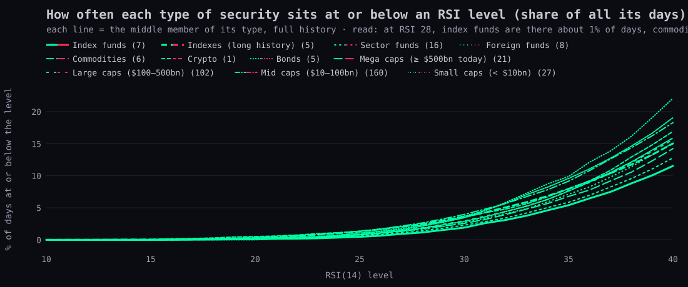
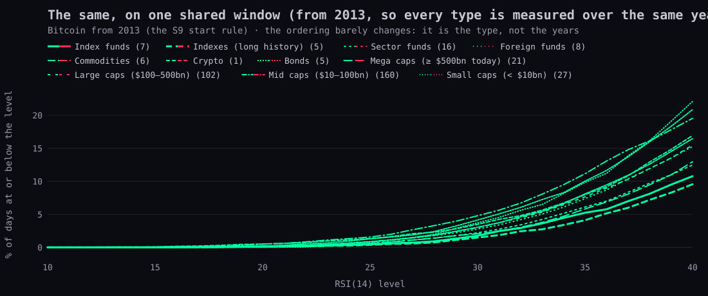
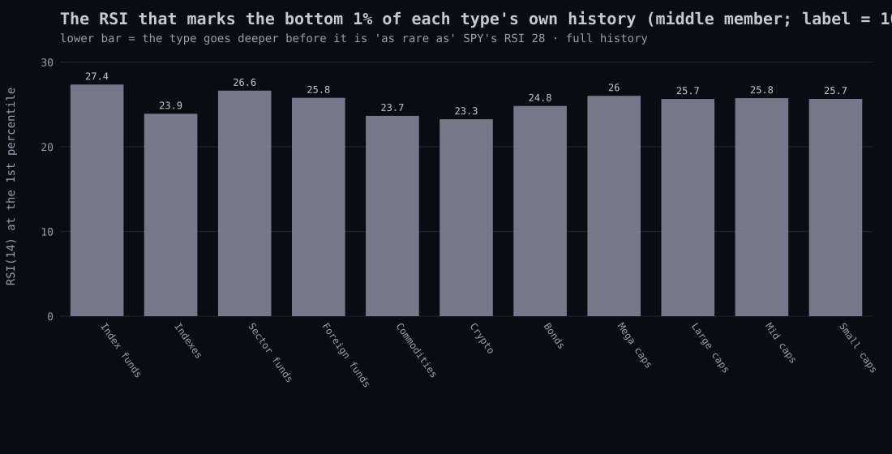
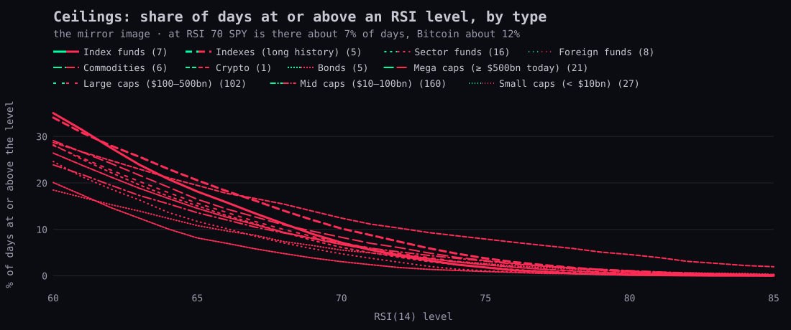
| type (members) | RSI at its 1st pct middle member · member spread | 5th pct | median | 95th | 99th | days at/below 28 | visits to ≤28 per year | a visit lasts (sessions) | days at/below 30 | days at/above 70 | from 2013 only: 1st pct · ≤28 days |
|---|---|---|---|---|---|---|---|---|---|---|---|
| Index funds (7) | 27.4 26.7 to 28.8 | 34.4 | 55.4 | 71.5 | 76.6 | 1.2% 0.8 to 1.4 | 1.4 | 1 | 1.9% | 7.1% | 28.3 · 0.9% |
| Indexes (long history) (5) | 23.9 21.7 to 27.9 | 31.8 | 55 | 73.8 | 79.9 | 2.5% 1.1 to 3.2 | 2.2 | 1.5 | 3.6% | 10.2% | 28.6 · 0.8% |
| Sector funds (16) | 26.6 25.2 to 28.7 | 34 | 53.6 | 71 | 76.9 | 1.4% 0.8 to 1.8 | 1.5 | 2 | 2.3% | 6.1% | 26.7 · 1.4% |
| Foreign funds (8) | 25.8 24.4 to 26.7 | 33.1 | 52.4 | 69.7 | 75.4 | 1.6% 1.3 to 2.1 | 1.8 | 1.8 | 2.7% | 4.7% | 25.7 · 1.8% |
| Commodities (6) | 23.7 22.4 to 24.6 | 31.3 | 50.7 | 72.2 | 80.4 | 2.6% 2.3 to 3.9 | 2.3 | 2 | 4% | 6.9% | 22.7 · 3.3% |
| Crypto (1) | 23.3 23.3 to 23.3 | 32.2 | 51.7 | 79.3 | 87.9 | 2.3% 2.3 to 2.3 | 3.1 | 2 | 3.5% | 12.4% | 23.3 · 2.3% |
| Bonds (5) | 24.8 23.1 to 26.4 | 31.4 | 50.6 | 67.8 | 74.6 | 2.1% 1.7 to 3.1 | 2.1 | 2 | 3.4% | 3.1% | 24.3 · 2.4% |
| Mega caps (≥ $500bn today) (21) | 26 24.7 to 29 | 33.5 | 53.1 | 72.9 | 79.8 | 1.7% 0.7 to 2.4 | 1.6 | 1.5 | 2.6% | 8.3% | 26.6 · 1.4% |
| Large caps ($100–500bn) (102) | 25.7 23.8 to 27.6 | 32.6 | 52.7 | 71.8 | 78.4 | 1.9% 1.2 to 2.7 | 1.7 | 2 | 2.9% | 7.1% | 25.5 · 1.8% |
| Mid caps ($10–100bn) (160) | 25.8 23.3 to 27.6 | 32.7 | 52.4 | 71.6 | 78.1 | 1.8% 1.1 to 2.9 | 1.7 | 2 | 2.9% | 6.7% | 25.7 · 1.9% |
| Small caps (< $10bn) (27) | 25.7 20.6 to 30 | 31.4 | 48.2 | 70.8 | 79.9 | 2.2% 0.4 to 4.2 | 1.7 | 2 | 3.7% | 5.5% | 25.8 · 2% |
| security | history | RSI days | 1st pct | 5th | median | 95th | 99th | days ≤28 | visits ≤28 / yr | days ≥70 | lowest · highest RSI ever |
|---|---|---|---|---|---|---|---|---|---|---|---|
| Index funds | |||||||||||
| SPY | 2003-09-11 → 2026-09-25 | 5737 | 28.3 | 35.2 | 56.1 | 71.5 | 76.8 | 0.9% | 1.17 | 7.2% | 16.7 · 87 |
| QQQ | 2011-03-23 → 2026-09-25 | 3841 | 29.5 | 36.1 | 56.6 | 73.9 | 79.3 | 0.6% | 0.71 | 11.6% | 19.1 · 85.4 |
| IWM | 2003-09-11 → 2026-09-25 | 5737 | 26.8 | 34.3 | 53.4 | 69.9 | 75.2 | 1.5% | 1.39 | 4.8% | 15.2 · 85.7 |
| DIA | 2003-09-11 → 2026-09-25 | 5737 | 27.3 | 34.1 | 55.4 | 72.5 | 79.3 | 1.2% | 1.52 | 8.2% | 15.5 · 89.2 |
| MDY | 2003-09-11 → 2026-09-25 | 5737 | 26.7 | 34.4 | 54.4 | 70 | 74.9 | 1.4% | 1.61 | 5% | 13.9 · 82.3 |
| RSP | 2003-09-11 → 2026-09-25 | 5737 | 27.4 | 34.3 | 55.4 | 70.7 | 75.5 | 1.2% | 1.65 | 6.1% | 12.5 · 83.3 |
| VTI | 2003-09-11 → 2026-09-25 | 5737 | 27.9 | 35 | 56.1 | 71.5 | 76.6 | 1.1% | 1.35 | 7.2% | 15.7 · 84.5 |
| Indexes (long history) | |||||||||||
| ^GSPC | 1927-12-30 → 2026-09-25 | 24732 | 23.9 | 31.8 | 54.2 | 73.8 | 79.5 | 2.5% | 2.25 | 10.5% | 11.1 · 90 |
| ^NDX | 1985-01-31 → 2026-09-25 | 10433 | 27.9 | 34.6 | 55 | 73.6 | 79.9 | 1.1% | 1.25 | 10.2% | 12 · 88.7 |
| ^RUT | 1987-09-10 → 2026-09-25 | 9775 | 23.4 | 31.8 | 54.2 | 74.8 | 83.8 | 2.6% | 2.31 | 10.2% | 10.4 · 90.9 |
| ^DJI | 1985-01-29 → 2026-09-25 | 10435 | 27.9 | 34.5 | 55.2 | 73 | 79.6 | 1% | 1.44 | 8.5% | 10.7 · 88.7 |
| ^IXIC | 1971-02-05 → 2026-09-25 | 13967 | 20.6 | 30.1 | 55.3 | 78 | 86.3 | 3.7% | 2.26 | 15.2% | 7.8 · 95.3 |
| Sector funds | |||||||||||
| XLK | 2003-09-11 → 2026-09-25 | 5737 | 29.1 | 34.8 | 55.1 | 72.9 | 78.6 | 0.8% | 1.00 | 9.6% | 20.6 · 84.9 |
| XLE | 2003-09-11 → 2026-09-25 | 5737 | 25 | 33.4 | 52.4 | 71.1 | 77.2 | 1.7% | 1.35 | 6.2% | 14.6 · 86.7 |
| XLF | 2003-09-11 → 2026-09-25 | 5737 | 26.8 | 33.8 | 53.4 | 70.2 | 76.6 | 1.5% | 1.52 | 5.3% | 15.4 · 84.5 |
| XLV | 2003-09-11 → 2026-09-25 | 5737 | 26.4 | 34.4 | 54.1 | 71.4 | 77.7 | 1.3% | 1.56 | 6.8% | 13.5 · 85.4 |
| XLI | 2003-09-11 → 2026-09-25 | 5737 | 26.6 | 34.2 | 54 | 72 | 76.6 | 1.4% | 1.56 | 7.8% | 14.4 · 89 |
| XLP | 2003-09-11 → 2026-09-25 | 5737 | 27.3 | 34.7 | 53.7 | 69.5 | 75.5 | 1.2% | 1.52 | 4.6% | 16.3 · 81.6 |
| XLY | 2003-09-11 → 2026-09-25 | 5737 | 27.7 | 33.9 | 54.4 | 72.1 | 79 | 1.1% | 1.69 | 7.5% | 18.4 · 87.9 |
| XLU | 2003-09-11 → 2026-09-25 | 5737 | 26.1 | 34 | 53.3 | 70.9 | 77 | 1.5% | 1.43 | 6.1% | 17.6 · 86 |
| XLB | 2003-09-11 → 2026-09-25 | 5737 | 25.4 | 33.9 | 53.5 | 69.4 | 74.7 | 1.7% | 1.52 | 4.3% | 16.1 · 82.9 |
| XLRE | 2015-10-08 → 2026-09-25 | 2690 | 26.2 | 32.6 | 52.4 | 69.7 | 75.6 | 1.8% | 2.01 | 4.7% | 18.8 · 83.8 |
| XLC | 2018-06-19 → 2026-09-25 | 2019 | 26.7 | 34.7 | 54.9 | 70.6 | 76.7 | 1.3% | 1.69 | 5.8% | 21.7 · 83.1 |
| SMH | 2003-09-11 → 2026-09-25 | 5737 | 28.3 | 34.6 | 53.7 | 71.5 | 77.6 | 0.9% | 1.26 | 6.9% | 21.8 · 84.2 |
| SOXX | 2010-10-15 → 2026-09-25 | 3950 | 29.1 | 35.4 | 54.9 | 72 | 78.2 | 0.7% | 0.88 | 7.3% | 21 · 87.1 |
| GDX | 2006-05-22 → 2026-09-25 | 5059 | 26.8 | 32.2 | 50.1 | 68.8 | 75.4 | 1.6% | 1.82 | 4.1% | 13.6 · 87.4 |
| GDXJ | 2009-11-11 → 2026-09-25 | 4183 | 26.2 | 32.4 | 49.8 | 69 | 75.1 | 1.7% | 1.72 | 4% | 12.8 · 83.2 |
| COPX | 2010-04-20 → 2026-09-25 | 4073 | 22.7 | 29 | 51 | 73 | 79.9 | 4.1% | 3.47 | 8.2% | 15.9 · 88.3 |
| Foreign funds | |||||||||||
| EEM | 2003-09-11 → 2026-09-25 | 5737 | 26.6 | 33.9 | 52.6 | 70 | 75 | 1.4% | 1.87 | 5% | 15.4 · 86 |
| EFA | 2003-09-11 → 2026-09-25 | 5737 | 23 | 32.2 | 53.4 | 68.9 | 73.5 | 2.4% | 2.21 | 3.6% | 5.4 · 84 |
| FXI | 2004-10-08 → 2026-09-25 | 5466 | 26.2 | 33.6 | 51 | 69.6 | 78.4 | 1.4% | 1.46 | 4.7% | 14.6 · 88.6 |
| EWJ | 2003-09-11 → 2026-09-25 | 5737 | 26.9 | 34.2 | 52.3 | 68.7 | 75.7 | 1.3% | 1.43 | 3.9% | 17.4 · 86.4 |
| EWU | 2003-09-11 → 2026-09-25 | 5737 | 25.9 | 33.2 | 52.6 | 68.5 | 73.5 | 1.6% | 1.82 | 3.4% | 16.4 · 84.5 |
| EZU | 2003-09-11 → 2026-09-25 | 5737 | 25.7 | 33.1 | 53.1 | 70 | 75 | 1.7% | 1.82 | 5.1% | 16 · 83 |
| MCHI | 2011-03-31 → 2026-09-25 | 3828 | 25.5 | 32.5 | 50.9 | 69.8 | 76.9 | 1.9% | 2.07 | 4.8% | 15 · 87.7 |
| ASHR | 2013-11-06 → 2026-09-25 | 3180 | 25.1 | 33.1 | 50.9 | 70.2 | 78.1 | 2% | 2.02 | 5.3% | 14.5 · 91.3 |
| Commodities | |||||||||||
| GLD | 2004-11-18 → 2026-09-25 | 5437 | 24.9 | 32.5 | 52.1 | 72.7 | 80.7 | 2.5% | 2.24 | 8.4% | 15.6 · 88.5 |
| SLV | 2006-04-28 → 2026-09-25 | 5075 | 23.3 | 31 | 50.3 | 73 | 80.6 | 2.8% | 2.40 | 7.6% | 11.7 · 88.8 |
| USO | 2006-04-10 → 2026-09-25 | 5088 | 21.7 | 28.7 | 51.1 | 70.4 | 76.9 | 4.6% | 2.74 | 5.4% | 13.7 · 89.3 |
| GCUSD | 1975-01-02 → 2026-09-25 | 13070 | 24.3 | 31.7 | 50.4 | 72.4 | 80.1 | 2.4% | 2.24 | 7.4% | 11.8 · 92.1 |
| SIUSD | 1970-01-05 → 2026-09-25 | 14307 | 24 | 32 | 49.9 | 71.9 | 82.1 | 2.2% | 1.69 | 6.5% | 9 · 96.4 |
| CLUSD | 2000-08-23 → 2026-09-25 | 6514 | 23.2 | 30.5 | 51.8 | 70 | 76.2 | 3.2% | 2.34 | 5% | 13.4 · 90.3 |
| Crypto | |||||||||||
| BTCUSD | 2013-01-01 → 2026-09-27 | 4957 | 23.3 | 32.2 | 51.7 | 79.3 | 87.9 | 2.3% | 3.06 | 12.4% | 9.5 · 96 |
| Bonds | |||||||||||
| TLT | 2003-09-11 → 2026-09-25 | 5737 | 26.9 | 32.2 | 50.1 | 68.1 | 75.5 | 1.5% | 1.65 | 3.4% | 15.2 · 86 |
| IEF | 2003-09-11 → 2026-09-25 | 5737 | 24.8 | 31.3 | 50.6 | 67.8 | 74.6 | 2.1% | 2.04 | 3.1% | 15 · 87.8 |
| SHY | 2003-09-11 → 2026-09-25 | 5737 | 25.7 | 32.2 | 49.7 | 66.1 | 71.8 | 2% | 2.13 | 1.9% | 13.1 · 88.3 |
| HYG | 2007-04-11 → 2026-09-25 | 4837 | 22.5 | 30 | 51.6 | 66.7 | 72.4 | 3.7% | 3.80 | 2.1% | 9.7 · 80 |
| LQD | 2003-09-11 → 2026-09-25 | 5737 | 24.2 | 31.4 | 51.2 | 69.4 | 77 | 2.3% | 2.30 | 4.5% | 9.3 · 87.6 |
| Fear index | |||||||||||
| VIX | 1990-01-02 → 2026-09-25 | 9214 | 33.2 | 37.3 | 48 | 64.4 | 72.9 | 0.2% | 0.22 | 1.8% | 24.4 · 91.1 |
| Mega caps (≥ $500bn today) | |||||||||||
| AAPL | 2003-09-11 → 2026-09-25 | 5737 | 26.3 | 34.5 | 55.7 | 76.6 | 83 | 1.4% | 1.04 | 14.7% | 17.1 · 91.4 |
| AMD | 2003-09-11 → 2026-09-25 | 5737 | 22.1 | 29.6 | 51.1 | 74.4 | 81.2 | 3.8% | 2.47 | 8.9% | 9.2 · 88.9 |
| AMZN | 2003-09-11 → 2026-09-25 | 5737 | 27.3 | 33.5 | 53.8 | 73.1 | 79.8 | 1.2% | 1.04 | 8.3% | 17.8 · 94.2 |
| ASML | 2007-10-29 → 2026-09-25 | 4697 | 28 | 34.3 | 53.5 | 71.7 | 78.7 | 1% | 1.32 | 6.7% | 22.3 · 85.7 |
| AVGO | 2009-08-06 → 2026-09-25 | 4251 | 29 | 36.4 | 54.7 | 72.3 | 79 | 0.8% | 0.99 | 7.5% | 20.1 · 88.1 |
| BRK-B | 2003-09-11 → 2026-09-25 | 5737 | 29 | 35.3 | 52.7 | 72.4 | 79.3 | 0.7% | 1.00 | 7.9% | 15.8 · 86.8 |
| GOOG | 2004-08-19 → 2026-09-25 | 5501 | 25.9 | 33.7 | 54 | 74.6 | 82.4 | 1.8% | 1.54 | 11.5% | 7.7 · 91 |
| GOOGL | 2014-04-03 → 2026-09-25 | 3079 | 29.2 | 35.5 | 54.6 | 73.1 | 82.5 | 0.6% | 1.04 | 9.4% | 24 · 88.6 |
| INTC | 2003-09-11 → 2026-09-25 | 5737 | 24.7 | 31.2 | 51 | 71.7 | 80 | 2.4% | 2.08 | 6.7% | 15 · 92.8 |
| JNJ | 2003-09-11 → 2026-09-25 | 5737 | 25.5 | 32.9 | 52.6 | 72.6 | 80.2 | 1.8% | 1.78 | 7.8% | 17.6 · 89.5 |
| JPM | 2003-09-11 → 2026-09-25 | 5737 | 27.2 | 33.7 | 53.1 | 72.2 | 78.7 | 1.4% | 1.69 | 7.6% | 16.1 · 87.4 |
| LLY | 2003-09-11 → 2026-09-25 | 5737 | 25.8 | 33.1 | 52.3 | 73.8 | 82.3 | 1.8% | 1.69 | 8.4% | 13.2 · 90.4 |
| META | 2022-06-09 → 2026-09-25 | 1018 | 25.2 | 33.7 | 54.7 | 74.6 | 81.3 | 2.5% | 1.16 | 12.5% | 22.5 · 86.5 |
| MSFT | 2003-09-11 → 2026-09-25 | 5737 | 26.6 | 33.2 | 53.2 | 72.9 | 78.7 | 1.6% | 1.65 | 9.2% | 16.8 · 89.2 |
| MU | 2003-09-11 → 2026-09-25 | 5737 | 25.9 | 32 | 51.6 | 73.2 | 79.5 | 2.1% | 2.04 | 8.8% | 11.9 · 86.4 |
| NVDA | 2003-09-11 → 2026-09-25 | 5737 | 25.8 | 33.1 | 54.4 | 75 | 81.9 | 1.7% | 1.56 | 11.5% | 13 · 91.5 |
| TSLA | 2010-06-29 → 2026-09-25 | 4026 | 26 | 32.3 | 51.8 | 75 | 83.9 | 1.9% | 2.03 | 10.5% | 16.6 · 94.2 |
| TSM | 2003-09-11 → 2026-09-25 | 5737 | 28.7 | 34.8 | 53.1 | 70.4 | 76.8 | 0.8% | 0.91 | 5.6% | 18.8 · 87 |
| V | 2008-03-19 → 2026-09-25 | 4600 | 30.6 | 36.5 | 54.6 | 71.6 | 77.7 | 0.6% | 0.70 | 6.8% | 20.8 · 86.2 |
| WMT | 2003-09-11 → 2026-09-25 | 5737 | 25.8 | 32.6 | 52.1 | 72.2 | 78.1 | 1.9% | 1.78 | 7.4% | 15.9 · 84.8 |
| XOM | 2003-09-11 → 2026-09-25 | 5737 | 24.3 | 32.8 | 51.9 | 70.4 | 78 | 2.1% | 1.82 | 5.3% | 14.8 · 85.2 |
| Large caps ($100–500bn) | |||||||||||
| ABBV | 2013-01-02 → 2026-09-25 | 3394 | 26.9 | 32.8 | 53.7 | 73.4 | 79.9 | 1.5% | 1.89 | 9.6% | 18 · 92 |
| ABT | 2013-01-02 → 2026-09-25 | 3394 | 24.8 | 32.4 | 52.5 | 71.2 | 77.7 | 2.1% | 1.68 | 6.7% | 15 · 85.4 |
| ADI | 2003-09-11 → 2026-09-25 | 5737 | 27.3 | 33.9 | 52 | 69.5 | 74.7 | 1.3% | 1.56 | 4.6% | 20.1 · 85.4 |
| ADP | 2003-09-11 → 2026-09-25 | 5737 | 25.6 | 33.9 | 52.8 | 71.8 | 77.5 | 1.4% | 1.43 | 7.5% | 13.9 · 85.3 |
| AEM | 2003-09-11 → 2026-09-25 | 5737 | 25.7 | 31.6 | 51.5 | 71.2 | 77.1 | 2.1% | 1.91 | 6.5% | 14.5 · 87.2 |
| AMAT | 2003-09-11 → 2026-09-25 | 5737 | 28.2 | 33.5 | 52 | 72 | 78.2 | 1% | 1.04 | 7.1% | 15.2 · 84.5 |
| AMGN | 2003-09-11 → 2026-09-25 | 5737 | 25.1 | 32.3 | 51.5 | 72.3 | 79.5 | 1.9% | 2.04 | 7.1% | 14.5 · 91.2 |
| ANET | 2014-06-06 → 2026-09-25 | 3035 | 27.6 | 33.7 | 55 | 74.6 | 80.8 | 1.2% | 1.30 | 10.4% | 18.1 · 89.2 |
| APH | 2003-09-11 → 2026-09-25 | 5737 | 27.3 | 35 | 55 | 72.7 | 78.3 | 1.2% | 1.52 | 8.4% | 15.1 · 87.4 |
| APP | 2021-04-15 → 2026-09-25 | 1309 | 26.3 | 31 | 51.9 | 80.2 | 87.1 | 1.7% | 2.02 | 13.4% | 21.7 · 92.5 |
| ARM | 2023-09-14 → 2026-09-25 | 701 | 23.3 | 32.3 | 52.5 | 71.9 | 81.1 | 2.7% | 1.32 | 6.7% | 21.4 · 91.3 |
| AXP | 2003-09-11 → 2026-09-25 | 5737 | 25.9 | 33.7 | 53 | 71.6 | 76.9 | 1.5% | 1.43 | 7.2% | 13.4 · 82.1 |
| BA | 2003-09-11 → 2026-09-25 | 5737 | 24.2 | 32.5 | 52.4 | 73 | 79.6 | 2.1% | 1.87 | 8.4% | 13.4 · 93 |
| BABA | 2014-09-19 → 2026-09-25 | 2962 | 23.8 | 31 | 50.2 | 71.5 | 78.5 | 2.6% | 2.16 | 6.4% | 16.5 · 88.9 |
| BAC | 2003-09-11 → 2026-09-25 | 5737 | 23.8 | 31.3 | 52.2 | 71.3 | 76.9 | 2.8% | 2.26 | 6.6% | 13.8 · 88.6 |
| BKNG | 2018-02-27 → 2026-09-25 | 2097 | 25.4 | 32 | 52.5 | 70.8 | 77.8 | 2.1% | 2.68 | 6% | 19.3 · 88.8 |
| BLK | 2003-09-11 → 2026-09-25 | 5737 | 26.3 | 32.8 | 53.6 | 72 | 79.4 | 1.8% | 1.74 | 6.8% | 16.4 · 88 |
| BMY | 2003-09-11 → 2026-09-25 | 5737 | 22.1 | 30.1 | 51.6 | 70.6 | 77.7 | 3.5% | 2.34 | 5.6% | 15.2 · 87.6 |
| BX | 2007-06-22 → 2026-09-25 | 4786 | 26 | 32.2 | 52.5 | 72.8 | 79.6 | 1.9% | 2.13 | 8.6% | 18.1 · 88.1 |
| C | 2003-09-11 → 2026-09-25 | 5737 | 23.5 | 30.1 | 51.7 | 70.6 | 77.2 | 3.4% | 3.04 | 5.8% | 14.5 · 84.2 |
| CAT | 2003-09-11 → 2026-09-25 | 5737 | 25.2 | 31.9 | 53.2 | 73.4 | 79.2 | 2.4% | 2.47 | 9.4% | 16 · 88.5 |
| CB | 2003-09-11 → 2026-09-25 | 5737 | 27.7 | 35.9 | 52.9 | 70.4 | 77.7 | 1.1% | 1.17 | 5.5% | 13.9 · 86.4 |
| COF | 2003-09-11 → 2026-09-25 | 5737 | 25.8 | 33 | 52 | 70.5 | 76.2 | 1.9% | 2.08 | 5.7% | 17.1 · 87.2 |
| COP | 2003-09-11 → 2026-09-25 | 5737 | 23.6 | 33 | 51.8 | 72.7 | 79.3 | 2.1% | 1.69 | 7.7% | 10 · 91.5 |
| COST | 2003-09-11 → 2026-09-25 | 5737 | 28.3 | 35 | 53.9 | 74 | 79.5 | 1% | 1.00 | 9.7% | 15.8 · 85.8 |
| CRM | 2004-06-23 → 2026-09-25 | 5541 | 27.4 | 33.4 | 53.5 | 72.2 | 78.3 | 1.4% | 1.75 | 7.8% | 16.7 · 88.7 |
| CRWD | 2019-06-12 → 2026-09-25 | 1773 | 24.3 | 32.6 | 54.4 | 72.8 | 83.8 | 2% | 1.51 | 8.3% | 15.9 · 90.1 |
| CSCO | 2003-09-11 → 2026-09-25 | 5737 | 26.1 | 32.3 | 52.3 | 72.3 | 78.3 | 2% | 2.13 | 7.8% | 17.2 · 88.7 |
| CVS | 2003-09-11 → 2026-09-25 | 5737 | 25 | 32 | 52.6 | 71 | 77.1 | 2.2% | 1.87 | 6.2% | 12.1 · 84.2 |
| CVX | 2003-09-11 → 2026-09-25 | 5737 | 25.6 | 32.5 | 52.3 | 71.2 | 77.7 | 1.9% | 2.00 | 6.5% | 15.8 · 86.8 |
| DE | 2003-09-11 → 2026-09-25 | 5737 | 27.6 | 33.3 | 53.1 | 72.2 | 78.8 | 1.2% | 1.61 | 7.2% | 18.1 · 92.8 |
| DELL | 2018-12-28 → 2026-09-25 | 1886 | 26.1 | 32.3 | 55.5 | 71.1 | 78.2 | 2.1% | 2.45 | 6.4% | 21.1 · 91.3 |
| DHR | 2003-09-11 → 2026-09-25 | 5737 | 25.6 | 33.8 | 53.7 | 71.4 | 77.1 | 1.6% | 1.26 | 6.8% | 15.2 · 89 |
| DIS | 2003-09-11 → 2026-09-25 | 5737 | 25.1 | 32.3 | 52.2 | 71.5 | 78.2 | 2% | 1.91 | 6.6% | 16.7 · 89.1 |
| EQIX | 2003-09-11 → 2026-09-25 | 5737 | 27.1 | 33.5 | 53.7 | 71.6 | 78.5 | 1.3% | 1.69 | 7.3% | 19.4 · 85.1 |
| ETN | 2003-09-11 → 2026-09-25 | 5737 | 24.1 | 32.3 | 53.8 | 71 | 75.5 | 2% | 1.61 | 6.5% | 14.2 · 82.8 |
| FCX | 2003-09-11 → 2026-09-25 | 5737 | 25.2 | 30.2 | 51.4 | 70.5 | 77.8 | 2.7% | 3.17 | 5.5% | 16.7 · 86.7 |
| GE | 2003-09-11 → 2026-09-25 | 5737 | 24.4 | 30.7 | 51.5 | 72.2 | 79.3 | 2.7% | 2.82 | 7.5% | 17 · 89.9 |
| GEV | 2024-04-02 → 2026-09-25 | 564 | 34.7 | 39.1 | 55.7 | 78.1 | 82.6 | 0% | 0.00 | 18.4% | 28.3 · 85 |
| GILD | 2003-09-11 → 2026-09-25 | 5737 | 27 | 33.6 | 52.1 | 70.8 | 79.7 | 1.3% | 1.61 | 5.8% | 19.3 · 93.8 |
| GS | 2003-09-11 → 2026-09-25 | 5737 | 25.8 | 32.5 | 52.8 | 72.3 | 79.5 | 1.8% | 1.91 | 7.7% | 15.5 · 90 |
| HD | 2003-09-11 → 2026-09-25 | 5737 | 25.2 | 32.3 | 53.1 | 72.2 | 78.8 | 2.1% | 1.87 | 8% | 14.5 · 89 |
| HOOD | 2021-07-29 → 2026-09-25 | 1236 | 21.8 | 30.2 | 50.9 | 73.8 | 79.2 | 3.7% | 2.13 | 11.8% | 14.8 · 83.1 |
| IBM | 2003-09-11 → 2026-09-25 | 5737 | 23.1 | 31.2 | 51.8 | 72.3 | 78.7 | 2.8% | 2.26 | 7.5% | 6.7 · 88.2 |
| ISRG | 2003-09-11 → 2026-09-25 | 5737 | 27 | 33.6 | 54.2 | 73.8 | 81.7 | 1.3% | 1.26 | 10% | 15.9 · 92.9 |
| KLAC | 2003-09-11 → 2026-09-25 | 5737 | 27 | 33.8 | 52.7 | 71.8 | 78.7 | 1.4% | 1.35 | 7.4% | 15.5 · 86 |
| KO | 2003-09-11 → 2026-09-25 | 5737 | 24.9 | 33.5 | 52.5 | 70.9 | 77.3 | 1.7% | 1.39 | 6.1% | 12.3 · 85.6 |
| LIN | 2018-10-31 → 2026-09-25 | 1925 | 27 | 32.7 | 53.8 | 71.3 | 77.4 | 1.5% | 1.90 | 6.1% | 16.8 · 82.4 |
| LMT | 2003-09-11 → 2026-09-25 | 5737 | 25.3 | 32.6 | 53.3 | 73.5 | 80.1 | 1.8% | 1.65 | 8.6% | 18.2 · 91.9 |
| LOW | 2003-09-11 → 2026-09-25 | 5737 | 24.6 | 32 | 52.1 | 72.5 | 78.8 | 2.5% | 2.08 | 7.7% | 16.9 · 86.5 |
| LRCX | 2003-09-11 → 2026-09-25 | 5737 | 29 | 34.4 | 52.9 | 72 | 77.5 | 0.5% | 0.78 | 7.8% | 21.7 · 85.8 |
| MA | 2006-05-25 → 2026-09-25 | 5056 | 29.5 | 35.8 | 55.2 | 72.8 | 79.9 | 0.7% | 0.69 | 8.7% | 20.1 · 87.4 |
| MCD | 2003-09-11 → 2026-09-25 | 5737 | 26.2 | 33.6 | 53.3 | 71.6 | 78.3 | 1.7% | 1.65 | 7.1% | 18.6 · 91.6 |
| MCK | 2003-09-11 → 2026-09-25 | 5737 | 26.1 | 32.9 | 53.7 | 72.5 | 77.9 | 1.6% | 1.56 | 8.3% | 11.2 · 88.3 |
| MDT | 2003-09-11 → 2026-09-25 | 5737 | 24.8 | 31.5 | 52.4 | 70.1 | 76.2 | 2.4% | 2.52 | 5.1% | 14.3 · 82.5 |
| MO | 2008-03-31 → 2026-09-25 | 4593 | 25.3 | 32 | 52.8 | 73 | 79 | 2.2% | 2.00 | 8.4% | 15.8 · 86.8 |
| MPC | 2011-07-01 → 2026-09-25 | 3771 | 24.6 | 31.5 | 53.8 | 73.4 | 81.7 | 2.3% | 2.03 | 9.6% | 13.3 · 90.9 |
| MRK | 2003-09-11 → 2026-09-25 | 5737 | 23.8 | 31.5 | 51.8 | 71 | 78.3 | 2.8% | 1.95 | 6.2% | 9.3 · 84.6 |
| MRVL | 2003-09-11 → 2026-09-25 | 5737 | 26.9 | 32.9 | 52.1 | 70.6 | 77.6 | 1.5% | 1.39 | 5.8% | 16.8 · 92.4 |
| MS | 2006-01-17 → 2026-09-25 | 5146 | 25 | 32.3 | 52.5 | 71.3 | 78.4 | 2.2% | 1.98 | 6.5% | 14.1 · 86.8 |
| NEE | 2010-06-23 → 2026-09-25 | 4030 | 26.4 | 33.9 | 54.1 | 71.7 | 78.6 | 1.4% | 1.41 | 6.9% | 13.4 · 87.4 |
| NEM | 2003-09-11 → 2026-09-25 | 5737 | 23.7 | 30.7 | 50.5 | 70 | 76.1 | 2.9% | 2.26 | 5% | 13.2 · 85 |
| NFLX | 2003-09-11 → 2026-09-25 | 5737 | 22.6 | 30.7 | 53.6 | 73.4 | 79.9 | 3.4% | 2.17 | 10.4% | 9.2 · 91.5 |
| NOW | 2012-06-29 → 2026-09-25 | 3520 | 26.8 | 34.7 | 53.9 | 72.6 | 78.4 | 1.3% | 1.05 | 8.5% | 16.3 · 88.9 |
| ORCL | 2003-09-11 → 2026-09-25 | 5737 | 27.2 | 33.4 | 52.9 | 71 | 77.1 | 1.3% | 1.61 | 5.9% | 19.2 · 88.9 |
| PANW | 2012-07-20 → 2026-09-25 | 3506 | 24.1 | 31.5 | 54.5 | 73.3 | 80.1 | 2.5% | 2.04 | 9.5% | 14.2 · 87 |
| PDD | 2018-07-26 → 2026-09-25 | 1993 | 25.7 | 31.8 | 50.4 | 72.4 | 80.7 | 2.1% | 1.84 | 7% | 19.8 · 88 |
| PEP | 2003-09-11 → 2026-09-25 | 5737 | 27.8 | 33.7 | 52.6 | 69.5 | 75.7 | 1.1% | 1.52 | 4.4% | 19.1 · 85.1 |
| PFE | 2003-09-11 → 2026-09-25 | 5737 | 23.8 | 31 | 50.5 | 69.6 | 75.6 | 2.5% | 2.13 | 4.6% | 14.7 · 85.3 |
| PG | 2003-09-11 → 2026-09-25 | 5737 | 26 | 32.2 | 52.5 | 69.7 | 75.4 | 1.9% | 2.13 | 4.6% | 11.7 · 82.4 |
| PGR | 2003-09-11 → 2026-09-25 | 5737 | 26 | 33.8 | 52.8 | 72.7 | 79.1 | 1.5% | 1.52 | 7.7% | 17.3 · 87.1 |
| PH | 2003-09-11 → 2026-09-25 | 5737 | 25.9 | 33.6 | 53.6 | 71.8 | 77.5 | 1.6% | 1.61 | 7.8% | 14.3 · 85.2 |
| PLD | 2011-06-03 → 2026-09-25 | 3791 | 24.4 | 32.8 | 53.5 | 70.8 | 76 | 2.2% | 1.96 | 5.9% | 15.2 · 87.2 |
| PLTR | 2020-09-30 → 2026-09-25 | 1444 | 26.9 | 33.7 | 51.4 | 74 | 81 | 1.4% | 1.34 | 9.4% | 16 · 85.1 |
| PM | 2008-03-31 → 2026-09-25 | 4593 | 25.1 | 32.1 | 52.3 | 72.8 | 80.7 | 2% | 1.73 | 7.8% | 12.8 · 90.2 |
| PSX | 2012-05-01 → 2026-09-25 | 3562 | 23.1 | 32.3 | 52.7 | 73.7 | 79.4 | 2.3% | 1.74 | 9.4% | 10.9 · 85.6 |
| QCOM | 2003-09-11 → 2026-09-25 | 5737 | 24.7 | 32.3 | 52.1 | 70.7 | 78.6 | 2% | 1.91 | 5.6% | 15.1 · 92.3 |
| RTX | 2020-04-03 → 2026-09-25 | 1568 | 22.3 | 32.6 | 54.2 | 72.4 | 77.4 | 2.2% | 1.39 | 8.7% | 16.4 · 81.9 |
| SBUX | 2003-09-11 → 2026-09-25 | 5737 | 25.6 | 32.3 | 52.7 | 71.8 | 78.2 | 1.8% | 2.08 | 7.2% | 17.3 · 85.2 |
| SCCO | 2010-02-17 → 2026-09-25 | 4118 | 26.8 | 32.8 | 51.1 | 71.7 | 78.7 | 1.5% | 1.87 | 6.4% | 19 · 89 |
| SCHW | 2005-12-20 → 2026-09-25 | 5163 | 26.7 | 33.4 | 52.7 | 71.2 | 77.9 | 1.4% | 1.35 | 6.4% | 14 · 86.4 |
| SHOP | 2015-05-21 → 2026-09-25 | 2794 | 28.1 | 33.2 | 54.2 | 74 | 80.5 | 0.9% | 0.97 | 10.1% | 20.7 · 90.3 |
| SNDK | 2025-02-24 → 2026-09-25 | 340 | 39.1 | 42.8 | 60.9 | 84.2 | 93.9 | 0% | 0.00 | 27.1% | 32.8 · 95.3 |
| SNOW | 2020-09-16 → 2026-09-25 | 1454 | 25.6 | 31.6 | 50.4 | 72.5 | 79.8 | 2.1% | 1.99 | 7% | 18.9 · 89.2 |
| SPGI | 2016-04-28 → 2026-09-25 | 2558 | 24.4 | 31.4 | 55 | 72.5 | 78.1 | 2.6% | 2.02 | 8.3% | 15.4 · 85.7 |
| SPOT | 2018-04-03 → 2026-09-25 | 2073 | 26.9 | 31.8 | 52.1 | 73.8 | 81.9 | 1.6% | 1.77 | 8.5% | 17.6 · 87.3 |
| STX | 2003-09-11 → 2026-09-25 | 5737 | 23.8 | 30.7 | 52.1 | 74.7 | 82.6 | 3% | 2.13 | 10% | 15.5 · 92.3 |
| SYK | 2003-09-11 → 2026-09-25 | 5737 | 26.3 | 33.8 | 53.5 | 71.6 | 77.4 | 1.5% | 1.48 | 6.7% | 15.5 · 87.6 |
| T | 2003-09-11 → 2026-09-25 | 5730 | 24.6 | 31.2 | 50.8 | 70.7 | 78.9 | 2.6% | 2.39 | 6% | 17.7 · 91.7 |
| TJX | 2003-09-11 → 2026-09-25 | 5737 | 25.6 | 35.3 | 53.8 | 70.4 | 76.1 | 1.4% | 0.82 | 5.7% | 15.1 · 83.1 |
| TMO | 2003-09-11 → 2026-09-25 | 5737 | 26.9 | 34.3 | 54.1 | 71.7 | 77 | 1.4% | 1.35 | 7.6% | 15.1 · 84.2 |
| TMUS | 2013-05-01 → 2026-09-25 | 3312 | 27.6 | 34.3 | 53.3 | 70.6 | 78.3 | 1.1% | 1.12 | 5.7% | 16.5 · 88.1 |
| TXN | 2003-09-11 → 2026-09-25 | 5737 | 27.3 | 34 | 52.4 | 70.6 | 77.9 | 1.2% | 1.26 | 5.5% | 19.4 · 89.6 |
| UBER | 2019-05-10 → 2026-09-25 | 1795 | 27.2 | 32.7 | 50.4 | 72.3 | 79.4 | 1.6% | 2.17 | 7.2% | 15.3 · 86.8 |
| UNH | 2003-09-11 → 2026-09-25 | 5737 | 25.5 | 33.2 | 53.8 | 71.5 | 77.5 | 2% | 1.65 | 6.9% | 12 · 85.6 |
| UNP | 2003-09-11 → 2026-09-25 | 5737 | 26.7 | 33.6 | 53.3 | 70.9 | 75.9 | 1.3% | 1.48 | 6.1% | 17.1 · 85.8 |
| VLO | 2003-09-11 → 2026-09-25 | 5737 | 24.5 | 32.5 | 52.7 | 73.8 | 80.5 | 2.1% | 1.56 | 9.7% | 14.7 · 89.9 |
| VRTX | 2003-09-11 → 2026-09-25 | 5735 | 26.2 | 32.5 | 52.1 | 72 | 79.1 | 2% | 1.91 | 7.2% | 17.9 · 88.9 |
| VZ | 2003-09-11 → 2026-09-25 | 5737 | 25.1 | 32 | 50.4 | 70.5 | 77.2 | 2% | 2.26 | 5.4% | 15.4 · 90.3 |
| WDC | 2003-09-11 → 2026-09-25 | 5737 | 23.7 | 30.8 | 52.1 | 73 | 80.4 | 2.6% | 2.00 | 9.1% | 13.2 · 89.5 |
| WELL | 2018-02-28 → 2026-09-25 | 2096 | 24.2 | 35.2 | 54.7 | 71.5 | 78.5 | 1.9% | 1.40 | 7% | 12.6 · 84.4 |
| WFC | 2003-09-11 → 2026-09-25 | 5737 | 26.3 | 32.9 | 52.1 | 69.5 | 75.6 | 1.5% | 1.65 | 4.4% | 15.3 · 86.3 |
| Mid caps ($10–100bn) | |||||||||||
| ABNB | 2020-12-10 → 2026-09-25 | 1394 | 26.5 | 33.1 | 50 | 69 | 75.2 | 1.5% | 1.73 | 4.4% | 20.4 · 81.6 |
| ADBE | 2003-09-11 → 2026-09-25 | 5737 | 24.8 | 32.5 | 53.4 | 72.3 | 78.2 | 2% | 1.69 | 8% | 17.2 · 85.2 |
| ADM | 2003-09-11 → 2026-09-25 | 5737 | 24.3 | 31.3 | 51.9 | 71.4 | 77.9 | 2.6% | 2.56 | 6.7% | 10.2 · 85.9 |
| AEE | 2003-09-11 → 2026-09-25 | 5737 | 22.8 | 33 | 52.2 | 69 | 75.4 | 2.1% | 1.52 | 4% | 12.5 · 90.2 |
| AEP | 2003-09-11 → 2026-09-25 | 5737 | 25.9 | 33.2 | 52.8 | 71.1 | 77.5 | 1.8% | 1.69 | 6.2% | 17.9 · 86.7 |
| AFRM | 2021-01-13 → 2026-09-25 | 1372 | 26.2 | 32.5 | 48.9 | 71.5 | 79.3 | 1.5% | 1.23 | 6.8% | 21.1 · 85.7 |
| ALAB | 2024-03-20 → 2026-09-25 | 572 | 28.4 | 33.4 | 51.2 | 77.2 | 81.3 | 1.1% | 1.99 | 17.8% | 23.5 · 83.8 |
| AMCR | 2019-06-11 → 2026-09-25 | 1774 | 25.7 | 32 | 50.1 | 66.4 | 71.9 | 2% | 1.92 | 1.7% | 15.2 · 78.1 |
| AME | 2003-09-11 → 2026-09-25 | 5737 | 27.3 | 35 | 54.3 | 71.8 | 76.8 | 1.2% | 1.00 | 7.9% | 15.8 · 85.2 |
| AMT | 2003-09-11 → 2026-09-25 | 5737 | 27.6 | 34.4 | 52.9 | 71.3 | 77.9 | 1.2% | 1.39 | 6.3% | 15.6 · 87.9 |
| AON | 2009-12-01 → 2026-09-25 | 4170 | 26.6 | 33.6 | 54.3 | 73.3 | 80.8 | 1.5% | 1.67 | 9.3% | 16.6 · 88.8 |
| APD | 2003-09-11 → 2026-09-25 | 5737 | 24.3 | 32.8 | 52.8 | 71.6 | 77.9 | 2% | 1.69 | 6.4% | 16.7 · 86.2 |
| ASTS | 2021-04-07 → 2026-09-25 | 1315 | 26.1 | 31.6 | 48.4 | 73.8 | 82.5 | 2% | 1.10 | 7.2% | 20.5 · 87.5 |
| ATO | 2003-09-11 → 2026-09-25 | 5737 | 26 | 34 | 53.1 | 70.4 | 76.3 | 1.4% | 1.48 | 5.5% | 17.1 · 85.5 |
| AU | 2003-09-11 → 2026-09-25 | 5737 | 23.1 | 30 | 49.9 | 70.3 | 77.4 | 3.5% | 2.69 | 5.2% | 15.7 · 86.8 |
| AUR | 2021-11-04 → 2026-09-25 | 1167 | 27.2 | 31.3 | 48.3 | 70.1 | 83 | 1.6% | 1.84 | 5.1% | 24.1 · 90.9 |
| BE | 2018-07-25 → 2026-09-25 | 1994 | 21.7 | 29.4 | 49.8 | 74.1 | 82.4 | 3.8% | 1.96 | 8.6% | 10.5 · 89.7 |
| BIDU | 2005-08-05 → 2026-09-25 | 5258 | 23.1 | 31.4 | 50.8 | 72.4 | 81.1 | 2.9% | 2.03 | 7.5% | 12.3 · 90.3 |
| BKR | 2019-10-18 → 2026-09-25 | 1683 | 26.1 | 31.6 | 52.2 | 72.9 | 77.8 | 1.8% | 1.73 | 7.8% | 12.2 · 82.4 |
| BSX | 2003-09-11 → 2026-09-25 | 5737 | 25.1 | 31.8 | 51.7 | 71.3 | 79.2 | 2.2% | 2.26 | 6.3% | 15.8 · 90.2 |
| CBRE | 2018-03-20 → 2026-09-25 | 2082 | 24 | 31.4 | 54 | 70.8 | 78.6 | 2.8% | 2.23 | 5.9% | 15.9 · 86.5 |
| CCI | 2003-09-11 → 2026-09-25 | 5737 | 25.4 | 33 | 52.1 | 71 | 78.2 | 1.7% | 1.56 | 6.3% | 14.3 · 87.8 |
| CCJ | 2003-09-11 → 2026-09-25 | 5737 | 25.6 | 31.5 | 50.5 | 71 | 79.1 | 2.2% | 2.30 | 5.9% | 15 · 86.9 |
| CDE | 2003-09-11 → 2026-09-25 | 5737 | 24.1 | 30.7 | 49.1 | 70.5 | 78.7 | 2.9% | 2.30 | 5.5% | 16.5 · 90.7 |
| CDNS | 2005-10-31 → 2026-09-25 | 5198 | 24.9 | 32.5 | 53.7 | 72.9 | 79.9 | 2.4% | 1.82 | 8.9% | 15.4 · 90.4 |
| CEG | 2022-02-02 → 2026-09-25 | 1106 | 28.3 | 34.7 | 53.4 | 75.4 | 83.2 | 0.9% | 0.86 | 10.9% | 21.4 · 88.2 |
| CHTR | 2010-09-14 → 2026-09-25 | 3973 | 24.1 | 31.7 | 53.1 | 73.9 | 78.4 | 2.3% | 2.31 | 10.1% | 15.8 · 89.5 |
| CL | 2003-09-11 → 2026-09-25 | 5737 | 25.8 | 33 | 52.5 | 69.2 | 74.6 | 1.8% | 1.61 | 3.9% | 12.1 · 81.4 |
| CMCSA | 2003-09-11 → 2026-09-25 | 5737 | 26.7 | 32.9 | 51.8 | 70.3 | 76 | 1.5% | 1.74 | 5.3% | 18.1 · 84.3 |
| CME | 2003-09-11 → 2026-09-25 | 5737 | 26.5 | 33.9 | 52.6 | 72.2 | 78.5 | 1.6% | 1.65 | 7.9% | 19.1 · 86.7 |
| CMI | 2003-12-10 → 2026-09-25 | 5674 | 25.9 | 32.9 | 53.4 | 71.3 | 77 | 1.9% | 2.02 | 6.7% | 20.5 · 86.6 |
| COIN | 2021-04-14 → 2026-09-25 | 1310 | 25.9 | 32.7 | 47.9 | 72.4 | 80.5 | 1.8% | 1.28 | 7.1% | 14.4 · 86.9 |
| CRDO | 2022-01-27 → 2026-09-25 | 1110 | 25.3 | 32.6 | 53.2 | 75.7 | 82 | 1.9% | 1.07 | 14% | 22.1 · 88.6 |
| CRH | 2006-03-31 → 2026-09-25 | 5094 | 26.2 | 33.8 | 51.7 | 69.3 | 75.8 | 1.5% | 1.32 | 4.4% | 16.1 · 80.9 |
| CRWV | 2025-03-28 → 2026-09-25 | 316 | 23.4 | 31.9 | 48.1 | 65.4 | 72.7 | 3.5% | 0.67 | 2.5% | 21.1 · 75.1 |
| CSX | 2003-09-11 → 2026-09-25 | 5737 | 27.8 | 33.5 | 53.8 | 70.3 | 76.3 | 1.1% | 1.43 | 5.6% | 13.3 · 85.2 |
| CTAS | 2003-09-11 → 2026-09-25 | 5737 | 26.6 | 33.1 | 54.1 | 72.7 | 78.5 | 1.7% | 1.69 | 8.3% | 18.2 · 85.3 |
| CTVA | 2019-06-03 → 2026-09-25 | 1780 | 29.5 | 34.5 | 52.5 | 71.9 | 76.9 | 0.7% | 1.09 | 6.6% | 21.4 · 80.7 |
| D | 2003-09-11 → 2026-09-25 | 5737 | 25.6 | 33.2 | 52.4 | 68.6 | 75 | 1.7% | 1.43 | 3.7% | 18.5 · 82.2 |
| DAL | 2007-05-03 → 2026-09-25 | 4821 | 25.6 | 31.9 | 51.6 | 71.7 | 79.8 | 2.1% | 2.27 | 7% | 16.8 · 88.9 |
| DASH | 2020-12-09 → 2026-09-25 | 1395 | 26.2 | 33.2 | 52.5 | 72.1 | 78.1 | 1.2% | 1.04 | 7.8% | 17.9 · 88.4 |
| DDOG | 2019-09-19 → 2026-09-25 | 1704 | 26.3 | 33.1 | 52.1 | 74.3 | 83.5 | 1.6% | 1.57 | 11% | 20 · 93.1 |
| DKNG | 2020-04-24 → 2026-09-25 | 1554 | 22.7 | 30 | 50.1 | 69.8 | 73.9 | 3.3% | 2.65 | 4.8% | 14.9 · 85.7 |
| DLR | 2004-10-29 → 2026-09-25 | 5451 | 25.2 | 33.1 | 53.3 | 71.8 | 77.1 | 1.8% | 1.69 | 7% | 14.4 · 85.3 |
| DOW | 2019-04-02 → 2026-09-25 | 1822 | 20.7 | 29 | 49.9 | 67.7 | 73.9 | 4.3% | 2.27 | 2.9% | 14 · 79.3 |
| DTE | 2003-09-11 → 2026-09-25 | 5737 | 25 | 33.3 | 52.8 | 70.3 | 76.7 | 1.9% | 1.78 | 5.5% | 12.4 · 84.1 |
| DUK | 2003-09-11 → 2026-09-25 | 5737 | 23.8 | 32.5 | 52.5 | 69.8 | 76 | 2.4% | 1.78 | 4.6% | 9.9 · 83.9 |
| DVN | 2003-09-11 → 2026-09-25 | 5737 | 23.9 | 31.6 | 51.3 | 71.1 | 77 | 2.3% | 2.04 | 6% | 10.9 · 88 |
| ECL | 2003-09-11 → 2026-09-25 | 5737 | 27.9 | 35.4 | 53.4 | 70.6 | 76.7 | 1.1% | 1.13 | 5.8% | 14.6 · 84.5 |
| ED | 2003-09-11 → 2026-09-25 | 5737 | 24.8 | 32.3 | 52.3 | 70.6 | 76.2 | 2.1% | 1.48 | 5.5% | 15.6 · 81.8 |
| ELV | 2022-06-28 → 2026-09-25 | 1006 | 22.7 | 31 | 50.6 | 69.8 | 76.8 | 2.9% | 1.89 | 4.9% | 19 · 82 |
| EMR | 2003-09-11 → 2026-09-25 | 5737 | 26 | 33.2 | 52.3 | 70.1 | 76.1 | 1.7% | 1.74 | 5.1% | 15 · 84.9 |
| EOG | 2003-09-11 → 2026-09-25 | 5737 | 27.8 | 33.4 | 51.9 | 71.4 | 76.3 | 1% | 1.22 | 6.6% | 15.2 · 86 |
| ES | 2015-02-19 → 2026-09-25 | 2858 | 25.6 | 32.2 | 52 | 69.5 | 75.5 | 2.2% | 1.72 | 4.5% | 17.5 · 82.6 |
| ETR | 2003-09-11 → 2026-09-25 | 5737 | 26.6 | 33.1 | 52.3 | 72.4 | 79.3 | 1.5% | 1.52 | 7.2% | 14.9 · 87.5 |
| EXC | 2003-09-11 → 2026-09-25 | 5737 | 24 | 32.4 | 51.5 | 70 | 77.4 | 2.2% | 1.61 | 5% | 13.2 · 86.6 |
| EXR | 2004-08-12 → 2026-09-25 | 5506 | 27.5 | 33.3 | 52.9 | 71.9 | 78.5 | 1.2% | 1.45 | 7% | 15.1 · 86.2 |
| F | 2003-09-11 → 2026-09-25 | 5737 | 22 | 29.6 | 49.8 | 71.4 | 79.1 | 3.7% | 2.86 | 6.3% | 14.9 · 89.1 |
| FAST | 2003-09-11 → 2026-09-25 | 5737 | 27 | 32.9 | 52.6 | 72.2 | 78.3 | 1.5% | 1.74 | 7.7% | 19.4 · 87.6 |
| FDX | 2003-09-11 → 2026-09-25 | 5737 | 24.5 | 32 | 51.8 | 71.8 | 80.2 | 2.3% | 2.34 | 6.7% | 14.7 · 86.3 |
| FIX | 2003-09-11 → 2026-09-25 | 5737 | 27.3 | 34.1 | 53.5 | 72.4 | 79.7 | 1.3% | 1.56 | 7.7% | 17.8 · 86.4 |
| FNV | 2011-09-08 → 2026-09-25 | 3724 | 26.1 | 32.9 | 51.4 | 71.1 | 76.7 | 1.6% | 1.73 | 6.3% | 14.6 · 84.4 |
| FOXA | 2013-07-01 → 2026-09-25 | 3270 | 22.9 | 30.6 | 51.5 | 71.8 | 78 | 3% | 2.42 | 7.6% | 12.4 · 94 |
| FSLR | 2006-11-17 → 2026-09-25 | 4933 | 24.4 | 30.2 | 50.5 | 71.5 | 81.5 | 3.1% | 2.92 | 6.6% | 17.9 · 89.7 |
| GD | 2003-09-11 → 2026-09-25 | 5737 | 25.9 | 33.6 | 53.5 | 70.1 | 76.1 | 1.6% | 1.48 | 5.2% | 14.3 · 85.4 |
| GM | 2010-11-18 → 2026-09-25 | 3926 | 26.2 | 32 | 50.6 | 71.2 | 77.1 | 1.7% | 2.08 | 6.3% | 18.6 · 91 |
| GWW | 2003-09-11 → 2026-09-25 | 5737 | 23.3 | 32.7 | 53.3 | 71.4 | 76.7 | 2.2% | 1.56 | 7% | 10.7 · 82.6 |
| HL | 2003-09-11 → 2026-09-25 | 5737 | 25.6 | 31.6 | 49.9 | 69.9 | 76.4 | 1.9% | 1.74 | 4.9% | 18.5 · 91.5 |
| HLT | 2013-12-12 → 2026-09-25 | 3155 | 24.3 | 34 | 53.5 | 71.7 | 77.8 | 2% | 1.49 | 7.5% | 16.7 · 84 |
| HON | 2003-09-11 → 2026-09-25 | 5737 | 26.9 | 33.3 | 53.4 | 71.3 | 76.9 | 1.3% | 1.74 | 6.6% | 15.5 · 85 |
| HWM | 2020-04-01 → 2026-09-25 | 1570 | 30.2 | 37.4 | 56.2 | 75.2 | 82.9 | 0.2% | 0.31 | 10.8% | 26.5 · 88.6 |
| ICE | 2005-11-16 → 2026-09-25 | 5186 | 26.8 | 33.9 | 53 | 71.8 | 77.9 | 1.3% | 1.49 | 7.2% | 17 · 91.5 |
| INTU | 2003-09-11 → 2026-09-25 | 5737 | 27.8 | 34.1 | 53.3 | 72.1 | 78.6 | 1.1% | 1.22 | 7.5% | 12.1 · 86.2 |
| IONQ | 2021-10-01 → 2026-09-25 | 1191 | 23.3 | 30.2 | 48.9 | 72.8 | 81.7 | 3.2% | 2.21 | 6.9% | 16.9 · 87.9 |
| IREN | 2021-11-17 → 2026-09-25 | 1158 | 28.5 | 32.3 | 49.5 | 76.4 | 83.9 | 0.8% | 0.82 | 9.7% | 23.9 · 87.9 |
| IRM | 2003-09-11 → 2026-09-25 | 5737 | 24.5 | 31.2 | 52.2 | 72.2 | 78.7 | 2.7% | 2.00 | 8% | 13.9 · 88.2 |
| ITW | 2003-09-11 → 2026-09-25 | 5737 | 25.7 | 33.2 | 52.5 | 72.2 | 77.9 | 1.8% | 1.91 | 7.5% | 13.9 · 84.5 |
| JCI | 2003-09-11 → 2026-09-25 | 5737 | 24.4 | 31.9 | 52.9 | 72.5 | 77.6 | 2.2% | 1.87 | 8.2% | 16.9 · 85.3 |
| JD | 2014-05-22 → 2026-09-25 | 3045 | 26.2 | 31.6 | 50.1 | 71.2 | 78.6 | 2.3% | 2.43 | 6% | 19.7 · 90 |
| KDP | 2018-07-10 → 2026-09-25 | 2005 | 22.9 | 31.3 | 51.6 | 70.3 | 76 | 2.9% | 1.83 | 5.4% | 16.6 · 86.9 |
| KGC | 2003-09-11 → 2026-09-25 | 5737 | 24.8 | 31.9 | 50.1 | 69.9 | 77.3 | 2.1% | 1.87 | 4.9% | 11.5 · 85.1 |
| KKR | 2010-07-15 → 2026-09-25 | 4015 | 27.1 | 32.9 | 53.5 | 72.4 | 79.8 | 1.3% | 1.73 | 7.5% | 15.4 · 88.1 |
| KMB | 2003-09-11 → 2026-09-25 | 5737 | 26.7 | 32.5 | 51.5 | 70.1 | 77.1 | 1.5% | 1.61 | 5.1% | 17 · 88.5 |
| KMI | 2011-02-11 → 2026-09-25 | 3868 | 23.6 | 31.3 | 51.2 | 70.8 | 77.5 | 2.8% | 2.37 | 5.8% | 15 · 85.3 |
| KR | 2003-09-11 → 2026-09-25 | 5737 | 26.1 | 32.8 | 52 | 71.5 | 78.6 | 1.6% | 1.65 | 6.6% | 17.8 · 85.2 |
| KVUE | 2023-05-04 → 2026-09-25 | 792 | 25.5 | 30.4 | 48.6 | 69.5 | 75.4 | 2.3% | 2.65 | 4.7% | 23.6 · 79.4 |
| LHX | 2019-07-01 → 2026-09-25 | 1760 | 23.8 | 30.4 | 51.6 | 71.7 | 77 | 3.1% | 2.35 | 6.7% | 18.7 · 81.9 |
| LI | 2020-07-30 → 2026-09-25 | 1487 | 25.5 | 29.8 | 48.1 | 71.4 | 79.3 | 2.9% | 3.74 | 6% | 19.5 · 85.7 |
| LITE | 2015-08-04 → 2026-09-25 | 2743 | 26.3 | 32.8 | 52.5 | 74.1 | 79.8 | 1.8% | 1.79 | 10.7% | 20.3 · 87.8 |
| LYV | 2005-12-22 → 2026-09-25 | 5161 | 25.3 | 33 | 53.1 | 72.5 | 78.9 | 1.9% | 1.64 | 8.2% | 19.6 · 86.2 |
| MAR | 2003-09-11 → 2026-09-25 | 5737 | 26.2 | 33.7 | 53.3 | 73.2 | 80.6 | 1.5% | 1.48 | 9% | 16.2 · 91.2 |
| MCO | 2003-09-11 → 2026-09-25 | 5737 | 24.2 | 32.8 | 54.5 | 72.7 | 80.2 | 2.2% | 2.00 | 8.7% | 13.2 · 88.1 |
| MDB | 2017-10-19 → 2026-09-25 | 2185 | 25.7 | 31.5 | 52.9 | 74.3 | 80.7 | 2.1% | 1.79 | 9.5% | 14 · 87 |
| MDLZ | 2012-10-02 → 2026-09-25 | 3455 | 26.6 | 32.6 | 52.2 | 70.3 | 76.2 | 1.7% | 1.93 | 5.3% | 19.9 · 85.8 |
| MELI | 2007-08-10 → 2026-09-25 | 4752 | 26.7 | 33.3 | 52.8 | 73.5 | 80 | 1.5% | 1.41 | 9.6% | 18.6 · 89.9 |
| MLM | 2003-09-11 → 2026-09-25 | 5737 | 23.8 | 32.4 | 52.5 | 72 | 77.3 | 2.4% | 1.74 | 7.5% | 11.8 · 86.1 |
| MMM | 2003-09-11 → 2026-09-25 | 5737 | 24 | 30.9 | 52.6 | 71.5 | 78.7 | 2.8% | 2.34 | 7% | 15.6 · 90.9 |
| MNST | 2012-01-09 → 2026-09-25 | 3640 | 25.9 | 32.9 | 53.4 | 71.7 | 78.1 | 2% | 2.11 | 7.9% | 17.3 · 87 |
| MSTR | 2003-09-11 → 2026-09-25 | 5737 | 21.4 | 30.6 | 50.9 | 72.8 | 81.3 | 2.8% | 1.78 | 8% | 8.3 · 93.9 |
| NBIS | 2024-10-21 → 2026-09-25 | 424 | 35.2 | 38.1 | 54.2 | 75.2 | 80.8 | 0% | 0.00 | 12.7% | 33 · 82.4 |
| NKE | 2003-09-11 → 2026-09-25 | 5737 | 24.6 | 31.7 | 52.4 | 71.7 | 76.9 | 2.3% | 2.04 | 7.4% | 18.3 · 88.4 |
| NOC | 2003-09-11 → 2026-09-25 | 5737 | 24.4 | 33.6 | 53.5 | 72.6 | 78.4 | 1.7% | 1.13 | 7.9% | 11.6 · 84.6 |
| NSC | 2003-09-11 → 2026-09-25 | 5737 | 25.8 | 32.7 | 53.5 | 71 | 77.3 | 1.8% | 1.65 | 6.3% | 17.1 · 83.2 |
| NTAP | 2003-09-11 → 2026-09-25 | 5737 | 23 | 31.4 | 52.2 | 72.3 | 79.5 | 2.8% | 2.08 | 7.4% | 12 · 92.5 |
| NUE | 2003-09-11 → 2026-09-25 | 5737 | 25.4 | 32.3 | 52.2 | 70.7 | 77.5 | 1.9% | 1.82 | 5.7% | 15.6 · 86.9 |
| O | 2003-09-11 → 2026-09-25 | 5737 | 24.9 | 32.2 | 52.4 | 70.1 | 77.1 | 2% | 2.04 | 5.1% | 13.6 · 85.8 |
| OKE | 2003-09-11 → 2026-09-25 | 5737 | 23.7 | 32.7 | 53.6 | 73.4 | 79.3 | 2.2% | 1.78 | 9.2% | 9.5 · 87.2 |
| OMC | 2003-09-11 → 2026-09-25 | 5737 | 26.2 | 32.3 | 51.1 | 70.3 | 76.6 | 2% | 1.82 | 5.4% | 18.6 · 85.3 |
| ORLY | 2003-09-11 → 2026-09-25 | 5737 | 26.6 | 34.3 | 53.8 | 72.8 | 78.8 | 1.3% | 1.35 | 8.4% | 13.3 · 85.6 |
| OXY | 2020-03-09 → 2026-09-25 | 1587 | 26 | 33.1 | 50.1 | 70.3 | 77.6 | 1.6% | 1.22 | 5.2% | 18.3 · 83.3 |
| PAAS | 2003-09-11 → 2026-09-25 | 5737 | 26.1 | 32 | 50.4 | 69.7 | 75.8 | 1.8% | 1.61 | 4.6% | 16.4 · 85 |
| PCAR | 2003-09-11 → 2026-09-25 | 5737 | 26.7 | 33.7 | 51.9 | 71.4 | 77.8 | 1.5% | 1.35 | 6.4% | 16.1 · 83.7 |
| PCG | 2019-01-14 → 2026-09-25 | 1876 | 24.8 | 31.1 | 51.2 | 70 | 78.2 | 2.5% | 2.73 | 5% | 17.4 · 85.4 |
| PEG | 2003-09-11 → 2026-09-25 | 5737 | 25.8 | 33.5 | 51.7 | 71.4 | 79.9 | 1.7% | 1.48 | 6.1% | 15.9 · 88.1 |
| PKG | 2003-09-11 → 2026-09-25 | 5737 | 26.1 | 33.1 | 53 | 70.8 | 76.5 | 1.6% | 1.69 | 5.9% | 13.8 · 85.8 |
| PNC | 2003-09-11 → 2026-09-25 | 5737 | 26 | 32.8 | 52.6 | 70.3 | 77.4 | 1.6% | 1.69 | 5.3% | 16.2 · 87.6 |
| PPG | 2003-09-11 → 2026-09-25 | 5737 | 25.7 | 32.8 | 52.2 | 70.4 | 75.3 | 1.9% | 2.04 | 5.5% | 14.3 · 82.6 |
| PSA | 2003-09-11 → 2026-09-25 | 5737 | 26.1 | 33 | 52.7 | 71.8 | 77.6 | 1.7% | 1.39 | 7% | 14.9 · 86.2 |
| PWR | 2003-09-11 → 2026-09-25 | 5737 | 25.8 | 32.9 | 53.6 | 71.8 | 77.9 | 1.7% | 1.95 | 7.3% | 18.3 · 87 |
| RBLX | 2021-03-10 → 2026-09-25 | 1334 | 25.2 | 29.6 | 49.5 | 73.6 | 82 | 2.9% | 3.07 | 8% | 20.4 · 88.4 |
| RCL | 2003-09-11 → 2026-09-25 | 5737 | 23.2 | 31.5 | 52.2 | 72.8 | 80.1 | 2.3% | 1.65 | 8.4% | 11.3 · 91.5 |
| REGN | 2003-09-11 → 2026-09-25 | 5736 | 23.5 | 31.3 | 52.1 | 73.2 | 79.8 | 2.7% | 1.87 | 8% | 12 · 89.9 |
| RGLD | 2003-09-11 → 2026-09-25 | 5737 | 24.8 | 31.7 | 51 | 71.9 | 78.2 | 2.2% | 1.87 | 7% | 14.3 · 89.4 |
| RKLB | 2021-08-25 → 2026-09-25 | 1217 | 26.1 | 31.7 | 50.2 | 73.4 | 82.2 | 1.7% | 1.18 | 9.4% | 21.1 · 89.1 |
| RMBS | 2011-11-16 → 2026-09-25 | 3675 | 25.3 | 32 | 52.4 | 72 | 78.9 | 1.9% | 1.75 | 6.8% | 10.9 · 87.3 |
| ROST | 2003-09-11 → 2026-09-25 | 5737 | 25.9 | 33.2 | 53.7 | 71.7 | 78.8 | 1.6% | 1.52 | 7.1% | 16.5 · 85.7 |
| SBAC | 2003-09-11 → 2026-09-25 | 5737 | 27.5 | 33.6 | 53.3 | 72.4 | 77.8 | 1.1% | 1.22 | 8.5% | 18.4 · 85.9 |
| SHW | 2003-09-11 → 2026-09-25 | 5737 | 26.7 | 34.3 | 53.8 | 72.3 | 78.8 | 1.5% | 1.43 | 7.6% | 16.2 · 91.4 |
| SLB | 2003-09-11 → 2026-09-25 | 5737 | 22.4 | 30.9 | 51.2 | 71 | 77.9 | 3% | 2.13 | 6% | 11 · 86.2 |
| SMCI | 2020-01-14 → 2026-09-25 | 1624 | 25.8 | 32.9 | 52.3 | 74.5 | 84.6 | 2.2% | 1.79 | 8.7% | 21.1 · 96.8 |
| SNPS | 2003-09-11 → 2026-09-25 | 5737 | 25.9 | 32.4 | 53.7 | 72 | 79.4 | 1.8% | 1.65 | 7.6% | 15.6 · 88.1 |
| SO | 2003-09-11 → 2026-09-25 | 5737 | 25.6 | 33.1 | 52.5 | 69.5 | 75.8 | 1.8% | 1.74 | 4.4% | 18.5 · 86.5 |
| SOFI | 2021-06-01 → 2026-09-25 | 1277 | 28.8 | 32.9 | 48.8 | 73.7 | 82.5 | 0.8% | 0.75 | 8.1% | 19.9 · 87.4 |
| SPG | 2003-09-11 → 2026-09-25 | 5737 | 27.2 | 33.7 | 52.3 | 70.8 | 76.9 | 1.4% | 1.35 | 6.1% | 15.7 · 89.7 |
| SRE | 2003-09-11 → 2026-09-25 | 5737 | 27.3 | 33.9 | 53.2 | 70.2 | 76.1 | 1.3% | 1.52 | 5.3% | 15.6 · 86 |
| STLD | 2003-09-11 → 2026-09-25 | 5737 | 26.1 | 32.7 | 52.9 | 70.5 | 78.6 | 1.7% | 1.56 | 5.6% | 17.1 · 90.3 |
| SW | 2024-07-08 → 2026-09-25 | 498 | 25.6 | 30.2 | 49.8 | 68.1 | 72.9 | 2.8% | 3.61 | 3.8% | 21 · 76.9 |
| SYY | 2003-09-11 → 2026-09-25 | 5737 | 25.8 | 32.3 | 51.7 | 70.6 | 76.9 | 1.9% | 2.08 | 5.6% | 14.3 · 84.3 |
| TDG | 2006-03-15 → 2026-09-25 | 5106 | 27.4 | 34.5 | 54.5 | 73 | 80 | 1.2% | 1.22 | 9% | 15.7 · 88.5 |
| TEL | 2007-07-02 → 2026-09-25 | 4780 | 23.5 | 32.8 | 53.2 | 71.5 | 77 | 2.4% | 1.72 | 7% | 15.1 · 90.2 |
| TGT | 2003-09-11 → 2026-09-25 | 5737 | 22.8 | 31.6 | 51.6 | 71.6 | 78.2 | 2.7% | 1.65 | 6.7% | 14.4 · 86.6 |
| TRGP | 2020-03-09 → 2026-09-25 | 1587 | 31.6 | 38.3 | 55.4 | 77.1 | 82.9 | 0.1% | 0.15 | 13.9% | 27 · 87.3 |
| TRV | 2007-02-27 → 2026-09-25 | 4867 | 28.3 | 35.3 | 52.5 | 72 | 78.5 | 0.9% | 1.33 | 7.1% | 12.6 · 91.8 |
| TT | 2020-03-02 → 2026-09-25 | 1592 | 28 | 33.7 | 54.6 | 73.1 | 78.1 | 1% | 1.37 | 9.8% | 22.3 · 84.1 |
| TTWO | 2003-09-11 → 2026-09-25 | 5737 | 23.1 | 31.7 | 52.9 | 70.8 | 77.8 | 2.4% | 1.65 | 5.8% | 13.4 · 86.1 |
| UPS | 2003-09-11 → 2026-09-25 | 5737 | 23.7 | 30.2 | 51.3 | 70.5 | 78.9 | 3.4% | 2.91 | 5.6% | 14.2 · 90.9 |
| URI | 2003-09-11 → 2026-09-25 | 5737 | 23.9 | 31 | 53.8 | 73.2 | 79.9 | 2.8% | 2.26 | 8.8% | 7.9 · 88.3 |
| USB | 2003-09-11 → 2026-09-25 | 5737 | 25.5 | 33.2 | 52.1 | 69.5 | 75.8 | 1.7% | 1.69 | 4.5% | 12.9 · 85.7 |
| VICI | 2018-02-01 → 2026-09-25 | 2114 | 24.5 | 31.9 | 51.5 | 70.5 | 76.2 | 2.4% | 2.20 | 5.3% | 16.5 · 83.6 |
| VMC | 2003-09-11 → 2026-09-25 | 5737 | 25.6 | 31.8 | 52.1 | 70.5 | 78.9 | 2% | 2.21 | 5.6% | 14.2 · 88.3 |
| VRT | 2020-02-10 → 2026-09-25 | 1606 | 26.5 | 35 | 55.8 | 74.8 | 81.6 | 1.3% | 1.06 | 12.8% | 17.8 · 89.6 |
| VST | 2017-05-10 → 2026-09-25 | 2298 | 28.8 | 34.7 | 53 | 72.8 | 80.7 | 0.8% | 1.07 | 8% | 22.6 · 93.7 |
| VTR | 2003-09-11 → 2026-09-25 | 5737 | 23.9 | 31.3 | 52.5 | 72.3 | 78.9 | 2.8% | 2.17 | 7.6% | 10 · 90.2 |
| WBD | 2022-04-11 → 2026-09-25 | 1059 | 30.3 | 34.8 | 49.3 | 73.9 | 81.3 | 0.2% | 0.45 | 9% | 27.2 · 87.7 |
| WEC | 2003-09-11 → 2026-09-25 | 5737 | 27.4 | 33.4 | 53.3 | 70.6 | 76.2 | 1.2% | 1.61 | 5.8% | 21 · 84.5 |
| WM | 2009-08-05 → 2026-09-25 | 4252 | 25.2 | 34 | 54.3 | 73.5 | 80.1 | 1.9% | 1.28 | 10.4% | 13.6 · 87.4 |
| WMB | 2003-09-11 → 2026-09-25 | 5737 | 25.8 | 32.6 | 53 | 71 | 78.9 | 1.7% | 1.69 | 6% | 15.2 · 91.5 |
| WPM | 2017-05-16 → 2026-09-25 | 2294 | 26.5 | 32.7 | 52.9 | 72 | 76.5 | 1.7% | 1.50 | 7.8% | 17.3 · 82 |
| XEL | 2003-09-11 → 2026-09-25 | 5737 | 26.3 | 33.4 | 52.7 | 70.1 | 76.6 | 1.5% | 1.82 | 5.1% | 16.5 · 85.7 |
| ZS | 2018-03-16 → 2026-09-25 | 2084 | 25.6 | 30.3 | 52.8 | 73.5 | 82.1 | 3.1% | 2.46 | 10.6% | 17.4 · 85.9 |
| Small caps (< $10bn) | |||||||||||
| APLD | 2022-06-13 → 2026-09-25 | 1016 | 29 | 34 | 50.7 | 73.2 | 83.2 | 0.7% | 0.70 | 8% | 26.3 · 89.1 |
| AXTI | 2003-09-11 → 2026-09-25 | 5737 | 22.8 | 30 | 50 | 71.1 | 79.2 | 3.5% | 2.26 | 6% | 14.1 · 87.7 |
| CIFR | 2021-08-30 → 2026-09-25 | 1214 | 26.8 | 31.4 | 49.5 | 71 | 79.9 | 1.7% | 1.77 | 5.8% | 22.5 · 83.3 |
| CORZ | 2024-01-24 → 2026-09-25 | 611 | 29.9 | 34.7 | 53.3 | 74.2 | 84.6 | 0.8% | 0.75 | 11.3% | 25.3 · 91.1 |
| DPZ | 2004-07-13 → 2026-09-25 | 5528 | 22.7 | 32.6 | 53.7 | 74 | 81.7 | 2.4% | 1.53 | 8.8% | 11.1 · 90.9 |
| EH | 2021-02-16 → 2026-09-25 | 1346 | 24 | 29.4 | 46.4 | 68.1 | 78.3 | 3.4% | 2.14 | 4% | 18.5 · 88.7 |
| EOSE | 2020-11-17 → 2026-09-25 | 1410 | 20.6 | 28.9 | 46.9 | 70.8 | 82.7 | 4% | 2.56 | 5.5% | 12.6 · 87.2 |
| EVTL | 2021-12-16 → 2026-09-25 | 1138 | 19.4 | 24.5 | 43.5 | 66.5 | 77.1 | 8.9% | 3.56 | 3.4% | 14.8 · 83.9 |
| HIMS | 2021-01-21 → 2026-09-25 | 1367 | 20.6 | 30.3 | 49 | 73.2 | 79.2 | 2.9% | 1.94 | 8.1% | 14.7 · 87.7 |
| JOBY | 2021-08-11 → 2026-09-25 | 1227 | 26.5 | 32.3 | 47.2 | 68.9 | 79.3 | 1.8% | 1.37 | 4.2% | 19.6 · 86.8 |
| LAC | 2018-01-25 → 2026-09-25 | 2119 | 21.2 | 29.2 | 47.4 | 69.5 | 77.9 | 4.2% | 1.85 | 4.8% | 14.4 · 90.5 |
| LCID | 2021-07-26 → 2026-09-25 | 1239 | 21.8 | 27.8 | 44.5 | 64.9 | 74 | 5.3% | 2.52 | 2% | 16.9 · 84.9 |
| LYFT | 2019-03-29 → 2026-09-25 | 1824 | 24.1 | 31 | 48.2 | 70.2 | 77.3 | 2% | 1.60 | 5.3% | 14.8 · 83 |
| MP | 2020-11-18 → 2026-09-25 | 1409 | 25.9 | 32.5 | 49.3 | 68.8 | 77.8 | 1.6% | 1.54 | 4.2% | 22.2 · 85.6 |
| NIO | 2018-09-12 → 2026-09-25 | 1960 | 23.9 | 29.9 | 46.9 | 70.9 | 79.4 | 3.1% | 2.49 | 6% | 17 · 88.8 |
| OKLO | 2024-05-10 → 2026-09-25 | 536 | 30.1 | 34.8 | 49.3 | 74.7 | 82.6 | 0% | 0.00 | 9.1% | 28.3 · 88.8 |
| ONDS | 2020-12-04 → 2026-09-25 | 1398 | 24 | 29 | 47 | 70.6 | 80.7 | 4.2% | 2.58 | 5.5% | 20.3 · 86.2 |
| PATH | 2021-04-21 → 2026-09-25 | 1305 | 18.9 | 30.8 | 47.1 | 67.6 | 76.2 | 2.7% | 1.66 | 3.6% | 13.5 · 84.5 |
| QBTS | 2023-05-22 → 2026-09-25 | 780 | 30.4 | 34.9 | 48.9 | 74.6 | 81.8 | 0.4% | 0.60 | 8.2% | 24.7 · 85.7 |
| QS | 2020-11-27 → 2026-09-25 | 1403 | 28.1 | 32.2 | 44.8 | 68.4 | 79.1 | 0.9% | 1.20 | 4% | 22.3 · 90.9 |
| QUBT | 2021-07-15 → 2026-09-25 | 1246 | 27.3 | 32.7 | 46.4 | 67.8 | 77.8 | 1.1% | 0.96 | 3.5% | 22.3 · 92.5 |
| RGTI | 2022-03-02 → 2026-09-25 | 1087 | 25.8 | 30.6 | 47.1 | 72.9 | 85.8 | 2.8% | 1.75 | 7.1% | 22.2 · 91.5 |
| SIMO | 2005-06-30 → 2026-09-25 | 5283 | 22.3 | 30.5 | 51.4 | 72.1 | 79.9 | 3.5% | 2.02 | 7.6% | 12.1 · 91.3 |
| SMR | 2022-05-03 → 2026-09-25 | 1044 | 27.5 | 31.4 | 47.3 | 71.9 | 81.2 | 1.4% | 1.82 | 6.4% | 22.8 · 93.1 |
| USAR | 2025-03-14 → 2026-09-25 | 326 | 31.3 | 35.1 | 50 | 70.1 | 82.1 | 0% | 0.00 | 5.2% | 29.6 · 87 |
| WULF | 2021-12-14 → 2026-09-25 | 1140 | 25.7 | 32.5 | 49.1 | 73.2 | 80.8 | 2.2% | 1.26 | 8.2% | 22.3 · 87.1 |
| ZETA | 2021-06-10 → 2026-09-25 | 1270 | 29.6 | 35.3 | 53 | 69.8 | 80.4 | 0.4% | 0.57 | 5% | 26.7 · 90.9 |
How to read it. "RSI at its 1st pct" is the level below which a type spends 1% of its days: that is the level at which it is as unusual as SPY at 28. Bitcoin and the commodities go five points deeper than the index funds before they are equally rare; the S&P since 1928 goes deeper still because 1929–1932 and 1987 are in it. Single stocks of every size sit at or below 28 about twice as often as the index funds, and the spread across single stocks is wide (small caps 0.4 to 4.2% of days), so a stock's RSI should be read against its own ladder, which the RSI ladder study already builds per security.
What we measured. Every swing low of SPY (125), QQQ (86) and IWM (142) since 2003 by the S9 pivot rule, with the conditions on the day of the low taken from the bottoms study, plus the rate regime and the length of the fall. The outcome is the wait, in sessions, until the high exceeds the swing high that started the fall; a low still waiting is censored, not dropped (1 of 353). Depth is the strongest driver of the wait (rank correlation 0.64, range 0.6 to 0.7), so each condition is tested with depth held fixed: a rank partial correlation, its 90% range from resampling lows (the independent unit), and a Benjamini–Hochberg false-discovery check over the 16 conditions tried. Negative = more of the condition meant a faster new high. Survival curves show the same within one depth band.
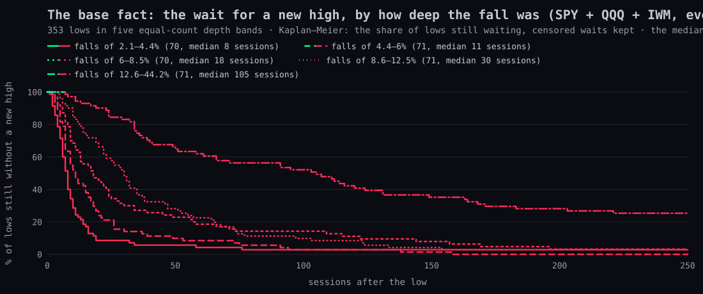
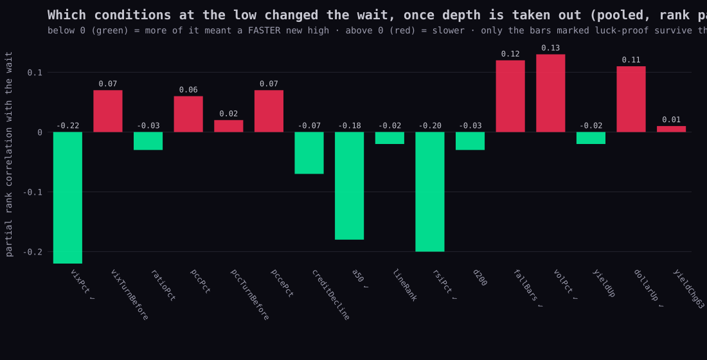
| condition at the low | n lows | link to the wait with depth held rank partial correlation · 90% range over lows | p · adjusted (16 tests) | status | top third of the condition median wait · median depth | bottom third median wait · median depth |
|---|---|---|---|---|---|---|
| VIX own percentile at the low outside information | 352 | -0.2 -0.3 to -0.1 | 0.00 · 0.00 | luck-proof | 35 sessions · -12.4% | 10 sessions · -4.4% |
| VIX peaked before or on the low (1) vs after / none (0) outside information | 320 | +0.1 0 to 0.2 | 0.19 · 0.40 | not shown | 24 sessions · -8.2% | 20 sessions · -7.8% |
| VIX ÷ VIX3M own percentile outside information | 306 | 0 -0.1 to 0.1 | 0.65 · 0.77 | not shown | 34.5 sessions · -10.6% | 13.5 sessions · -5.3% |
| Total put/call own percentile outside information | 304 | +0.1 0 to 0.1 | 0.27 · 0.44 | not shown | 26.5 sessions · -9.5% | 12 sessions · -5.9% |
| Put/call peaked before or on the low (1) vs after / none (0) outside information | 294 | +0 -0.1 to 0.1 | 0.68 · 0.77 | not shown | 23 sessions · -8.9% | 19 sessions · -7.9% |
| Equity put/call own percentile outside information | 304 | +0.1 0 to 0.2 | 0.22 · 0.40 | not shown | 29.5 sessions · -9.2% | 13.5 sessions · -6.7% |
| Credit (HYG÷LQD) decline into the low, % outside information | 309 | -0.1 -0.2 to 0 | 0.23 · 0.40 | not shown | 12 sessions · -5.6% | 39 sessions · -11.5% |
| Share of names above their 50-day at the low, % computed from the same prices | 350 | -0.2 -0.3 to -0.1 | 0.00 · 0.00 | luck-proof | 9 sessions · -4.6% | 38 sessions · -12.2% |
| Cloud line reached: 13-EMA=1, 21-EMA=2, 50-day=3, 200-day=4 computed from the same prices | 352 | 0 -0.1 to 0.1 | 0.70 · 0.77 | not shown | 14 sessions · -5.9% | 33 sessions · -9.8% |
| RSI own percentile at the low computed from the same prices | 332 | -0.2 -0.3 to -0.1 | 0.00 · 0.00 | luck-proof | 9 sessions · -4.6% | 41 sessions · -10.7% |
| Distance to the 200-day at the low, % computed from the same prices | 335 | 0 -0.1 to 0.1 | 0.60 · 0.77 | not shown | 10.5 sessions · -4.8% | 40.5 sessions · -13.2% |
| Sessions from the top to the low computed from the same prices | 352 | +0.1 0 to 0.2 | 0.03 · 0.09 | luck-proof | 36 sessions · -10.8% | 11 sessions · -5.2% |
| Volume vs its 50-day, own percentile computed from the same prices | 330 | +0.1 0 to 0.2 | 0.03 · 0.09 | luck-proof | 30.5 sessions · -9.3% | 11.5 sessions · -5.9% |
| 10-year yield above its 200-day (1) or below (0) outside information | 352 | 0 -0.1 to 0.1 | 0.72 · 0.77 | not shown | 16 sessions · -6.1% | 22.5 sessions · -8% |
| Dollar above its 200-day (1) or below (0) outside information | 352 | +0.1 0 to 0.2 | 0.02 · 0.09 | luck-proof | 22 sessions · -7.7% | 14 sessions · -6.7% |
| 10-year yield change over the 63 sessions into the low, bp outside information | 352 | +0 -0.1 to 0.1 | 0.77 · 0.77 | not shown | 18 sessions · -7.8% | 24.5 sessions · -9% |
How to read it. "Top third" and "bottom third" are the raw medians, and they are dominated by depth (the deeper lows have the higher VIX, the lower breadth, the lower RSI). The partial correlation is the honest column: with depth held, a higher VIX percentile at the low went with a shorter wait (-0.2), more names above their 50-day with a shorter wait (-0.2), a less oversold RSI at the low with a shorter wait (-0.2), and heavier volume with a longer one (+0.1). These are small links: a rank correlation of 0.2 moves the median wait by days, not months. The length of the fall (+0.1) and a dollar above its 200-day (+0.1) went with a longer wait. vix peaked before or on the low; vix ÷ vix3m own percentile; total put/call own percentile; put/call peaked before or on the low; equity put/call own percentile; credit; cloud line reached; distance to the 200-day at the low, %; 10-year yield above its 200-day; 10-year yield change over the 63 sessions into the low, bp did not change the wait once depth was out.
224 lows. Each pair holds depth roughly fixed (the median depth of each side is in the subtitle) and asks whether the condition changed the survival curve of the wait.
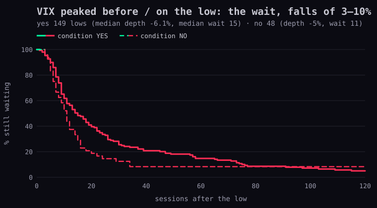
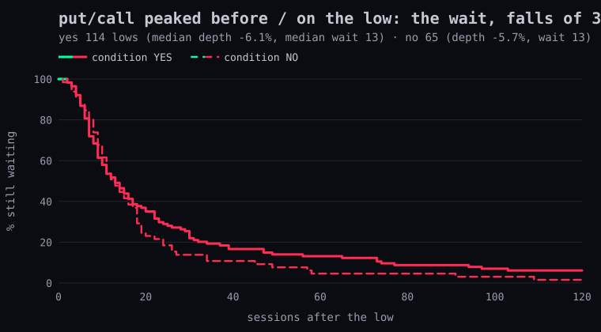
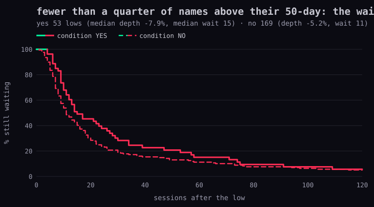
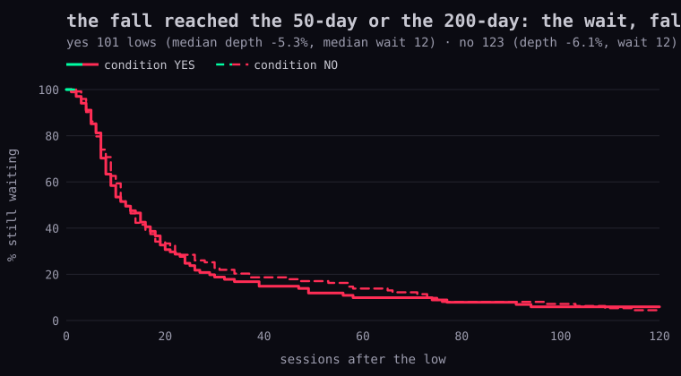
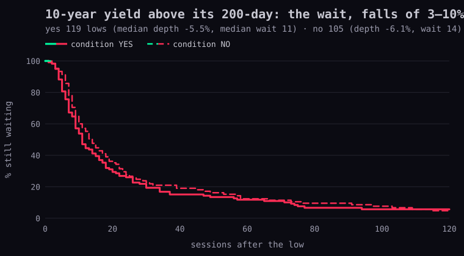
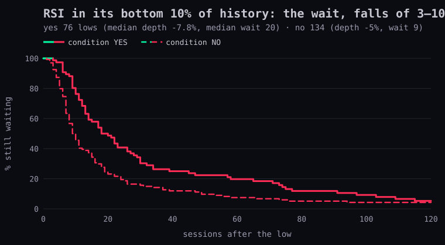
| condition at the low | n lows | link to the wait with depth held rank partial correlation · 90% range over lows | p · adjusted (16 tests) | status | top third of the condition median wait · median depth | bottom third median wait · median depth |
|---|---|---|---|---|---|---|
| VIX own percentile at the low outside information | 125 | -0.3 -0.4 to -0.2 | 0.00 · 0.00 | luck-proof | 34.5 sessions · -10.8% | 11 sessions · -3.7% |
| VIX peaked before or on the low (1) vs after / none (0) outside information | 113 | +0 -0.1 to 0.2 | 0.70 · 0.87 | not shown | 22.5 sessions · -6.7% | 22 sessions · -6.4% |
| VIX ÷ VIX3M own percentile outside information | 103 | -0.1 -0.2 to 0.1 | 0.29 · 0.48 | not shown | 30 sessions · -9.8% | 16 sessions · -4.5% |
| Total put/call own percentile outside information | 102 | +0.1 -0.1 to 0.3 | 0.34 · 0.49 | not shown | 25 sessions · -8.3% | 10.5 sessions · -5.1% |
| Put/call peaked before or on the low (1) vs after / none (0) outside information | 99 | 0 -0.2 to 0.2 | 0.79 · 0.88 | not shown | 22 sessions · -7.4% | 18 sessions · -6.6% |
| Equity put/call own percentile outside information | 102 | +0.1 0 to 0.3 | 0.25 · 0.48 | not shown | 28.5 sessions · -8.2% | 12.5 sessions · -5.6% |
| Credit (HYG÷LQD) decline into the low, % outside information | 104 | -0.1 -0.3 to 0 | 0.17 · 0.48 | not shown | 11 sessions · -5.6% | 47 sessions · -10.2% |
| Share of names above their 50-day at the low, % computed from the same prices | 124 | -0.2 -0.4 to 0 | 0.04 · 0.23 | leaning | 8 sessions · -3.6% | 43.5 sessions · -10.2% |
| Cloud line reached: 13-EMA=1, 21-EMA=2, 50-day=3, 200-day=4 computed from the same prices | 125 | +0 -0.1 to 0.2 | 0.88 · 0.88 | not shown | 14 sessions · -4.8% | 29 sessions · -7.6% |
| RSI own percentile at the low computed from the same prices | 118 | -0.2 -0.3 to 0 | 0.14 · 0.48 | not shown | 9.5 sessions · -4% | 38 sessions · -9.9% |
| Distance to the 200-day at the low, % computed from the same prices | 120 | -0.1 -0.3 to 0.1 | 0.30 · 0.48 | not shown | 10 sessions · -4.5% | 45.5 sessions · -11.1% |
| Sessions from the top to the low computed from the same prices | 125 | +0.2 0.1 to 0.3 | 0.02 · 0.16 | leaning | 43.5 sessions · -9.9% | 11 sessions · -4.4% |
| Volume vs its 50-day, own percentile computed from the same prices | 117 | +0.1 0 to 0.3 | 0.22 · 0.48 | not shown | 32 sessions · -8.9% | 12 sessions · -5.6% |
| 10-year yield above its 200-day (1) or below (0) outside information | 125 | -0.1 -0.3 to 0 | 0.20 · 0.48 | not shown | 11 sessions · -5.6% | 24 sessions · -7% |
| Dollar above its 200-day (1) or below (0) outside information | 125 | +0.1 -0.1 to 0.2 | 0.66 · 0.87 | not shown | 19 sessions · -6.1% | 15 sessions · -5.9% |
| 10-year yield change over the 63 sessions into the low, bp outside information | 125 | +0 -0.1 to 0.2 | 0.84 · 0.88 | not shown | 14 sessions · -5.7% | 25.5 sessions · -7.4% |
| condition at the low | n lows | link to the wait with depth held rank partial correlation · 90% range over lows | p · adjusted (16 tests) | status | top third of the condition median wait · median depth | bottom third median wait · median depth |
|---|---|---|---|---|---|---|
| VIX own percentile at the low outside information | 85 | -0.3 -0.5 to -0.1 | 0.01 · 0.21 | leaning | 35 sessions · -12.7% | 8 sessions · -4.3% |
| VIX peaked before or on the low (1) vs after / none (0) outside information | 79 | +0.1 -0.1 to 0.2 | 0.50 · 0.83 | not shown | 19.5 sessions · -8.5% | 18 sessions · -8.1% |
| VIX ÷ VIX3M own percentile outside information | 85 | -0.2 -0.4 to 0 | 0.08 · 0.41 | leaning | 26 sessions · -11.5% | 14 sessions · -4.6% |
| Total put/call own percentile outside information | 85 | -0.1 -0.3 to 0.1 | 0.24 · 0.70 | not shown | 26 sessions · -10.3% | 18 sessions · -6% |
| Put/call peaked before or on the low (1) vs after / none (0) outside information | 80 | +0 -0.2 to 0.2 | 0.75 · 0.94 | not shown | 23 sessions · -9.4% | 18.5 sessions · -7.9% |
| Equity put/call own percentile outside information | 85 | -0.1 -0.3 to 0.1 | 0.51 · 0.83 | not shown | 20 sessions · -9.5% | 17 sessions · -7.3% |
| Credit (HYG÷LQD) decline into the low, % outside information | 85 | +0.1 -0.1 to 0.3 | 0.40 · 0.83 | not shown | 18 sessions · -6.3% | 35 sessions · -10.7% |
| Share of names above their 50-day at the low, % computed from the same prices | 85 | 0 -0.2 to 0.2 | 0.97 · 0.97 | not shown | 9 sessions · -4.6% | 29 sessions · -12.2% |
| Cloud line reached: 13-EMA=1, 21-EMA=2, 50-day=3, 200-day=4 computed from the same prices | 85 | +0.1 -0.1 to 0.3 | 0.52 · 0.83 | not shown | 17 sessions · -4.9% | 26 sessions · -10.2% |
| RSI own percentile at the low computed from the same prices | 80 | -0.1 -0.3 to 0.2 | 0.68 · 0.94 | not shown | 8 sessions · -4.5% | 29 sessions · -11.3% |
| Distance to the 200-day at the low, % computed from the same prices | 80 | +0.2 -0.1 to 0.4 | 0.26 · 0.70 | not shown | 9 sessions · -4.6% | 29 sessions · -12.7% |
| Sessions from the top to the low computed from the same prices | 85 | +0 -0.1 to 0.2 | 0.85 · 0.94 | not shown | 34 sessions · -9.6% | 11 sessions · -4.7% |
| Volume vs its 50-day, own percentile computed from the same prices | 80 | +0.1 -0.1 to 0.3 | 0.26 · 0.70 | not shown | 26 sessions · -9.1% | 12 sessions · -6.3% |
| 10-year yield above its 200-day (1) or below (0) outside information | 85 | +0 -0.2 to 0.2 | 0.87 · 0.94 | not shown | 19 sessions · -7.8% | 16 sessions · -7.7% |
| Dollar above its 200-day (1) or below (0) outside information | 85 | +0.2 0 to 0.4 | 0.06 · 0.41 | leaning | 18.5 sessions · -7.9% | 15 sessions · -7.7% |
| 10-year yield change over the 63 sessions into the low, bp outside information | 85 | +0 -0.2 to 0.2 | 0.88 · 0.94 | not shown | 20 sessions · -8.4% | 19 sessions · -8.8% |
| condition at the low | n lows | link to the wait with depth held rank partial correlation · 90% range over lows | p · adjusted (16 tests) | status | top third of the condition median wait · median depth | bottom third median wait · median depth |
|---|---|---|---|---|---|---|
| VIX own percentile at the low outside information | 142 | -0.2 -0.3 to -0.1 | 0.01 · 0.05 | luck-proof | 35.5 sessions · -13.6% | 11 sessions · -5.2% |
| VIX peaked before or on the low (1) vs after / none (0) outside information | 128 | +0 -0.1 to 0.2 | 0.96 · 0.96 | not shown | 30 sessions · -9.4% | 22.5 sessions · -8.6% |
| VIX ÷ VIX3M own percentile outside information | 118 | +0.1 -0.1 to 0.3 | 0.28 · 0.56 | not shown | 38.5 sessions · -11.8% | 11 sessions · -6.1% |
| Total put/call own percentile outside information | 117 | +0.1 0 to 0.3 | 0.18 · 0.56 | not shown | 35.5 sessions · -10.8% | 11 sessions · -6.1% |
| Put/call peaked before or on the low (1) vs after / none (0) outside information | 115 | +0.1 -0.1 to 0.2 | 0.54 · 0.72 | not shown | 29 sessions · -9.4% | 22 sessions · -8.7% |
| Equity put/call own percentile outside information | 117 | +0.1 0 to 0.3 | 0.28 · 0.56 | not shown | 34 sessions · -11% | 12 sessions · -8.1% |
| Credit (HYG÷LQD) decline into the low, % outside information | 120 | -0.1 -0.2 to 0.1 | 0.45 · 0.70 | not shown | 9.5 sessions · -5.7% | 39 sessions · -12.4% |
| Share of names above their 50-day at the low, % computed from the same prices | 141 | -0.1 -0.3 to 0 | 0.14 · 0.56 | not shown | 9 sessions · -5.3% | 36.5 sessions · -13.2% |
| Cloud line reached: 13-EMA=1, 21-EMA=2, 50-day=3, 200-day=4 computed from the same prices | 142 | -0.1 -0.2 to 0.1 | 0.39 · 0.70 | not shown | 11.5 sessions · -6.2% | 37 sessions · -11.5% |
| RSI own percentile at the low computed from the same prices | 134 | -0.3 -0.4 to -0.1 | 0.01 · 0.05 | luck-proof | 9 sessions · -5% | 62.5 sessions · -11.8% |
| Distance to the 200-day at the low, % computed from the same prices | 135 | +0 -0.2 to 0.2 | 0.85 · 0.91 | not shown | 10 sessions · -5.3% | 38 sessions · -14.6% |
| Sessions from the top to the low computed from the same prices | 142 | +0 -0.1 to 0.1 | 0.74 · 0.85 | not shown | 34 sessions · -12.6% | 11 sessions · -5.9% |
| Volume vs its 50-day, own percentile computed from the same prices | 133 | +0.1 0 to 0.3 | 0.17 · 0.56 | not shown | 31 sessions · -10.6% | 15 sessions · -6.3% |
| 10-year yield above its 200-day (1) or below (0) outside information | 142 | +0.1 -0.1 to 0.2 | 0.48 · 0.70 | not shown | 16 sessions · -6.5% | 24 sessions · -9.2% |
| Dollar above its 200-day (1) or below (0) outside information | 142 | +0.1 0 to 0.3 | 0.24 · 0.56 | not shown | 25 sessions · -8.8% | 14 sessions · -7.8% |
| 10-year yield change over the 63 sessions into the low, bp outside information | 142 | +0 -0.1 to 0.2 | 0.72 · 0.85 | not shown | 18.5 sessions · -8.1% | 31.5 sessions · -10.7% |
What we measured. (a) For every SPY, QQQ and IWM swing low with put/call data (Cboe total PCC and equity-only PCCE, from Nov 2006): did the ratio's own swing high (same 10-bar pivot rule) come before or on the low? By four equal-count depth bands, and for not-so-deep (under 10%) against deep. (b) Time frame: peaks of the daily print and of its 3, 5, 10 and 21-session averages; a hit = a confirmed SPY swing low within 5 sessions before to 15 after the peak; against the base rate of any day having a low in that window. (c) Levels: the hit rate by the peak's own-history percentile, and for raw PCC levels 0.8 to 1.4.
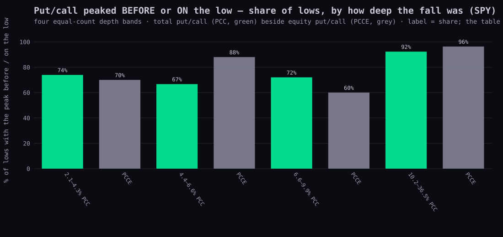
| lows by depth | total put/call (PCC) peaked before / on the low | equity put/call (PCCE) | level at the low (median) |
|---|---|---|---|
| SPY · 106 lows with put/call data | |||
| falls of 2.1–4.3% (26) | 17 of 23 (73.9%) 60.9 to 87 · lead 2, 90% within 7 | 14 of 20 (70%) 55 to 85 · lead 3.5, 90% within 8 | PCC 0.98 (65th pct) · PCCE 0.65 |
| falls of 4.4–6.6% (27) | 16 of 24 (66.7%) 50 to 83.3 · lead 1.5, 90% within 9 | 22 of 25 (88%) 76 to 96 · lead 1, 90% within 4 | PCC 1.02 (69th pct) · PCCE 0.70 |
| falls of 6.6–9.9% (26) | 18 of 25 (72%) 56 to 84 · lead 4.5, 90% within 10 | 15 of 25 (60%) 44 to 76 · lead 1, 90% within 12 | PCC 1.10 (83th pct) · PCCE 0.77 |
| falls of 10.2–36.5% (27) | 24 of 26 (92.3%) 84.6 to 100 · lead 4, 90% within 15 | 26 of 27 (96.3%) 88.9 to 100 · lead 3.5, 90% within 15 | PCC 1.16 (86th pct) · PCCE 0.75 |
| not-so-deep (under 10%) (79) | 51 of 72 (70.8%) 62.5 to 79.2 · lead 2, 90% within 8 | 51 of 70 (72.9%) 64.3 to 81.4 · lead 2, 90% within 9 | |
| deep (10% or more) (27) | 24 of 26 (92.3%) 84.6 to 100 · lead 4, 90% within 15 | 26 of 27 (96.3%) 88.9 to 100 · lead 3.5, 90% within 15 | |
| all (106) | 75 of 98 (76.5%) 69.4 to 83.7 · lead 3, 90% within 11 | 77 of 97 (79.4%) 72.2 to 85.6 · lead 2, 90% within 12 | |
| QQQ · 86 lows with put/call data | |||
| falls of 2.1–4.7% (21) | 10 of 18 (55.6%) 38.9 to 72.2 · lead 2.5, 90% within 7 | 13 of 18 (72.2%) 55.6 to 88.9 · lead 1, 90% within 4 | PCC 0.99 (68th pct) · PCCE 0.68 |
| falls of 4.7–7.7% (22) | 11 of 21 (52.4%) 33.3 to 71.4 · lead 1, 90% within 6 | 12 of 21 (57.1%) 38.1 to 76.2 · lead 1.5, 90% within 10 | PCC 1.02 (70th pct) · PCCE 0.69 |
| falls of 7.8–11.5% (21) | 13 of 19 (68.4%) 52.6 to 84.2 · lead 2, 90% within 9 | 15 of 19 (78.9%) 63.2 to 94.7 · lead 1, 90% within 8 | PCC 1.05 (81th pct) · PCCE 0.75 |
| falls of 12.1–30.6% (22) | 20 of 22 (90.9%) 81.8 to 100 · lead 3, 90% within 11 | 17 of 21 (81%) 66.7 to 95.2 · lead 2, 90% within 15 | PCC 1.18 (92th pct) · PCCE 0.77 |
| not-so-deep (under 10%) (58) | 28 of 52 (53.8%) 42.3 to 65.4 · lead 2, 90% within 8 | 35 of 52 (67.3%) 57.7 to 76.9 · lead 1, 90% within 5 | |
| deep (10% or more) (28) | 26 of 28 (92.9%) 85.7 to 100 · lead 3, 90% within 11 | 22 of 27 (81.5%) 66.7 to 92.6 · lead 2, 90% within 15 | |
| all (86) | 54 of 80 (67.5%) 58.8 to 76.3 · lead 2, 90% within 10 | 57 of 79 (72.2%) 64.6 to 79.7 · lead 1, 90% within 10 | |
| IWM · 123 lows with put/call data | |||
| falls of 2.1–5.3% (30) | 15 of 24 (62.5%) 45.8 to 79.2 · lead 2, 90% within 6 | 16 of 24 (66.7%) 50 to 83.3 · lead 2, 90% within 16 | PCC 0.95 (57th pct) · PCCE 0.65 |
| falls of 5.4–8.4% (31) | 20 of 31 (64.5%) 51.6 to 77.4 · lead 1, 90% within 5 | 21 of 26 (80.8%) 65.4 to 92.3 · lead 1, 90% within 9 | PCC 1.02 (71th pct) · PCCE 0.68 |
| falls of 8.6–12.6% (31) | 25 of 30 (83.3%) 73.3 to 93.3 · lead 2, 90% within 9 | 22 of 30 (73.3%) 60 to 86.7 · lead 1.5, 90% within 9 | PCC 1.07 (80th pct) · PCCE 0.77 |
| falls of 12.7–44.2% (31) | 27 of 30 (90%) 80 to 96.7 · lead 6, 90% within 15 | 26 of 31 (83.9%) 74.2 to 93.5 · lead 5, 90% within 14 | PCC 1.14 (86th pct) · PCCE 0.73 |
| not-so-deep (under 10%) (74) | 45 of 68 (66.2%) 57.4 to 76.5 · lead 2, 90% within 7 | 47 of 63 (74.6%) 66.7 to 82.5 · lead 2, 90% within 11 | |
| deep (10% or more) (49) | 42 of 47 (89.4%) 83 to 95.7 · lead 4, 90% within 14 | 38 of 48 (79.2%) 70.8 to 89.6 · lead 4.5, 90% within 14 | |
| all (123) | 87 of 115 (75.7%) 68.7 to 81.7 · lead 2, 90% within 12 | 85 of 111 (76.6%) 70.3 to 82 · lead 2, 90% within 14 | |
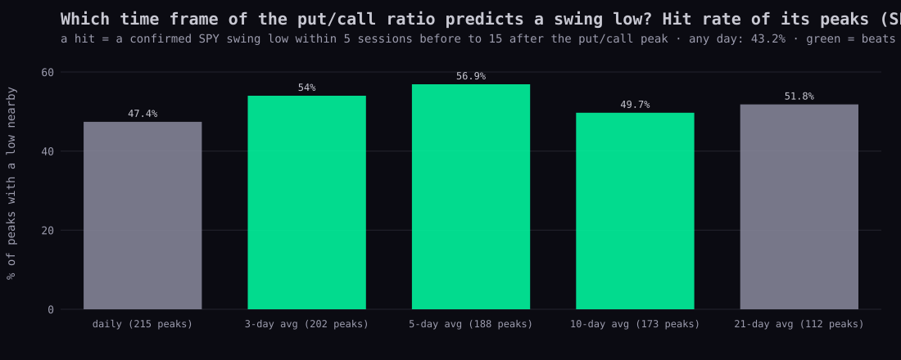
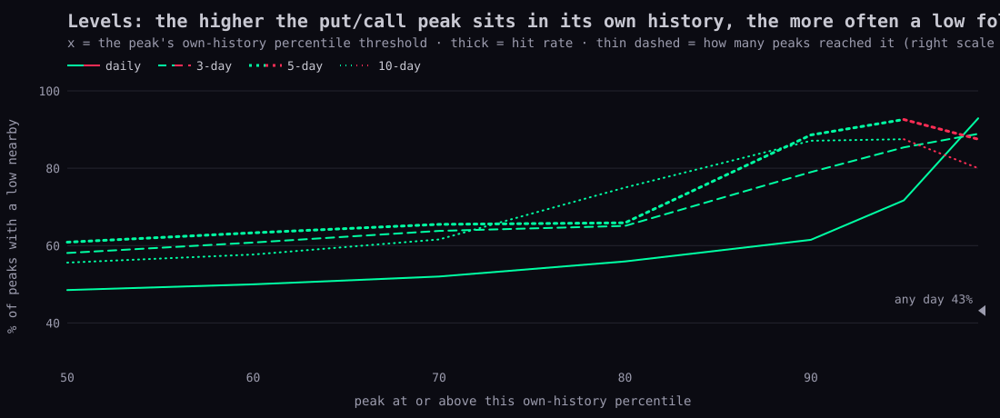
| time frame | peaks (per year) | hit rate · 90% range | p vs any day | lead (median, middle half) | SPY lows caught | at ≥80th pct | ≥90th | ≥95th | ≥99th |
|---|---|---|---|---|---|---|---|---|---|
| daily print | 215 (10.8) | 47.4% 42.8 to 52.1 | 0.13 | 2 (0 to 6) | 89.6% | 55.9% n 145 · PCC ≈ 1.21 | 61.5% n 96 · PCC ≈ 1.28 | 71.7% n 60 · PCC ≈ 1.36 | 92.9% n 14 · PCC ≈ 1.53 |
| 3-session average | 202 (10.2) | 54% 49 to 58.4 | 0.00 | 1 (-1 to 6) | 89.6% | 65.1% n 106 · PCC ≈ 1.15 | 79% n 62 · PCC ≈ 1.23 | 85.4% n 41 · PCC ≈ 1.27 | 88.9% n 9 · PCC ≈ 1.38 |
| 5-session average | 188 (9.4) | 56.9% 52.1 to 61.2 | 0.00 | 0 (-2 to 6) | 92.5% | 65.9% n 88 · PCC ≈ 1.12 | 88.6% n 44 · PCC ≈ 1.20 | 92.6% n 27 · PCC ≈ 1.24 | 87.5% n 8 · PCC ≈ 1.32 |
| 10-session average | 173 (8.7) | 49.7% 44.5 to 55.5 | 0.04 | -0.5 (-2.75 to 5) | 77.4% | 75% n 60 · PCC ≈ 1.11 | 87.1% n 31 · PCC ≈ 1.18 | 87.5% n 16 · PCC ≈ 1.22 | 80% n 5 · PCC ≈ 1.27 |
| 21-session average | 112 (5.6) | 51.8% 42.9 to 60.7 | 0.13 | 0 (-2.75 to 5) | 50.9% | 72.2% n 36 · PCC ≈ 1.09 | 66.7% n 21 · PCC ≈ 1.13 | 55.6% n 9 · PCC ≈ 1.15 | 100% n 2 · PCC ≈ 1.22 |
The put/call ratio's own percentiles (daily print, 2006-11-01 →): median 50th = 0.92 · 75th = 1.02 · 90th = 1.13 · 95th = 1.21 · 99th = 1.37. Today 2026-09-25: 0.75, the 8th percentile.
| raw PCC at or above | own percentile (median) | days | episodes | episodes with a low within 15 sessions | days with a low within 15 |
|---|---|---|---|---|---|
| 0.80 | 54th | 4206 | 446 | 37.9% | 35.7% |
| 0.90 | 67th | 2868 | 745 | 34.5% | 40.8% |
| 1.00 | 82th | 1467 | 650 | 40.8% | 48.3% |
| 1.10 | 91th | 683 | 388 | 51.5% | 56.7% |
| 1.20 | 96th | 283 | 191 | 66% | 64.7% |
| 1.30 | 98th | 111 | 86 | 70.9% | 73.9% |
| 1.40 | 99th | 42 | 36 | 72.2% | 76.2% |
About "21 of 28". The bottoms page counted the put/call peak strictly BEFORE the low (21 of the 28 deep SPY lows; 3 more peaked on the same session, 2 after, 1 had no turn of its own and 1 had no put/call data yet). This page counts before-or-on-the-low, among lows with data: 24 of 26. Same lows, one wider count.
How to read it. The put/call peak is not a deep-low-only signal: it came before or on about three quarters of the not-so-deep SPY lows too, with a median lead of 2 sessions. But it also peaks about 9 times a year on the 5-day average, and 43.1% of those peaks had no confirmed low near them. The level does the work: the higher the peak in its own history, the higher the hit rate, and a 5-day average above its 90th percentile (about 1.20) is where the hit rate leaves the base rate behind. The daily print is noisier; the 21-day average is too slow and misses half the lows.
What we measured. 24 instruments pooled (^GSPC, ^NDX, ^RUT, ^DJI, SPY, QQQ, IWM, DIA, MDY, XLK, XLE, XLF, XLV, XLI, XLP, XLY, XLU, XLB, EFA, EEM, GLD, USO, TLT, BTCUSD; the S&P index from 1928, the Nasdaq 100 from 1985, the Russell 2000 from 1987), every day from 1928 to 2026 with a 200-day average: 161162 days, 661 instrument-years. Each day is placed in one of eight states: side of the 200-day × slope of the 200-day over 20 sessions × 50-day above or below the 200-day. Then, for days below: sessions spent below so far, depth × duration as a grid, and whether the break was the first (after 63+ sessions above) or a repeat. Outcomes: the next 63 and 126 sessions' return and the deepest close in the next 126. Every range is a stationary block bootstrap with blocks at least as long as the horizon; the 96 cells are checked together for false discoveries.
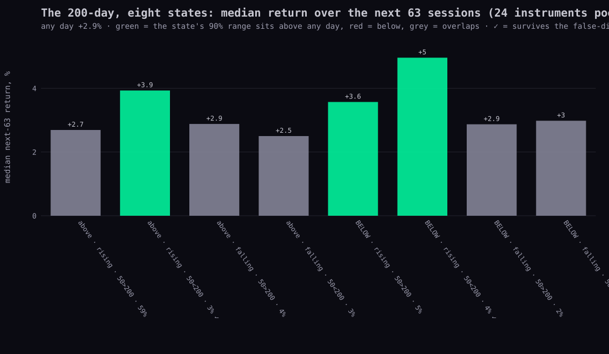
| state (share of days) | days · instrument-years | next 63: median | next 63: share up | next 126: median | worst fall next 126: median | worst fall: 10th pct |
|---|---|---|---|---|---|---|
| any day | 161162 · 661 | +2.9 | 64.9% | +5.2 | -5.1% | -20.8% |
| above · 200-day rising · 50 > 200 (59.3%) | 95226 · 622 | +2.7 2.5 to 2.9 | 65.9% 64.6 to 67.2 | +5.1 4.6 to 5.7 | -4.7 -5 to -4.5 ✓ | -17.5% |
| above · 200-day rising · 50 < 200 (3.4%) | 5432 · 296 | +3.9 3.3 to 4.7 ✓ | 71.6% 67.9 to 74.8 ✓ | +6.5 5 to 7.6 | -3.2 -3.7 to -2.8 ✓ | -19.2% |
| above · 200-day falling · 50 > 200 (4%) | 6563 · 270 | +2.9 1.8 to 3.8 | 63.2% 59 to 68.2 | +6 4.9 to 7.1 | -5.1 -5.8 to -4.5 | -16.6% |
| above · 200-day falling · 50 < 200 (3.2%) | 5115 · 317 | +2.5 1.9 to 3.2 | 62.9% 59.5 to 66.5 | +4.6 3.4 to 5.6 | -4.9 -5.5 to -4.2 | -19.3% |
| BELOW · 200-day rising · 50 > 200 (4.9%) | 7910 · 482 | +3.6 2.9 to 4.2 | 66.4% 63.5 to 69.4 | +6.5 5.3 to 8.1 | -6 -6.8 to -5.2 | -20.3% |
| BELOW · 200-day rising · 50 < 200 (3.9%) | 6304 · 318 | +5 4 to 5.7 ✓ | 70.1% 66.3 to 73.6 ✓ | +5.7 4.3 to 7.1 | -4.7 -5.9 to -3.9 | -20.1% |
| BELOW · 200-day falling · 50 > 200 (1.7%) | 2831 · 208 | +2.9 1.6 to 4.2 | 63.1% 57.2 to 70.4 | +5.5 3.6 to 7.1 | -5.7 -6.9 to -4.9 | -22.5% |
| BELOW · 200-day falling · 50 < 200 (19.6%) | 31781 · 394 | +3 2.3 to 3.6 | 60.1% 57.5 to 62.5 ✓ | +4.8 3.6 to 5.8 | -7.5 -8.5 to -6.6 ✓ | -32.6% |
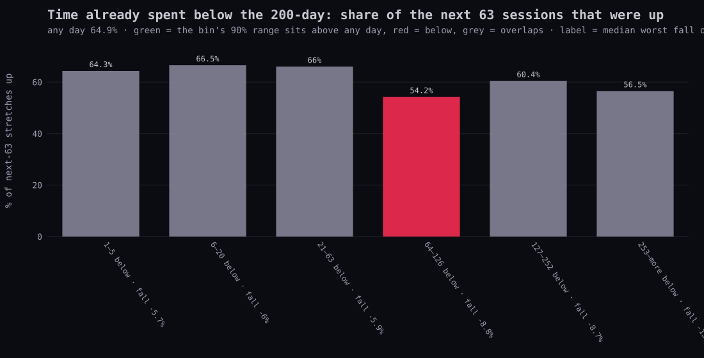
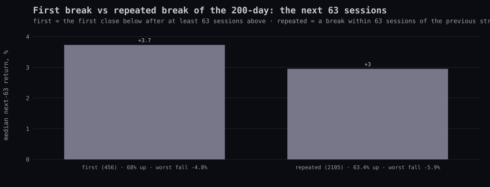
| sessions below so far | days | next 63: median | next 63: share up | next 126: median | worst fall next 126 |
|---|---|---|---|---|---|
| 1–5 | 8120 | +3.3 2.7 to 3.9 | 64.3% 61.6 to 67.4 | +5.4 4.2 to 6.3 | -5.7 -6.3 to -5 |
| 6–20 | 10042 | +3.7 3 to 4.4 | 66.5% 63.6 to 69.3 | +6 4.9 to 7.1 | -6 -6.3 to -5.4 ✓ |
| 21–63 | 13697 | +4.4 3.6 to 5.1 ✓ | 66% 63.1 to 68.7 | +5.4 4.3 to 6.6 | -5.9 -6.6 to -5.3 |
| 64–126 | 8882 | +1.1 0 to 2.1 ✓ | 54.2% 49.9 to 58 ✓ | +2.7 1.3 to 4.3 ✓ | -8.8 -10.3 to -7.4 ✓ |
| 127–252 | 6293 | +3.9 2 to 5.6 | 60.4% 54 to 66.2 | +8.4 5.1 to 12 | -8.7 -11.8 to -6.1 ✓ |
| 253–more | 1792 | +3.5 -2.6 to 8.6 | 56.5% 46 to 65.6 | +8.8 0.4 to 18.4 | -13.3 -23.1 to -8.1 ✓ |
Any day: a further 10%+ fall within 126 sessions on 28.7% of days. Green = at least 5 points better than that, red = at least 5 points worse.
| depth below × time below | 1–20 sessions below | 21–63 sessions below | 64–252 sessions below | 253–more sessions below |
|---|---|---|---|---|
| 0–2% below | next 126 median +4.8 a further 10%+ fall in 28.7% of days 8510 days · 552 instrument-years | next 126 median +7.1 a further 10%+ fall in 18.9% of days 1698 days · 260 instrument-years | next 126 median +3.1 a further 10%+ fall in 29.7% of days 1070 days · 196 instrument-years | next 126 median +8.9 a further 10%+ fall in 40.8% of days 71 days · 18 instrument-years |
| 2–5% below | next 126 median +5.7 a further 10%+ fall in 33.2% of days 5800 days · 473 instrument-years | next 126 median +3.5 a further 10%+ fall in 29.8% of days 3629 days · 294 instrument-years | next 126 median +3.7 a further 10%+ fall in 33.3% of days 2731 days · 214 instrument-years | next 126 median +2.1 a further 10%+ fall in 32.5% of days 154 days · 19 instrument-years |
| 5–10% below | next 126 median +7 a further 10%+ fall in 43.5% of days 2981 days · 335 instrument-years | next 126 median +4.7 a further 10%+ fall in 35.4% of days 4475 days · 281 instrument-years | next 126 median +4.7 a further 10%+ fall in 40.1% of days 4206 days · 199 instrument-years | next 126 median -0.3 a further 10%+ fall in 42.2% of days 230 days · 22 instrument-years |
| 10–20% below | next 126 median +11.7 a further 10%+ fall in 47.6% of days 771 days · 136 instrument-years | next 126 median +7.1 a further 10%+ fall in 36.1% of days 3015 days · 195 instrument-years | next 126 median +4.5 a further 10%+ fall in 44.8% of days 3947 days · 152 instrument-years | next 126 median +9 a further 10%+ fall in 53.3% of days 532 days · 21 instrument-years |
| 20–more% below | next 126 median +28.3 a further 10%+ fall in 37.3% of days 217 days · 33 instrument-years | next 126 median +9 a further 10%+ fall in 54% of days 932 days · 67 instrument-years | next 126 median +7.4 a further 10%+ fall in 71.7% of days 3284 days · 71 instrument-years | next 126 median +14.4 a further 10%+ fall in 66.5% of days 828 days · 16 instrument-years |
| break | breaks | next 63: median | next 63: share up | next 126: median | worst fall next 126: median | a further 10%+ fall |
|---|---|---|---|---|---|---|
| first | 456 | +3.7 2.4 to 4.6 | 68% 63.4 to 72.9 | +7.1 5.6 to 8.4 | -4.8 -5.5 to -4.5 | 30.6% any day 28.7% |
| repeated | 2105 | +3 2.2 to 3.5 | 63.4% 59.6 to 67.7 | +4.8 3.2 to 5.9 | -5.9 -7 to -5 | 32.7% any day 28.7% |
How to read it. Being below the 200-day is not one state. Below a still-rising 200-day the next 63 sessions were better than any day (the fall was recent and the trend intact); below a falling 200-day with the 50 also under it, which is one day in five across this history, the share of up 63-session stretches drops to 60.1% and the tail opens up (one in ten of those days saw a further -32.6% fall inside 126 sessions). Time below is a hump: the first few weeks below are ordinary, 64–126 sessions below is the weak zone, and after a year below the outcomes improve again but the samples are small (a few bear markets). The depth × duration grid says the same in one glance: deep AND long is where a further 10% fall becomes more likely than not. A first break was milder than a repeat. Today 2026-09-25: SPY above, 200-day rising, 50 above 200, 7.4% above.
What we measured. The leaders are each calendar year's 20 largest US companies by market cap on that year's first trading day (FMP caps, 2007→; 41 names with price history), so a name counts only in the years it was a leader. (a) Lows: for every SPY swing low that ended a fall of 3% or more since 2007 (97 lows), each leader's own swing low nearest the SPY low (±15 sessions): before, same, after; its own fall over the same stretch against SPY's; and its return against SPY over the 63 sessions after the SPY low. (b) Tops: at the SPY swing high that began each fall, the leader's own high offset and how much of its prior 63-session run it gave back. (c) The fear gauge: the average of four own-history percentiles (VIX, put/call, SPY RSI flipped, share of names above their 50-day flipped), 100 = maximum fear, read daily from 2007-10-31; by decile of the gauge, the leaders basket's next-63 return, SPY's, the difference, and each one's worst fall in those 63 sessions. Ranges: lows resampled as episodes; gauge deciles by 63-session blocks; 50 decile cells checked together.
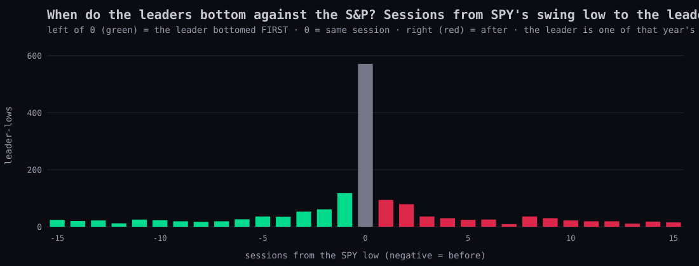
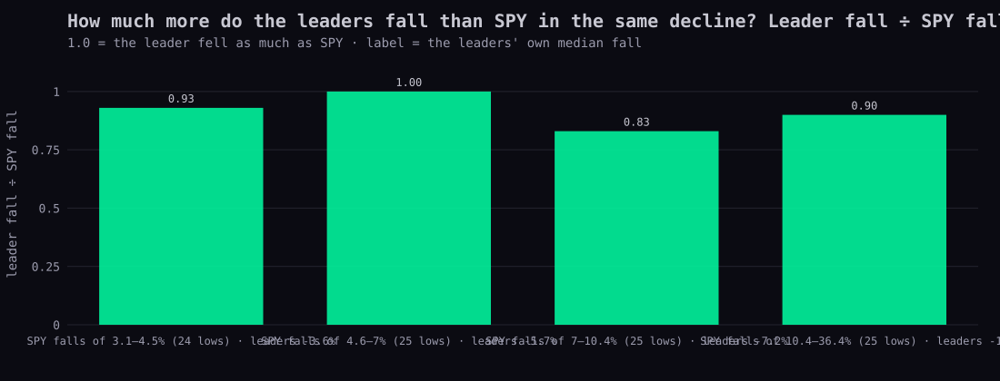
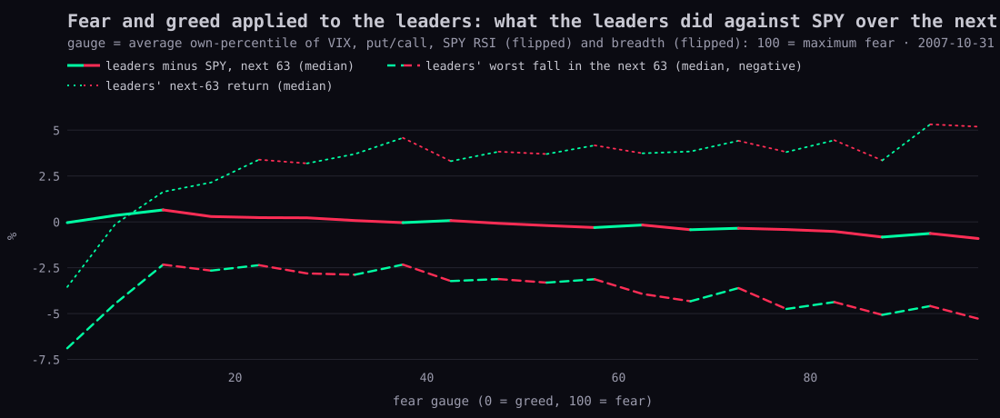
| SPY falls of | leader-lows (SPY lows) | leader bottomed before | after | leader's own fall (median) | leader fall ÷ SPY fall | leader minus SPY, next 63 from the SPY low |
|---|---|---|---|---|---|---|
| 3.1–4.5% | 473 (24) | 35.3% | 39.9% | -3.6% | 0.93 | -0.8 |
| 4.6–7% | 474 (25) | 36.3% | 30.7% | -5.7% | 1.00 | -1.6 |
| 7–10.4% | 474 (25) | 35.2% | 27.9% | -7.2% | 0.83 | -1.9 |
| 10.4–36.4% | 474 (25) | 25.9% | 24.2% | -14.2% | 0.90 | -1.7 |
| all | 1895 (97) | 32.9% same 36.9% · no own low 18.3% | 30.2% | 0.91 0.9 to 0.9 · middle half 0.51–1.34 | -1.5 -1.8 to -1.1 · leaders ahead in 43.7% |
97 SPY tops, 1895 leader-tops. The leader's own high came before the SPY high 43.5% of the time, the same session 16.4%, after 40.1%. Over the SPY fall that followed, the leaders gave back a median 70% of their prior 63-session run (60.3 to 79.9; middle half 29–150%; one in four gave back more than the whole run). Their own fall from top to low: median 7.1%, one in ten more than 23.1%, against SPY's median fall of 7%.
Today 2026-09-25: gauge 44.9 (VIX 35th, put/call 8th, RSI-fear 51th, breadth-fear 85th): fear in breadth, none in options. 6 of 50 cells survive the false-discovery check.
| fear gauge | days · months | leaders minus SPY, next 63 (median) | leaders next 63 | SPY next 63 | leaders' worst fall next 63 | SPY's worst fall next 63 |
|---|---|---|---|---|---|---|
| any day | 4755 | -0.1 | +3.6 | +3.8 | -3.2% | -3.2% |
| 0–10 (greed) | 38 · 18 | +0.3 0 to 0.5 | -0.2 -3.3 to 1.3 | +1.4 -3.1 to 2.1 | -4.8 -6.8 to -2.1 | -4.4 -6.1 to -2.6 |
| 10–20 | 284 · 73 | +0.3 -0.5 to 1.2 | +2 1.3 to 2.9 | +2.5 1.5 to 2.9 | -2.5 -4 to -1.6 | -2.8 -4.2 to -1.9 |
| 20–30 | 690 · 134 | +0.2 -0.5 to 1 | +3.3 2.3 to 4.5 | +3.5 2.8 to 4.3 | -2.6 -3.5 to -1.9 | -2.7 -3.3 to -2.1 |
| 30–40 | 826 · 173 | +0 -0.5 to 0.7 | +4 3.1 to 5.1 | +3.9 3.3 to 4.6 | -2.6 -3.2 to -1.8 | -2.5 -3.1 to -1.9 |
| 40–50 | 690 · 181 | +0 -0.7 to 0.7 | +3.6 2.3 to 5.1 | +3.8 2.6 to 4.5 | -3.2 -3.9 to -2.4 | -3 -3.8 to -2.5 |
| 50–60 | 592 · 174 | -0.2 -1 to 0.7 | +4.1 2.3 to 6.3 | +4.4 2.9 to 5.3 | -3.2 -4.3 to -2.6 | -3 -3.7 to -2.2 |
| 60–70 | 542 · 161 | -0.3 -0.8 to 0.4 | +3.8 2.2 to 5.8 | +4.6 3 to 5.6 | -4.1 -5.9 to -2.9 | -3.7 -5.7 to -2.6 |
| 70–80 | 519 · 146 | -0.4 -0.7 to 0 | +4 1.9 to 6 | +4.5 2.4 to 6 | -4.1 -6.5 to -2.6 | -3.9 -6.5 to -2.7 |
| 80–90 | 370 · 93 | -0.6 -1.1 to -0.3 | +4 2 to 5.9 | +4.7 2.7 to 6.4 | -4.5 -6 to -3.3 | -4.9 -6.5 to -3.6 |
| 90–100 (fear) | 204 · 49 | -0.8 -1.1 to -0.1 | +5.3 1.8 to 8.1 | +5.2 2.7 to 7.7 | -4.9 -6.8 to -3.2 | -5.2 -7.4 to -3.4 |
How to read it. There is no timing edge in the leaders around the index's lows: they bottom with it, not before it, and their fall is the index's fall (ratio near 1 at every depth). After the low the leaders trailed SPY slightly for a quarter (1.5 points at 63 sessions), a small but luck-proof effect, which fits the leaders study's finding that the first bounce is broad. On the gauge the leaders' edge over SPY is within a point either way across the deciles, and where it clears the range it runs against the story (they did best when the market was greedy, not fearful); the fear end is where SPY itself did best, which is the ordinary rebound. What the gauge does say clearly is about risk: the leaders' worst fall in the next 63 sessions is deepest in the fear decile (-4.9%) and shallowest in the middle, which is the volatility of a falling market, not a leader effect.
What we measured. The regime study's rule: the 10-year yield above its own 200-day average and the dollar index (DXY) above its own 200-day average, read on each day; and as a check, the 63-session change of each. "Three months" = the next 63 sessions. Two pullback measures on every day: the deepest close below that day's close within the next 63 sessions (a fixed window; every day counts), and the depth of the swing declines that began in each regime (pivot-based, one number per decline). Three instruments: the S&P 500 index from 1971 (when DXY starts), SPY from 2003, and the leaders basket (each year's top 20 at the time, equal weight) from 2007. Ranges by stationary block bootstrap with 63-session blocks; 48 regime cells checked together for false discoveries.
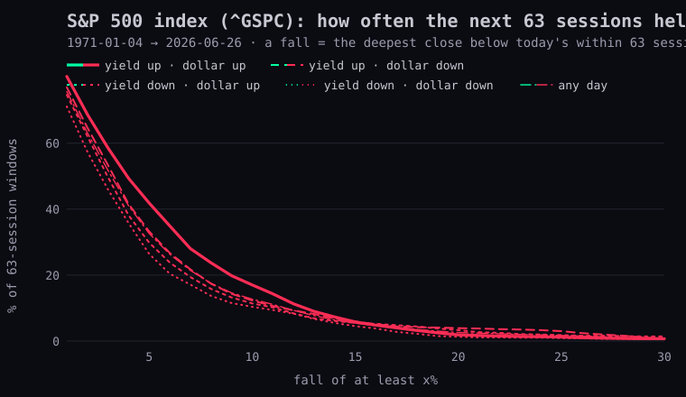
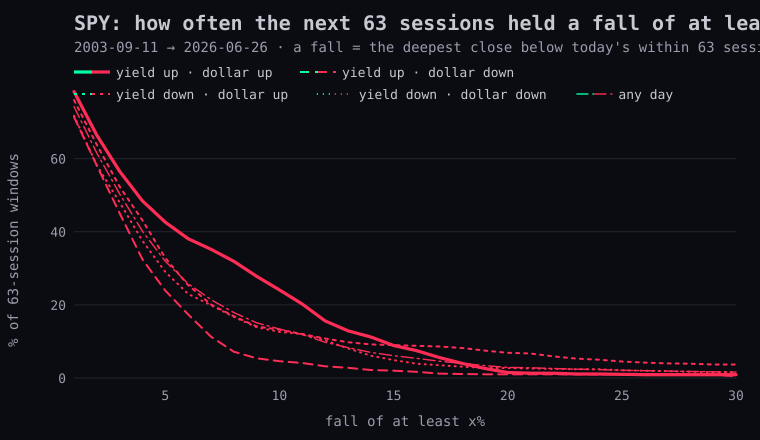
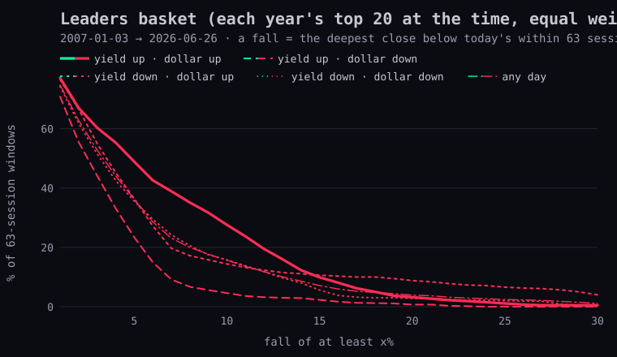
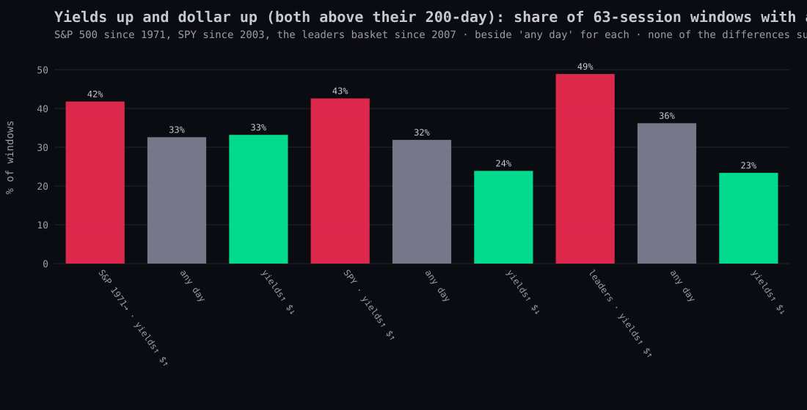
| S&P 500 index (^GSPC) · 1971-01-04 → 2026-06-26 | days · quarters · share | fall: 10th pct (mild) | 25th | median fall next 63 · 90% range | 75th (bad) | windows with a 5%+ fall | 10%+ fall | next-63 return (median) | swing declines that began here: n · median depth · 10%+ |
|---|---|---|---|---|---|---|---|---|---|
| any day | 13787 · 219 · 100% | -11.6% | -6.2% | -3.1% -3.5 to -2.8 | -1% | 32.6% 28.5 to 36.6 | 12.7% | +2.8 | 330 · -5.8% · 20.3% |
| yield up · dollar up | 3254 · 104 · 23.6% | -12.4% | -7.6% | -3.9% -4.8 to -3.1 | -1.5% | 41.8% 34.7 to 49.2 | 17% | +1.5 | 77 · -7% · 32.5% |
| yield up · dollar down | 3480 · 112 · 25.2% | -11.5% | -6.3% | -3.3% -3.8 to -2.7 | -1.2% | 33.2% 26.9 to 40.9 | 12.3% | +2.8 | 92 · -6.5% · 16.3% |
| yield down · dollar up | 3464 · 103 · 25.1% | -11.1% | -5.8% | -3% -3.5 to -2.6 | -1% | 29.8% 21.9 to 37.4 | 11.4% | +2.9 | 85 · -5.4% · 15.3% |
| yield down · dollar down | 3589 · 119 · 26% | -10.6% | -5.2% | -2.6% -3.2 to -2.1 | -0.8% | 26.4% 20.4 to 33.2 | 10.4% | +4.2 | 76 · -5.6% · 18.4% |
| SPY · 2003-09-11 → 2026-06-26 | days · quarters · share | fall: 10th pct (mild) | 25th | median fall next 63 · 90% range | 75th (bad) | windows with a 5%+ fall | 10%+ fall | next-63 return (median) | swing declines that began here: n · median depth · 10%+ |
|---|---|---|---|---|---|---|---|---|---|
| any day | 5734 · 92 · 100% | -11.8% | -6.2% | -3% -3.6 to -2.5 | -0.9% | 31.9% 25.7 to 38.2 | 13.4% | +3.5 | 125 · -6.1% · 22.4% |
| yield up · dollar up | 1408 · 43 · 24.6% | -14.5% | -9.8% | -3.8% -6.3 to -2.5 | -1.2% | 42.6% 29.1 to 54.4 | 24.1% | +2 | 32 · -5.7% · 37.5% |
| yield up · dollar down | 1526 · 54 · 26.6% | -7.3% | -4.8% | -2.6% -3.5 to -2 | -0.8% | 23.9% 17.2 to 31.1 | 4.6% | +4.3 | 41 · -5.8% · 9.8% |
| yield down · dollar up | 1347 · 43 · 23.5% | -12.9% | -6.1% | -3.2% -4.3 to -2.5 | -1.1% | 32.8% 24.2 to 42 | 13.2% | +3.8 | 27 · -6.1% · 22.2% |
| yield down · dollar down | 1453 · 54 · 25.3% | -12.1% | -5.6% | -2.8% -3.8 to -2 | -0.8% | 29% 18.7 to 40.3 | 12.6% | +3.7 | 25 · -6.6% · 24% |
| Leaders basket (each year's top 20 at the time, equal weight) · 2007-01-03 → 2026-06-26 | days · quarters · share | fall: 10th pct (mild) | 25th | median fall next 63 · 90% range | 75th (bad) | windows with a 5%+ fall | 10%+ fall | next-63 return (median) | swing declines that began here: n · median depth · 10%+ |
|---|---|---|---|---|---|---|---|---|---|
| any day | 4901 · 78 · 100% | -13.1% | -6.6% | -3.3% -4.1 to -2.6 | -1% | 36.2% 29.3 to 42.4 | 15.7% | +3.5 | 119 · -5.2% · 17.6% |
| yield up · dollar up | 1238 · 37 · 25.3% | -14.9% | -10.7% | -4.9% -7.3 to -2.7 | -1.2% | 48.9% 36.3 to 59.5 | 27.6% | +1.2 | 37 · -5.1% · 29.7% |
| yield up · dollar down | 1208 · 43 · 24.6% | -6.8% | -4.8% | -2.5% -3.2 to -1.7 | -0.8% | 23.4% 16.1 to 30.2 | 4.6% | +4.8 | 27 · -4.7% · 7.4% |
| yield down · dollar up | 1256 · 40 · 25.6% | -17% | -6.3% | -3.6% -4.6 to -2.6 | -1.1% | 36.4% 28.2 to 47.5 | 14.4% | +3.7 | 26 · -6.5% · 15.4% |
| yield down · dollar down | 1199 · 46 · 24.5% | -12.8% | -6.8% | -3.1% -4.8 to -2.1 | -1% | 35.6% 23.5 to 49.1 | 15.8% | +3.6 | 29 · -5.4% · 13.8% |
| S&P 500 index (^GSPC) · 1971-01-04 → 2026-06-26 | days · quarters · share | fall: 10th pct (mild) | 25th | median fall next 63 · 90% range | 75th (bad) | windows with a 5%+ fall | 10%+ fall | next-63 return (median) | swing declines that began here: n · median depth · 10%+ |
|---|---|---|---|---|---|---|---|---|---|
| any day | 13924 · 221 · 100% | -11.5% | -6.3% | -3.2% -3.5 to -2.8 | -1.1% | 33.1% 29.5 to 36.9 | 12.6% | +2.8 | 334 · -5.8% · 20.4% |
| yield up · dollar up | 3895 · 155 · 28% | -11.7% | -6.6% | -3.4% -4.1 to -2.9 | -1.3% | 35.4% 29.1 to 42 | 13.5% | +2.4 | 90 · -5.7% · 23.3% |
| yield up · dollar down | 3161 · 140 · 22.7% | -10.9% | -6.7% | -3.7% -4.3 to -3.2 | -1.5% | 37.8% 32.5 to 43.9 | 11.8% | +2 | 83 · -6.4% · 16.9% |
| yield down · dollar up | 3022 · 142 · 21.7% | -12.2% | -6.1% | -3% -3.7 to -2.6 | -1% | 31.2% 24.9 to 38.7 | 13.5% | +2.9 | 80 · -5.4% · 16.3% |
| yield down · dollar down | 3846 · 146 · 27.6% | -11.1% | -5.6% | -2.6% -3.3 to -2 | -0.7% | 28.4% 22.3 to 35.2 | 11.7% | +3.9 | 81 · -6.2% · 24.7% |
| SPY · 2003-09-11 → 2026-06-26 | days · quarters · share | fall: 10th pct (mild) | 25th | median fall next 63 · 90% range | 75th (bad) | windows with a 5%+ fall | 10%+ fall | next-63 return (median) | swing declines that began here: n · median depth · 10%+ |
|---|---|---|---|---|---|---|---|---|---|
| any day | 5734 · 92 · 100% | -11.8% | -6.2% | -3% -3.6 to -2.5 | -0.9% | 31.9% 25.7 to 38.2 | 13.4% | +3.5 | 125 · -6.1% · 22.4% |
| yield up · dollar up | 1553 · 67 · 27.1% | -13.2% | -8% | -3.4% -4.6 to -2.5 | -1.1% | 37.8% 27 to 48.5 | 19% | +2.8 | 32 · -5.7% · 25% |
| yield up · dollar down | 1299 · 68 · 22.7% | -9.2% | -6.2% | -3.4% -4.3 to -2.8 | -1.3% | 34.6% 26.9 to 43 | 8.9% | +3.4 | 37 · -5.8% · 16.2% |
| yield down · dollar up | 1350 · 62 · 23.5% | -16.1% | -6.2% | -3.2% -4.3 to -2.5 | -1.3% | 32.4% 23.4 to 44.7 | 15.6% | +3.2 | 22 · -7% · 27.3% |
| yield down · dollar down | 1532 · 62 · 26.7% | -9.7% | -4.7% | -2.1% -3 to -1.5 | -0.5% | 23% 14.5 to 31 | 9.8% | +4.1 | 34 · -6.1% · 23.5% |
| Leaders basket (each year's top 20 at the time, equal weight) · 2007-01-03 → 2026-06-26 | days · quarters · share | fall: 10th pct (mild) | 25th | median fall next 63 · 90% range | 75th (bad) | windows with a 5%+ fall | 10%+ fall | next-63 return (median) | swing declines that began here: n · median depth · 10%+ |
|---|---|---|---|---|---|---|---|---|---|
| any day | 4901 · 78 · 100% | -13.1% | -6.6% | -3.3% -4.1 to -2.6 | -1% | 36.2% 29.3 to 42.4 | 15.7% | +3.5 | 119 · -5.2% · 17.6% |
| yield up · dollar up | 1355 · 58 · 27.6% | -13.7% | -9% | -4% -5.6 to -2.4 | -1% | 42.3% 32.3 to 51.9 | 21.3% | +3 | 35 · -5.2% · 28.6% |
| yield up · dollar down | 1038 · 54 · 21.2% | -11% | -6.3% | -3.9% -4.8 to -3 | -1.2% | 38.6% 30.6 to 46.1 | 11.2% | +3.7 | 26 · -5.8% · 7.7% |
| yield down · dollar up | 1194 · 52 · 24.4% | -19.8% | -6.5% | -3.6% -4.9 to -2.6 | -1.6% | 36.6% 26.7 to 48.7 | 17.8% | +2.6 | 29 · -5.1% · 24.1% |
| yield down · dollar down | 1314 · 52 · 26.8% | -10.6% | -5.4% | -2.1% -3.3 to -1.5 | -0.6% | 27.5% 17.3 to 39.7 | 11.5% | +4.6 | 29 · -5% · 6.9% |
How to read it. The regime is real as a description: in every instrument and on both definitions, yields up with the dollar up had the deepest median fall inside the next quarter and the highest share of 5%+ and 10%+ falls, and the leaders felt it more than the index (27.6% of leader windows held a 10%+ fall against 15.7% any day). As a fact it is not yet luck-proof: the regime lasts for months at a time, so 104 quarters are worth far fewer independent observations, and the 90% ranges of the four quadrants overlap. Read it as a reason to be careful, not as a prediction.
What we measured. The regime study's 17 pairs (equal-weight fund ÷ cap-weight fund; sector pairs use the Invesco equal-weight sector funds under their old tickers before 2023). The seven are the pairs whose ratio today sits in the bottom 5% of its own history. For the S&P pair, RSP ÷ SPY from the bars: its own-history percentile (prior days only), every entry into the bottom 5% after 63 sessions away, and what SPY, RSP minus SPY and the leaders basket did over the next 63, 126 and 252 sessions; plus the whole curve (SPY's next 63 at every 5-point band of the ratio's percentile). "Where" is answered two ways: the one-year change of every pair, and one year of SPY against RSP, the leaders basket and the middle served stock.
| pair (equal ÷ cap) | since | today's percentile (all · 3y) | one-year change | past extremes (lows) | after past lows: cap side next 63 · next 252 (median) | equal minus cap next 63 · next 252 |
|---|---|---|---|---|---|---|
| S&P 500 · RSP ÷ SPY | 2003-09-11 | 0.1th · 0.4th | -3.9% | 7 | +3.3% · +15.6% | +0.7 · -0.2 |
| Russell 1000 · EQAL ÷ IWB | 2014-12-29 | 0.1th · 0.3th | -3.1% | 4 | +6.3% · +26.7% | +3.4 · -2.7 |
| Communication services · RSPC ÷ XLC | 2018-11-07 | 0.1th · 0.1th | -8.4% | 2 | +9.9% · +24.9% | -3.3 · -7.8 |
| Nasdaq-100 (Direxion) · QQQE ÷ QQQ | 2012-03-21 | 0.5th · 2.3th | -3.8% | 6 | -0.2% · +13.2% | +1.5 · -4.4 |
| Nasdaq-100 (First Trust) · QQEW ÷ QQQ | 2006-04-25 | 1.8th · 12.6th | -6.3% | 9 | +0.1% · +18.9% | +2.5 · -4.2 |
| Consumer discretionary · RSPD ÷ XLY | 2006-11-07 | 4.2th · 9.3th | -2% | 7 | -5.5% · +5.9% | +2.3 · +9.4 |
| Consumer staples · RSPS ÷ XLP | 2006-11-07 | 4.7th · 2.8th | -4.4% | 5 | +3.1% · +9% | +0.1 · -7.1 |
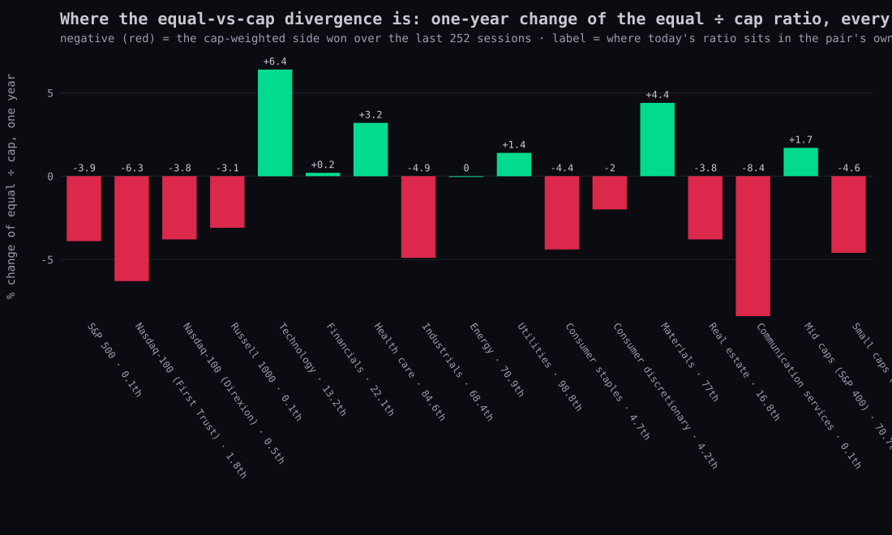
| the last 252 sessions to 2026-09-25 | SPY (cap weight) | RSP (equal weight) | leaders basket (this year's top 20) | the middle served stock (317) | served stocks up |
|---|---|---|---|---|---|
| one-year return | +16.7% | +12.1% | +9.4% | +7% | 60.3% |
The three broad pairs and the two Nasdaq pairs are the same fact seen five times: the largest companies carried the last year. Among the sector pairs, the extremes are communication services (where the two largest names are the sector), consumer discretionary (Amazon and Tesla) and consumer staples (Walmart and Costco); technology's equal-weight fund is only at its 13th percentile, because the chip names beneath the giants also ran.
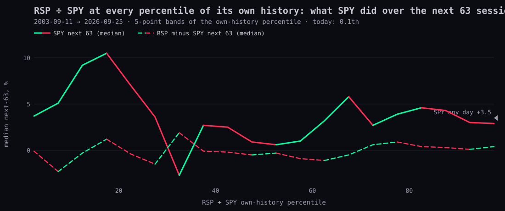
| entry (RSP ÷ SPY ≤ 5th pct) | pct | SPY next 63 | 126 | 252 | equal minus cap 63 | 126 | 252 | leaders next 63 | 126 | 252 |
|---|---|---|---|---|---|---|---|---|---|---|
| 2008-11-12 | 5 | -3.6 | +3.4 | +27 | +2.7 | +10.1 | +19 | -13.5 | +0.3 | +21.1 |
| 2009-03-06 | 4.7 | +37.2 | +46.1 | +65.8 | +18.8 | +22 | +34.4 | +47.9 | +58.5 | +75.6 |
| 2024-06-10 | 5 | +2.5 | +12.9 | +12.7 | +1.9 | -1.1 | -3.9 | +6.6 | +20 | +23.2 |
| 2024-10-29 | 4.5 | +3.4 | -2.6 | +17.2 | -1.9 | -1.1 | -12 | +9.3 | +2.5 | +24.2 |
| 2025-02-03 | 2.1 | -5.7 | +5.1 | +14.8 | +0.7 | -3.4 | -3.7 | -6.7 | +2.5 | +11.8 |
| 2025-05-06 | 3.7 | +13.2 | +20.8 | +30.9 | -5.7 | -11.3 | -11.2 | +12.1 | +22.7 | +26.5 |
| 2025-08-07 | 0 | +7.2 | +9.2 | +22.3 | -4.7 | +1.5 | -1.8 | +10.8 | +9.4 | +20.6 |
| 2025-11-06 | 0.1 | +3.5 | +10.3 | — | +5.3 | -0.6 | — | +0.2 | +3.9 | — |
| 2026-02-10 | 2.4 | +6.7 | +11.6 | — | -6.4 | -2.7 | — | +4.2 | +9.1 | — |
| 2026-05-13 | 0 | +4.8 | — | — | +5 | — | — | +4.7 | — | — |
| 2026-08-14 | 2.7 | — | — | — | — | — | — | — | — | — |
| median (n) | +4.2 n 10 · 80% up | +10.3 n 9 · 88.9% up | +22.3 n 7 · 100% up | +1.3 n 10 · 60% up | -1.1 n 9 · 33.3% up | -3.7 n 7 · 28.6% up | +5.7 n 10 · 80% up | +9.1 n 9 · 100% up | +23.2 n 7 · 100% up | |
| SPY any day | +3.5 | +6 | +12.1 | |||||||
How to read it. 10 entries since 2003, 7 with a full year after them: a list, not a rate, and eight of them come from the last two years, so they share one market. In that list SPY's next year was +22.3% (any day +12.1%), the leaders basket +23.2%, and equal weight did not catch up (-3.7 points, up in 28.6% of cases). The 2008–2009 entries are the exception, when equal weight then beat cap weight by 19 and 34 points in a year. The curve over every percentile shows no band where SPY's next quarter differs from any day by more than its noise. The regime study's per-pair "lows" tell the same story for the sector pairs: after past extremes the cap-weight side went on rising, and the ratio's recovery, when it came, took a year. An extreme of this ratio is a description of leadership, not a turn signal.
The proposal. The comps method works because every peer is read on the same scale (its own percentile against the field) and the chart labels the marks, not a side column. The market state should be built the same way: six blocks, each one number on its own-history percentile scale, each with a state word, laid out as one row, never summed into a score. A score hides which block moved and invites a buy signal; a row of percentiles shows the shape of the day (today: breadth fear with no options fear, above a rising 200-day, yields up with the dollar up). The blocks and what today's studies say about each:
| block | the measure(s) | what today's studies say | a place on the statistics tab? | where it is measured |
|---|---|---|---|---|
| TIDE | share of names above their 50-day (own percentile) · RSP ÷ SPY (own percentile) | breadth at the low is luck-proof for the wait (Q2); RSP ÷ SPY extremes are a list (Q7) | yes: breadth · RSP÷SPY as a reading only | bottoms · statistician-2 |
| FEAR | VIX own percentile · put/call 5-session average, own percentile · the fear gauge (four percentiles averaged) | VIX pct at the low: luck-proof (Q2) · put/call 5-day peaks ≥90th: 89% hit vs 43% any day (Q3) · gauge deciles: leaning at the ends (Q5) | yes: VIX pct, put/call 5-day, the gauge | bottoms · statistician-2 |
| TREND | side of the 200-day · its slope · 50/200 order · sessions below · depth × duration (Q4) | worst state (below, falling, 50<200) is 60.1% up vs 64.9% any day; 35 of 96 cells survive FDR | yes: one line with the state word and the sessions below | bottoms · statistician-2 |
| RATES & DOLLAR | 10-year and DXY vs their 200-day, as a regime label | yields↑ $↑ is the weakest quadrant everywhere but not luck-proof (Q6) | reading only, no card | market regime · statistician-2 |
| CREDIT | HYG ÷ LQD from its high | credit decline at the low did not change the wait (Q2) | reading only | market regime |
| LEADERS | leader fall ÷ SPY fall in the current decline · leader vs SPY since the last SPY low · give-back of the run | leaders fall about as much as SPY (ratio 0.91) and lag it slightly after the low (-1.5 at 63 sessions, luck-proof) | yes: one line | leaders · statistician-2 |
| RSI BY TYPE | each security's RSI against its OWN type's ladder, not SPY's | crypto and commodities reach 28 two to three times as often as index funds (Q1) | yes: the floor table feeds the Station's RSI percentile | rsi ladder · statistician-2 |
Entry rules for a card (the statistics tab's rules, plus the standard): the horizon is a pivot or a swing, the condition is read over its full distribution, the number carries its three companions (how many, how sure, how big) and its status word after a false-discovery check over everything tried in its study, and a named review that is not part of how the finding was chosen. Under those rules, from this page: the RSI-by-type ladder (a description of full histories), the three luck-proof conditions of section 2, the 5-day put/call peak level of section 3, the eight-state 200-day table of section 4, and the leaders' fall-ratio and lag of section 5 earn cards. The yields-and-dollar quadrant, the fear-gauge deciles and the equal-vs-cap extremes are readings for the strip, not cards: their status is leaning or a list.
What the readout is for. Alan's rule from the notes ("after taking profits, move to another good name with lower risk") needs to know the state, not a forecast: section 5 says the leaders fall with the index and give back most of a run at a top, so the readout's TREND and FEAR blocks tell him when the give-back risk is high; section 4 says where being below the 200-day stops being ordinary; section 2 says that at a low, breadth and a spiking VIX are the companions of a quick recovery, and the put/call peak is a companion of the low itself (section 3), not of the wait after it.
The reports inventory. Everything on the Hub that measures the market (the regime page's six questions, the bottoms page, the RSI ladder, the leaders page, the sector rotation page, the market map's Geiger) can publish its one number into the same six blocks; the strip proposal on the regime page already draws seven gauges in this shape and needs only the state words and the percentile scale to become this readout. A one-line "today" from each block, with a link to the study that measured it, is the whole tab. Build size after the regime strip: half a day.
https://scintilla-massive-chart-api.fly.dev/candles?tf=D), read from the copies earlier lanes saved under ~/Library/Application Support/scintilla/stats-cache on 27–28 Sep; the S&P 500, Nasdaq 100, Russell 2000, Dow and Nasdaq Composite index histories and the VIX3M, equal-weight sector and dividend-adjusted HYG histories from FMP, pulled inside Fly by the RSI and regime lanes (no key on this Mac). 370 series; the longest cached copy of each was used; weekends dropped, bad wicks clamped, a hole longer than a year starts the series again, and for single stocks a close more than 2× or under ½× the day before, or a hole of more than 20 days, cuts the history at that fault (14 histories cut).deliverables/20260928/bottoms/data/bottoms.json. The 17 equal-vs-cap pairs: research/statistics/data/regime-20260928.json. Market caps by year (the leaders): FMP historical market caps in the leaders lane cache; today's caps for typing the stocks: data/standard-tree-20260924.json (FMP, 23 Sep).research/statistics/statistician-2/ (lib.mjs = the arithmetic, run.mjs = the run, page.mjs = this page and its charts, svg.mjs = the bottoms study's chart helpers with a wider label margin); tests in tests/statistician-2.test.mjs. Pivots, swings and bad-wick clamps are S9's; RSI, moving averages, own percentiles and the bootstrap helpers are the ones the earlier studies and the method standard use.| series | source | from | to | bars | cut at a fault |
|---|---|---|---|---|---|
| SPY | chart API cache daily-bars-rsi/SPY.json | 2003-09-11 | 2026-09-25 | 5797 | |
| QQQ | chart API cache daily-bars-rsi/QQQ.json | 2011-03-23 | 2026-09-25 | 3901 | |
| IWM | chart API cache daily-bars-rsi/IWM.json | 2003-09-11 | 2026-09-25 | 5797 | |
| DIA | chart API cache daily-bars-rsi/DIA.json | 2003-09-11 | 2026-09-25 | 5797 | |
| MDY | chart API cache candles-f5/MDY.json | 2003-09-11 | 2026-09-25 | 5797 | |
| RSP | chart API cache candles-f5/RSP.json | 2003-09-11 | 2026-09-25 | 5797 | |
| VTI | chart API cache candles-f5/VTI.json | 2003-09-11 | 2026-09-25 | 5797 | |
| ^GSPC | FMP index history pulled inside Fly (daily-bars-rsi/fmp-indexes.json · ^GSPC) | 1927-12-30 | 2026-09-25 | 24792 | |
| ^NDX | FMP index history pulled inside Fly (daily-bars-rsi/fmp-indexes.json · ^NDX) | 1985-01-31 | 2026-09-25 | 10493 | |
| ^RUT | FMP index history pulled inside Fly (daily-bars-rsi/fmp-indexes.json · ^RUT) | 1987-09-10 | 2026-09-25 | 9835 | |
| ^DJI | FMP index history pulled inside Fly (daily-bars-rsi/fmp-indexes.json · ^DJI) | 1985-01-29 | 2026-09-25 | 10495 | |
| ^IXIC | FMP index history pulled inside Fly (daily-bars-rsi/fmp-indexes.json · ^IXIC) | 1971-02-05 | 2026-09-25 | 14027 | |
| XLK | chart API cache candles-f5/XLK.json | 2003-09-11 | 2026-09-25 | 5797 | |
| XLE | chart API cache candles-f5/XLE.json | 2003-09-11 | 2026-09-25 | 5797 | |
| XLF | chart API cache candles-f5/XLF.json | 2003-09-11 | 2026-09-25 | 5797 | |
| XLV | chart API cache candles-f5/XLV.json | 2003-09-11 | 2026-09-25 | 5797 | |
| XLI | chart API cache candles-f5/XLI.json | 2003-09-11 | 2026-09-25 | 5797 | |
| XLP | chart API cache candles-f5/XLP.json | 2003-09-11 | 2026-09-25 | 5797 | |
| XLY | chart API cache candles-f5/XLY.json | 2003-09-11 | 2026-09-25 | 5797 | |
| XLU | chart API cache candles-f5/XLU.json | 2003-09-11 | 2026-09-25 | 5797 | |
| XLB | chart API cache candles-f5/XLB.json | 2003-09-11 | 2026-09-25 | 5797 | |
| XLRE | chart API cache candles-f5/XLRE.json | 2015-10-08 | 2026-09-25 | 2750 | |
| XLC | chart API cache candles-f5/XLC.json | 2018-06-19 | 2026-09-25 | 2079 | |
| SMH | chart API cache candles-f5/SMH.json | 2003-09-11 | 2026-09-25 | 5797 | |
| SOXX | chart API cache candles-f5/SOXX.json | 2010-10-15 | 2026-09-25 | 4010 | |
| GDX | chart API cache candles-f5/GDX.json | 2006-05-22 | 2026-09-25 | 5119 | |
| GDXJ | chart API cache candles-f5/GDXJ.json | 2009-11-11 | 2026-09-25 | 4243 | |
| COPX | chart API cache candles-f5/COPX.json | 2010-04-20 | 2026-09-25 | 4133 | |
| EEM | chart API cache candles-f5/EEM.json | 2003-09-11 | 2026-09-25 | 5797 | |
| EFA | chart API cache candles-f5/EFA.json | 2003-09-11 | 2026-09-25 | 5797 | |
| FXI | chart API cache candles-f5/FXI.json | 2004-10-08 | 2026-09-25 | 5526 | |
| EWJ | chart API cache candles-f5/EWJ.json | 2003-09-11 | 2026-09-25 | 5797 | |
| EWU | chart API cache candles-f5/EWU.json | 2003-09-11 | 2026-09-25 | 5797 | |
| EZU | chart API cache candles-f5/EZU.json | 2003-09-11 | 2026-09-25 | 5797 | |
| MCHI | chart API cache candles-f5/MCHI.json | 2011-03-31 | 2026-09-25 | 3888 | |
| ASHR | chart API cache candles-f5/ASHR.json | 2013-11-06 | 2026-09-25 | 3240 | |
| GLD | chart API cache candles-f5/GLD.json | 2004-11-18 | 2026-09-25 | 5497 | |
| SLV | chart API cache candles-f5/SLV.json | 2006-04-28 | 2026-09-25 | 5135 | |
| USO | chart API cache candles-f5/USO.json | 2006-04-10 | 2026-09-25 | 5148 | |
| GCUSD | chart API cache daily-bars-rsi/GCUSD.json | 1975-01-02 | 2026-09-25 | 13130 | |
| SIUSD | chart API cache daily-bars-rsi/SIUSD.json | 1970-01-05 | 2026-09-25 | 14367 | |
| CLUSD | chart API cache daily-bars-rsi/CLUSD.json | 2000-08-23 | 2026-09-25 | 6574 | |
| BTCUSD | chart API cache daily-bars-rsi/BTCUSD.json | 2013-01-01 | 2026-09-27 | 5017 | |
| TLT | chart API cache daily-bars-rsi/TLT.json | 2003-09-11 | 2026-09-25 | 5797 | |
| IEF | chart API cache candles-f5/IEF.json | 2003-09-11 | 2026-09-25 | 5797 | |
| SHY | chart API cache candles-f5/SHY.json | 2003-09-11 | 2026-09-25 | 5797 | |
| HYG | chart API cache candles-f5/HYG.json | 2007-04-11 | 2026-09-25 | 4897 | |
| LQD | chart API cache candles-f5/LQD.json | 2003-09-11 | 2026-09-25 | 5797 | |
| VIX | chart API cache daily-bars-rsi/VIX.json | 1990-01-02 | 2026-09-25 | 9274 | |
| AAPL | chart API cache candles-f5/AAPL.json | 2003-09-11 | 2026-09-25 | 5797 | |
| AMD | chart API cache candles-f5/AMD.json | 2003-09-11 | 2026-09-25 | 5797 | |
| AMZN | chart API cache candles-f5/AMZN.json | 2003-09-11 | 2026-09-25 | 5797 | |
| ASML | chart API cache candles-f5/ASML.json | 2007-10-29 | 2026-09-25 | 4757 | 1020 |
| AVGO | chart API cache candles-f5/AVGO.json | 2009-08-06 | 2026-09-25 | 4311 | |
| BRK-B | chart API cache candles-f5/BRK-B.json | 2003-09-11 | 2026-09-25 | 5797 | |
| GOOG | chart API cache candles-f5/GOOG.json | 2004-08-19 | 2026-09-25 | 5561 | |
| GOOGL | chart API cache candles-f5/GOOGL.json | 2014-04-03 | 2026-09-25 | 3139 | |
| INTC | chart API cache candles-f5/INTC.json | 2003-09-11 | 2026-09-25 | 5797 | |
| JNJ | chart API cache candles-f5/JNJ.json | 2003-09-11 | 2026-09-25 | 5797 | |
| JPM | chart API cache candles-f5/JPM.json | 2003-09-11 | 2026-09-25 | 5797 | |
| LLY | chart API cache candles-f5/LLY.json | 2003-09-11 | 2026-09-25 | 5797 | |
| META | chart API cache candles-f5/META.json + FMP FB-era patch | 2012-05-18 | 2026-09-25 | 3609 | |
| MSFT | chart API cache candles-f5/MSFT.json | 2003-09-11 | 2026-09-25 | 5797 | |
| MU | chart API cache candles-f5/MU.json | 2003-09-11 | 2026-09-25 | 5797 | |
| NVDA | chart API cache candles-f5/NVDA.json | 2003-09-11 | 2026-09-25 | 5797 | |
| TSLA | chart API cache candles-f5/TSLA.json | 2010-06-29 | 2026-09-25 | 4086 | |
| TSM | chart API cache candles-f5/TSM.json | 2003-09-11 | 2026-09-25 | 5797 | |
| V | chart API cache candles-f5/V.json | 2008-03-19 | 2026-09-25 | 4660 | |
| WMT | chart API cache candles-f5/WMT.json | 2003-09-11 | 2026-09-25 | 5797 | |
| XOM | chart API cache candles-f5/XOM.json | 2003-09-11 | 2026-09-25 | 5797 | |
| ABBV | chart API cache candles-f5/ABBV.json | 2013-01-02 | 2026-09-25 | 3454 | |
| ABT | chart API cache candles-f5/ABT.json | 2013-01-02 | 2026-09-25 | 3454 | 2343 |
| ADI | chart API cache candles-f5/ADI.json | 2003-09-11 | 2026-09-25 | 5797 | |
| ADP | chart API cache candles-f5/ADP.json | 2003-09-11 | 2026-09-25 | 5797 | |
| AEM | chart API cache candles-f5/AEM.json | 2003-09-11 | 2026-09-25 | 5797 | |
| AMAT | chart API cache candles-f5/AMAT.json | 2003-09-11 | 2026-09-25 | 5797 | |
| AMGN | chart API cache candles-f5/AMGN.json | 2003-09-11 | 2026-09-25 | 5797 | |
| ANET | chart API cache candles-f5/ANET.json | 2014-06-06 | 2026-09-25 | 3095 | |
| APH | chart API cache candles-f5/APH.json | 2003-09-11 | 2026-09-25 | 5797 | |
| APP | chart API cache candles-f5/APP.json | 2021-04-15 | 2026-09-25 | 1369 | |
| ARM | chart API cache candles-f5/ARM.json | 2023-09-14 | 2026-09-25 | 761 | |
| AXP | chart API cache candles-f5/AXP.json | 2003-09-11 | 2026-09-25 | 5797 | |
| BA | chart API cache candles-f5/BA.json | 2003-09-11 | 2026-09-25 | 5797 | |
| BABA | chart API cache candles-f5/BABA.json | 2014-09-19 | 2026-09-25 | 3022 | |
| BAC | chart API cache candles-f5/BAC.json | 2003-09-11 | 2026-09-25 | 5797 | |
| BKNG | chart API cache candles-f5/BKNG.json | 2018-02-27 | 2026-09-25 | 2157 | |
| BLK | chart API cache candles-f5/BLK.json | 2003-09-11 | 2026-09-25 | 5797 | |
| BMY | chart API cache candles-f5/BMY.json | 2003-09-11 | 2026-09-25 | 5797 | |
| BX | chart API cache candles-f5/BX.json | 2007-06-22 | 2026-09-25 | 4846 | |
| C | chart API cache candles-f5/C.json | 2003-09-11 | 2026-09-25 | 5797 | |
| CAT | chart API cache candles-f5/CAT.json | 2003-09-11 | 2026-09-25 | 5797 | |
| CB | chart API cache candles-f5/CB.json | 2003-09-11 | 2026-09-25 | 5797 | |
| COF | chart API cache candles-f5/COF.json | 2003-09-11 | 2026-09-25 | 5797 | |
| COP | chart API cache candles-f5/COP.json | 2003-09-11 | 2026-09-25 | 5797 | |
| COST | chart API cache candles-f5/COST.json | 2003-09-11 | 2026-09-25 | 5797 | |
| CRM | chart API cache candles-f5/CRM.json | 2004-06-23 | 2026-09-25 | 5601 | |
| CRWD | chart API cache candles-f5/CRWD.json | 2019-06-12 | 2026-09-25 | 1833 | |
| CSCO | chart API cache candles-f5/CSCO.json | 2003-09-11 | 2026-09-25 | 5797 | |
| CVS | chart API cache candles-f5/CVS.json | 2003-09-11 | 2026-09-25 | 5797 | |
| CVX | chart API cache candles-f5/CVX.json | 2003-09-11 | 2026-09-25 | 5797 | |
| DE | chart API cache candles-f5/DE.json | 2003-09-11 | 2026-09-25 | 5797 | |
| DELL | chart API cache candles-f5/DELL.json | 2018-12-28 | 2026-09-25 | 1946 | |
| DHR | chart API cache candles-f5/DHR.json | 2003-09-11 | 2026-09-25 | 5797 | |
| DIS | chart API cache candles-f5/DIS.json | 2003-09-11 | 2026-09-25 | 5797 | |
| EQIX | chart API cache candles-f5/EQIX.json | 2003-09-11 | 2026-09-25 | 5797 | |
| ETN | chart API cache candles-f5/ETN.json | 2003-09-11 | 2026-09-25 | 5797 | |
| FCX | chart API cache candles-f5/FCX.json | 2003-09-11 | 2026-09-25 | 5797 | |
| GE | chart API cache candles-f5/GE.json | 2003-09-11 | 2026-09-25 | 5797 | |
| GEV | chart API cache candles-f5/GEV.json | 2024-04-02 | 2026-09-25 | 624 | |
| GILD | chart API cache candles-f5/GILD.json | 2003-09-11 | 2026-09-25 | 5797 | |
| GS | chart API cache candles-f5/GS.json | 2003-09-11 | 2026-09-25 | 5797 | |
| HD | chart API cache candles-f5/HD.json | 2003-09-11 | 2026-09-25 | 5797 | |
| HOOD | chart API cache candles-f5/HOOD.json | 2021-07-29 | 2026-09-25 | 1296 | |
| IBM | chart API cache candles-f5/IBM.json | 2003-09-11 | 2026-09-25 | 5797 | |
| ISRG | chart API cache candles-f5/ISRG.json | 2003-09-11 | 2026-09-25 | 5797 | |
| KLAC | chart API cache candles-f5/KLAC.json | 2003-09-11 | 2026-09-25 | 5797 | |
| KO | chart API cache candles-f5/KO.json | 2003-09-11 | 2026-09-25 | 5797 | |
| LIN | chart API cache candles-f5/LIN.json | 2018-10-31 | 2026-09-25 | 1985 | |
| LMT | chart API cache candles-f5/LMT.json | 2003-09-11 | 2026-09-25 | 5797 | |
| LOW | chart API cache candles-f5/LOW.json | 2003-09-11 | 2026-09-25 | 5797 | |
| LRCX | chart API cache candles-f5/LRCX.json | 2003-09-11 | 2026-09-25 | 5797 | |
| MA | chart API cache candles-f5/MA.json | 2006-05-25 | 2026-09-25 | 5116 | |
| MCD | chart API cache candles-f5/MCD.json | 2003-09-11 | 2026-09-25 | 5797 | |
| MCK | chart API cache candles-f5/MCK.json | 2003-09-11 | 2026-09-25 | 5797 | |
| MDT | chart API cache candles-f5/MDT.json | 2003-09-11 | 2026-09-25 | 5797 | |
| MO | chart API cache candles-f5/MO.json | 2008-03-31 | 2026-09-25 | 4653 | 1144 |
| MPC | chart API cache candles-f5/MPC.json | 2011-07-01 | 2026-09-25 | 3831 | |
| MRK | chart API cache candles-f5/MRK.json | 2003-09-11 | 2026-09-25 | 5797 | |
| MRVL | chart API cache candles-f5/MRVL.json | 2003-09-11 | 2026-09-25 | 5797 | |
| MS | chart API cache candles-f5/MS.json | 2006-01-17 | 2026-09-25 | 5206 | 571 |
| NEE | chart API cache candles-f5/NEE.json | 2010-06-23 | 2026-09-25 | 4090 | |
| NEM | chart API cache candles-f5/NEM.json | 2003-09-11 | 2026-09-25 | 5797 | |
| NFLX | chart API cache candles-f5/NFLX.json | 2003-09-11 | 2026-09-25 | 5797 | |
| NOW | chart API cache candles-f5/NOW.json | 2012-06-29 | 2026-09-25 | 3580 | |
| ORCL | chart API cache candles-f5/ORCL.json | 2003-09-11 | 2026-09-25 | 5797 | |
| PANW | chart API cache candles-f5/PANW.json | 2012-07-20 | 2026-09-25 | 3566 | |
| PDD | chart API cache candles-f5/PDD.json | 2018-07-26 | 2026-09-25 | 2053 | |
| PEP | chart API cache candles-f5/PEP.json | 2003-09-11 | 2026-09-25 | 5797 | |
| PFE | chart API cache candles-f5/PFE.json | 2003-09-11 | 2026-09-25 | 5797 | |
| PG | chart API cache candles-f5/PG.json | 2003-09-11 | 2026-09-25 | 5797 | |
| PGR | chart API cache candles-f5/PGR.json | 2003-09-11 | 2026-09-25 | 5797 | |
| PH | chart API cache candles-f5/PH.json | 2003-09-11 | 2026-09-25 | 5797 | |
| PLD | chart API cache candles-f5/PLD.json | 2011-06-03 | 2026-09-25 | 3851 | 1946 |
| PLTR | chart API cache candles-f5/PLTR.json | 2020-09-30 | 2026-09-25 | 1504 | |
| PM | chart API cache candles-f5/PM.json | 2008-03-31 | 2026-09-25 | 4653 | |
| PSX | chart API cache candles-f5/PSX.json | 2012-05-01 | 2026-09-25 | 3622 | |
| QCOM | chart API cache candles-f5/QCOM.json | 2003-09-11 | 2026-09-25 | 5797 | |
| RTX | chart API cache candles-f5/RTX.json | 2020-04-03 | 2026-09-25 | 1628 | |
| SBUX | chart API cache candles-f5/SBUX.json | 2003-09-11 | 2026-09-25 | 5797 | |
| SCCO | chart API cache candles-f5/SCCO.json | 2010-02-17 | 2026-09-25 | 4178 | |
| SCHW | chart API cache candles-f5/SCHW.json | 2005-12-20 | 2026-09-25 | 5223 | |
| SHOP | chart API cache candles-f5/SHOP.json | 2015-05-21 | 2026-09-25 | 2854 | |
| SNDK | chart API cache candles-f5/SNDK.json | 2025-02-24 | 2026-09-25 | 400 | |
| SNOW | chart API cache candles-f5/SNOW.json | 2020-09-16 | 2026-09-25 | 1514 | |
| SPGI | chart API cache candles-f5/SPGI.json | 2016-04-28 | 2026-09-25 | 2618 | |
| SPOT | chart API cache candles-f5/SPOT.json | 2018-04-03 | 2026-09-25 | 2133 | |
| STX | chart API cache candles-f5/STX.json | 2003-09-11 | 2026-09-25 | 5797 | |
| SYK | chart API cache candles-f5/SYK.json | 2003-09-11 | 2026-09-25 | 5797 | |
| T | chart API cache candles-f5/T.json | 2003-09-11 | 2026-09-25 | 5790 | |
| TJX | chart API cache candles-f5/TJX.json | 2003-09-11 | 2026-09-25 | 5797 | |
| TMO | chart API cache candles-f5/TMO.json | 2003-09-11 | 2026-09-25 | 5797 | |
| TMUS | chart API cache candles-f5/TMUS.json | 2013-05-01 | 2026-09-25 | 3372 | |
| TXN | chart API cache candles-f5/TXN.json | 2003-09-11 | 2026-09-25 | 5797 | |
| UBER | chart API cache candles-f5/UBER.json | 2019-05-10 | 2026-09-25 | 1855 | |
| UNH | chart API cache candles-f5/UNH.json | 2003-09-11 | 2026-09-25 | 5797 | |
| UNP | chart API cache candles-f5/UNP.json | 2003-09-11 | 2026-09-25 | 5797 | |
| VLO | chart API cache candles-f5/VLO.json | 2003-09-11 | 2026-09-25 | 5797 | |
| VRTX | chart API cache candles-f5/VRTX.json | 2003-09-11 | 2026-09-25 | 5795 | |
| VZ | chart API cache candles-f5/VZ.json | 2003-09-11 | 2026-09-25 | 5797 | |
| WDC | chart API cache candles-f5/WDC.json | 2003-09-11 | 2026-09-25 | 5797 | |
| WELL | chart API cache candles-f5/WELL.json | 2018-02-28 | 2026-09-25 | 2156 | |
| WFC | chart API cache candles-f5/WFC.json | 2003-09-11 | 2026-09-25 | 5797 | |
| ABNB | chart API cache candles-f5/ABNB.json | 2020-12-10 | 2026-09-25 | 1454 | |
| ADBE | chart API cache candles-f5/ADBE.json | 2003-09-11 | 2026-09-25 | 5797 | |
| ADM | chart API cache candles-f5/ADM.json | 2003-09-11 | 2026-09-25 | 5797 | |
| AEE | chart API cache candles-f5/AEE.json | 2003-09-11 | 2026-09-25 | 5797 | |
| AEP | chart API cache candles-f5/AEP.json | 2003-09-11 | 2026-09-25 | 5797 | |
| AFRM | chart API cache candles-f5/AFRM.json | 2021-01-13 | 2026-09-25 | 1432 | |
| ALAB | chart API cache candles-f5/ALAB.json | 2024-03-20 | 2026-09-25 | 632 | |
| AMCR | chart API cache candles-f5/AMCR.json | 2019-06-11 | 2026-09-25 | 1834 | |
| AME | chart API cache candles-f5/AME.json | 2003-09-11 | 2026-09-25 | 5797 | |
| AMT | chart API cache candles-f5/AMT.json | 2003-09-11 | 2026-09-25 | 5797 | |
| AON | chart API cache candles-f5/AON.json | 2009-12-01 | 2026-09-25 | 4230 | |
| APD | chart API cache candles-f5/APD.json | 2003-09-11 | 2026-09-25 | 5797 | |
| ASTS | chart API cache candles-f5/ASTS.json | 2021-04-07 | 2026-09-25 | 1375 | |
| ATO | chart API cache candles-f5/ATO.json | 2003-09-11 | 2026-09-25 | 5797 | |
| AU | chart API cache candles-f5/AU.json | 2003-09-11 | 2026-09-25 | 5797 | |
| AUR | chart API cache candles-f5/AUR.json | 2021-11-04 | 2026-09-25 | 1227 | |
| BE | chart API cache candles-f5/BE.json | 2018-07-25 | 2026-09-25 | 2054 | |
| BIDU | chart API cache candles-f5/BIDU.json | 2005-08-05 | 2026-09-25 | 5318 | |
| BKR | chart API cache candles-f5/BKR.json | 2019-10-18 | 2026-09-25 | 1743 | |
| BSX | chart API cache candles-f5/BSX.json | 2003-09-11 | 2026-09-25 | 5797 | |
| CBRE | chart API cache candles-f5/CBRE.json | 2018-03-20 | 2026-09-25 | 2142 | |
| CCI | chart API cache candles-f5/CCI.json | 2003-09-11 | 2026-09-25 | 5797 | |
| CCJ | chart API cache candles-f5/CCJ.json | 2003-09-11 | 2026-09-25 | 5797 | |
| CDE | chart API cache candles-f5/CDE.json | 2003-09-11 | 2026-09-25 | 5797 | |
| CDNS | chart API cache candles-f5/CDNS.json | 2005-10-31 | 2026-09-25 | 5258 | |
| CEG | chart API cache candles-f5/CEG.json | 2022-02-02 | 2026-09-25 | 1166 | |
| CHTR | chart API cache candles-f5/CHTR.json | 2010-09-14 | 2026-09-25 | 4033 | |
| CL | chart API cache candles-f5/CL.json | 2003-09-11 | 2026-09-25 | 5797 | |
| CMCSA | chart API cache candles-f5/CMCSA.json | 2003-09-11 | 2026-09-25 | 5797 | |
| CME | chart API cache candles-f5/CME.json | 2003-09-11 | 2026-09-25 | 5797 | |
| CMI | chart API cache candles-f5/CMI.json | 2003-12-10 | 2026-09-25 | 5734 | |
| COIN | chart API cache candles-f5/COIN.json | 2021-04-14 | 2026-09-25 | 1370 | |
| CRDO | chart API cache candles-f5/CRDO.json | 2022-01-27 | 2026-09-25 | 1170 | |
| CRH | chart API cache candles-f5/CRH.json | 2006-03-31 | 2026-09-25 | 5154 | 526 |
| CRWV | chart API cache candles-f5/CRWV.json | 2025-03-28 | 2026-09-25 | 376 | |
| CSX | chart API cache candles-f5/CSX.json | 2003-09-11 | 2026-09-25 | 5797 | |
| CTAS | chart API cache candles-f5/CTAS.json | 2003-09-11 | 2026-09-25 | 5797 | |
| CTVA | chart API cache candles-f5/CTVA.json | 2019-06-03 | 2026-09-25 | 1840 | |
| D | chart API cache candles-f5/D.json | 2003-09-11 | 2026-09-25 | 5797 | |
| DAL | chart API cache candles-f5/DAL.json | 2007-05-03 | 2026-09-25 | 4881 | |
| DASH | chart API cache candles-f5/DASH.json | 2020-12-09 | 2026-09-25 | 1455 | |
| DDOG | chart API cache candles-f5/DDOG.json | 2019-09-19 | 2026-09-25 | 1764 | |
| DKNG | chart API cache candles-f5/DKNG.json | 2020-04-24 | 2026-09-25 | 1614 | |
| DLR | chart API cache candles-f5/DLR.json | 2004-10-29 | 2026-09-25 | 5511 | |
| DOW | chart API cache candles-f5/DOW.json | 2019-04-02 | 2026-09-25 | 1882 | |
| DTE | chart API cache candles-f5/DTE.json | 2003-09-11 | 2026-09-25 | 5797 | |
| DUK | chart API cache candles-f5/DUK.json | 2003-09-11 | 2026-09-25 | 5797 | |
| DVN | chart API cache candles-f5/DVN.json | 2003-09-11 | 2026-09-25 | 5797 | |
| ECL | chart API cache candles-f5/ECL.json | 2003-09-11 | 2026-09-25 | 5797 | |
| ED | chart API cache candles-f5/ED.json | 2003-09-11 | 2026-09-25 | 5797 | |
| ELV | chart API cache candles-f5/ELV.json | 2022-06-28 | 2026-09-25 | 1066 | |
| EMR | chart API cache candles-f5/EMR.json | 2003-09-11 | 2026-09-25 | 5797 | |
| EOG | chart API cache candles-f5/EOG.json | 2003-09-11 | 2026-09-25 | 5797 | |
| ES | chart API cache candles-f5/ES.json | 2015-02-19 | 2026-09-25 | 2918 | |
| ETR | chart API cache candles-f5/ETR.json | 2003-09-11 | 2026-09-25 | 5797 | |
| EXC | chart API cache candles-f5/EXC.json | 2003-09-11 | 2026-09-25 | 5797 | |
| EXR | chart API cache candles-f5/EXR.json | 2004-08-12 | 2026-09-25 | 5566 | |
| F | chart API cache candles-f5/F.json | 2003-09-11 | 2026-09-25 | 5797 | |
| FAST | chart API cache candles-f5/FAST.json | 2003-09-11 | 2026-09-25 | 5797 | |
| FDX | chart API cache candles-f5/FDX.json | 2003-09-11 | 2026-09-25 | 5797 | |
| FIX | chart API cache candles-f5/FIX.json | 2003-09-11 | 2026-09-25 | 5797 | |
| FNV | chart API cache candles-f5/FNV.json | 2011-09-08 | 2026-09-25 | 3784 | |
| FOXA | chart API cache candles-f5/FOXA.json | 2013-07-01 | 2026-09-25 | 3330 | |
| FSLR | chart API cache candles-f5/FSLR.json | 2006-11-17 | 2026-09-25 | 4993 | |
| GD | chart API cache candles-f5/GD.json | 2003-09-11 | 2026-09-25 | 5797 | |
| GM | chart API cache candles-f5/GM.json | 2010-11-18 | 2026-09-25 | 3986 | |
| GWW | chart API cache candles-f5/GWW.json | 2003-09-11 | 2026-09-25 | 5797 | |
| HL | chart API cache candles-f5/HL.json | 2003-09-11 | 2026-09-25 | 5797 | |
| HLT | chart API cache candles-f5/HLT.json | 2013-12-12 | 2026-09-25 | 3215 | |
| HON | chart API cache candles-f5/HON.json | 2003-09-11 | 2026-09-25 | 5797 | |
| HWM | chart API cache candles-f5/HWM.json | 2020-04-01 | 2026-09-25 | 1630 | |
| ICE | chart API cache candles-f5/ICE.json | 2005-11-16 | 2026-09-25 | 5246 | |
| INTU | chart API cache candles-f5/INTU.json | 2003-09-11 | 2026-09-25 | 5797 | |
| IONQ | chart API cache candles-f5/IONQ.json | 2021-10-01 | 2026-09-25 | 1251 | |
| IREN | chart API cache candles-f5/IREN.json | 2021-11-17 | 2026-09-25 | 1218 | |
| IRM | chart API cache candles-f5/IRM.json | 2003-09-11 | 2026-09-25 | 5797 | |
| ITW | chart API cache candles-f5/ITW.json | 2003-09-11 | 2026-09-25 | 5797 | |
| JCI | chart API cache candles-f5/JCI.json | 2003-09-11 | 2026-09-25 | 5797 | |
| JD | chart API cache candles-f5/JD.json | 2014-05-22 | 2026-09-25 | 3105 | |
| KDP | chart API cache candles-f5/KDP.json | 2018-07-10 | 2026-09-25 | 2065 | |
| KGC | chart API cache candles-f5/KGC.json | 2003-09-11 | 2026-09-25 | 5797 | |
| KKR | chart API cache candles-f5/KKR.json | 2010-07-15 | 2026-09-25 | 4075 | |
| KMB | chart API cache candles-f5/KMB.json | 2003-09-11 | 2026-09-25 | 5797 | |
| KMI | chart API cache candles-f5/KMI.json | 2011-02-11 | 2026-09-25 | 3928 | |
| KR | chart API cache candles-f5/KR.json | 2003-09-11 | 2026-09-25 | 5797 | |
| KVUE | chart API cache candles-f5/KVUE.json | 2023-05-04 | 2026-09-25 | 852 | |
| LHX | chart API cache candles-f5/LHX.json | 2019-07-01 | 2026-09-25 | 1820 | |
| LI | chart API cache candles-f5/LI.json | 2020-07-30 | 2026-09-25 | 1547 | |
| LITE | chart API cache candles-f5/LITE.json | 2015-08-04 | 2026-09-25 | 2803 | |
| LYV | chart API cache candles-f5/LYV.json | 2005-12-22 | 2026-09-25 | 5221 | |
| MAR | chart API cache candles-f5/MAR.json | 2003-09-11 | 2026-09-25 | 5797 | |
| MCO | chart API cache candles-f5/MCO.json | 2003-09-11 | 2026-09-25 | 5797 | |
| MDB | chart API cache candles-f5/MDB.json | 2017-10-19 | 2026-09-25 | 2245 | |
| MDLZ | chart API cache candles-f5/MDLZ.json | 2012-10-02 | 2026-09-25 | 3515 | |
| MELI | chart API cache candles-f5/MELI.json | 2007-08-10 | 2026-09-25 | 4812 | |
| MLM | chart API cache candles-f5/MLM.json | 2003-09-11 | 2026-09-25 | 5797 | |
| MMM | chart API cache candles-f5/MMM.json | 2003-09-11 | 2026-09-25 | 5797 | |
| MNST | chart API cache candles-f5/MNST.json | 2012-01-09 | 2026-09-25 | 3700 | |
| MSTR | chart API cache candles-f5/MSTR.json | 2003-09-11 | 2026-09-25 | 5797 | |
| NBIS | chart API cache candles-f5/NBIS.json | 2024-10-21 | 2026-09-25 | 484 | |
| NKE | chart API cache candles-f5/NKE.json | 2003-09-11 | 2026-09-25 | 5797 | |
| NOC | chart API cache candles-f5/NOC.json | 2003-09-11 | 2026-09-25 | 5797 | |
| NSC | chart API cache candles-f5/NSC.json | 2003-09-11 | 2026-09-25 | 5797 | |
| NTAP | chart API cache candles-f5/NTAP.json | 2003-09-11 | 2026-09-25 | 5797 | |
| NUE | chart API cache candles-f5/NUE.json | 2003-09-11 | 2026-09-25 | 5797 | |
| O | chart API cache candles-f5/O.json | 2003-09-11 | 2026-09-25 | 5797 | |
| OKE | chart API cache candles-f5/OKE.json | 2003-09-11 | 2026-09-25 | 5797 | |
| OMC | chart API cache candles-f5/OMC.json | 2003-09-11 | 2026-09-25 | 5797 | |
| ORLY | chart API cache candles-f5/ORLY.json | 2003-09-11 | 2026-09-25 | 5797 | |
| OXY | chart API cache candles-f5/OXY.json | 2020-03-09 | 2026-09-25 | 1647 | 4150 |
| PAAS | chart API cache candles-f5/PAAS.json | 2003-09-11 | 2026-09-25 | 5797 | |
| PCAR | chart API cache candles-f5/PCAR.json | 2003-09-11 | 2026-09-25 | 5797 | |
| PCG | chart API cache candles-f5/PCG.json | 2019-01-14 | 2026-09-25 | 1936 | 3861 |
| PEG | chart API cache candles-f5/PEG.json | 2003-09-11 | 2026-09-25 | 5797 | |
| PKG | chart API cache candles-f5/PKG.json | 2003-09-11 | 2026-09-25 | 5797 | |
| PNC | chart API cache candles-f5/PNC.json | 2003-09-11 | 2026-09-25 | 5797 | |
| PPG | chart API cache candles-f5/PPG.json | 2003-09-11 | 2026-09-25 | 5797 | |
| PSA | chart API cache candles-f5/PSA.json | 2003-09-11 | 2026-09-25 | 5797 | |
| PWR | chart API cache candles-f5/PWR.json | 2003-09-11 | 2026-09-25 | 5797 | |
| RBLX | chart API cache candles-f5/RBLX.json | 2021-03-10 | 2026-09-25 | 1394 | |
| RCL | chart API cache candles-f5/RCL.json | 2003-09-11 | 2026-09-25 | 5797 | |
| REGN | chart API cache candles-f5/REGN.json | 2003-09-11 | 2026-09-25 | 5796 | |
| RGLD | chart API cache candles-f5/RGLD.json | 2003-09-11 | 2026-09-25 | 5797 | |
| RKLB | chart API cache candles-f5/RKLB.json | 2021-08-25 | 2026-09-25 | 1277 | |
| RMBS | chart API cache candles-f5/RMBS.json | 2011-11-16 | 2026-09-25 | 3735 | 2062 |
| ROST | chart API cache candles-f5/ROST.json | 2003-09-11 | 2026-09-25 | 5797 | |
| SBAC | chart API cache candles-f5/SBAC.json | 2003-09-11 | 2026-09-25 | 5797 | |
| SHW | chart API cache candles-f5/SHW.json | 2003-09-11 | 2026-09-25 | 5797 | |
| SLB | chart API cache candles-f5/SLB.json | 2003-09-11 | 2026-09-25 | 5797 | |
| SMCI | chart API cache candles-f5/SMCI.json | 2020-01-14 | 2026-09-25 | 1684 | |
| SNPS | chart API cache candles-f5/SNPS.json | 2003-09-11 | 2026-09-25 | 5797 | |
| SO | chart API cache candles-f5/SO.json | 2003-09-11 | 2026-09-25 | 5797 | |
| SOFI | chart API cache candles-f5/SOFI.json | 2021-06-01 | 2026-09-25 | 1337 | |
| SPG | chart API cache candles-f5/SPG.json | 2003-09-11 | 2026-09-25 | 5797 | |
| SRE | chart API cache candles-f5/SRE.json | 2003-09-11 | 2026-09-25 | 5797 | |
| STLD | chart API cache candles-f5/STLD.json | 2003-09-11 | 2026-09-25 | 5797 | |
| SW | chart API cache candles-f5/SW.json | 2024-07-08 | 2026-09-25 | 558 | |
| SYY | chart API cache candles-f5/SYY.json | 2003-09-11 | 2026-09-25 | 5797 | |
| TDG | chart API cache candles-f5/TDG.json | 2006-03-15 | 2026-09-25 | 5166 | |
| TEL | chart API cache candles-f5/TEL.json | 2007-07-02 | 2026-09-25 | 4840 | |
| TGT | chart API cache candles-f5/TGT.json | 2003-09-11 | 2026-09-25 | 5797 | |
| TRGP | chart API cache candles-f5/TRGP.json | 2020-03-09 | 2026-09-25 | 1647 | 2327 |
| TRV | chart API cache candles-f5/TRV.json | 2007-02-27 | 2026-09-25 | 4927 | |
| TT | chart API cache candles-f5/TT.json | 2020-03-02 | 2026-09-25 | 1652 | |
| TTWO | chart API cache candles-f5/TTWO.json | 2003-09-11 | 2026-09-25 | 5797 | |
| UPS | chart API cache candles-f5/UPS.json | 2003-09-11 | 2026-09-25 | 5797 | |
| URI | chart API cache candles-f5/URI.json | 2003-09-11 | 2026-09-25 | 5797 | |
| USB | chart API cache candles-f5/USB.json | 2003-09-11 | 2026-09-25 | 5797 | |
| VICI | chart API cache candles-f5/VICI.json | 2018-02-01 | 2026-09-25 | 2174 | |
| VMC | chart API cache candles-f5/VMC.json | 2003-09-11 | 2026-09-25 | 5797 | |
| VRT | chart API cache candles-f5/VRT.json | 2020-02-10 | 2026-09-25 | 1666 | |
| VST | chart API cache candles-f5/VST.json | 2017-05-10 | 2026-09-25 | 2358 | |
| VTR | chart API cache candles-f5/VTR.json | 2003-09-11 | 2026-09-25 | 5797 | |
| WBD | chart API cache candles-f5/WBD.json | 2022-04-11 | 2026-09-25 | 1119 | |
| WEC | chart API cache candles-f5/WEC.json | 2003-09-11 | 2026-09-25 | 5797 | |
| WM | chart API cache candles-f5/WM.json | 2009-08-05 | 2026-09-25 | 4312 | 1271 |
| WMB | chart API cache candles-f5/WMB.json | 2003-09-11 | 2026-09-25 | 5797 | |
| WPM | chart API cache candles-f5/WPM.json | 2017-05-16 | 2026-09-25 | 2354 | |
| XEL | chart API cache candles-f5/XEL.json | 2003-09-11 | 2026-09-25 | 5797 | |
| ZS | chart API cache candles-f5/ZS.json | 2018-03-16 | 2026-09-25 | 2144 | |
| APLD | chart API cache candles-f5/APLD.json | 2022-06-13 | 2026-09-25 | 1076 | 112 |
| AXTI | chart API cache candles-f5/AXTI.json | 2003-09-11 | 2026-09-25 | 5797 | |
| CIFR | chart API cache candles-f5/CIFR.json | 2021-08-30 | 2026-09-25 | 1274 | |
| CORZ | chart API cache candles-f5/CORZ.json | 2024-01-24 | 2026-09-25 | 671 | |
| DPZ | chart API cache candles-f5/DPZ.json | 2004-07-13 | 2026-09-25 | 5588 | |
| EH | chart API cache candles-f5/EH.json | 2021-02-16 | 2026-09-25 | 1406 | 295 |
| EOSE | chart API cache candles-f5/EOSE.json | 2020-11-17 | 2026-09-25 | 1470 | |
| EVTL | chart API cache candles-f5/EVTL.json | 2021-12-16 | 2026-09-25 | 1198 | |
| HIMS | chart API cache candles-f5/HIMS.json | 2021-01-21 | 2026-09-25 | 1427 | |
| JOBY | chart API cache candles-f5/JOBY.json | 2021-08-11 | 2026-09-25 | 1287 | |
| LAC | chart API cache candles-f5/LAC.json | 2018-01-25 | 2026-09-25 | 2179 | |
| LCID | chart API cache candles-f5/LCID.json | 2021-07-26 | 2026-09-25 | 1299 | |
| LYFT | chart API cache candles-f5/LYFT.json | 2019-03-29 | 2026-09-25 | 1884 | |
| MP | chart API cache candles-f5/MP.json | 2020-11-18 | 2026-09-25 | 1469 | |
| NIO | chart API cache candles-f5/NIO.json | 2018-09-12 | 2026-09-25 | 2020 | |
| OKLO | chart API cache candles-f5/OKLO.json | 2024-05-10 | 2026-09-25 | 596 | |
| ONDS | chart API cache candles-f5/ONDS.json | 2020-12-04 | 2026-09-25 | 1458 | |
| PATH | chart API cache candles-f5/PATH.json | 2021-04-21 | 2026-09-25 | 1365 | |
| QBTS | chart API cache candles-f5/QBTS.json | 2023-05-22 | 2026-09-25 | 840 | 198 |
| QS | chart API cache candles-f5/QS.json | 2020-11-27 | 2026-09-25 | 1463 | |
| QUBT | chart API cache candles-f5/QUBT.json | 2021-07-15 | 2026-09-25 | 1306 | |
| RGTI | chart API cache candles-f5/RGTI.json | 2022-03-02 | 2026-09-25 | 1147 | |
| SIMO | chart API cache candles-f5/SIMO.json | 2005-06-30 | 2026-09-25 | 5343 | |
| SMR | chart API cache candles-f5/SMR.json | 2022-05-03 | 2026-09-25 | 1104 | |
| USAR | chart API cache candles-f5/USAR.json | 2025-03-14 | 2026-09-25 | 386 | |
| WULF | chart API cache candles-f5/WULF.json | 2021-12-14 | 2026-09-25 | 1200 | |
| ZETA | chart API cache candles-f5/ZETA.json | 2021-06-10 | 2026-09-25 | 1330 | |
| US10Y | chart API cache daily-bars-rsi/US10Y.json | 1962-01-02 | 2026-09-25 | 16198 | |
| DXY | chart API cache daily-bars-rsi/DXY.json | 1971-01-04 | 2026-09-25 | 14188 | |
| PCC | chart API cache daily-bars-s9/PCC.json | 2006-11-01 | 2026-09-25 | 5005 | |
| ^VIX3M | FMP EOD pulled inside Fly by the regime lane (regime-20260928/fmp-eod*.json · ^VIX3M) | 2006-07-17 | 2026-09-25 | 5081 | |
| AGIX | chart API cache candles-f5/AGIX.json | 2024-07-18 | 2026-09-25 | 550 | |
| EWG | chart API cache candles-f5/EWG.json | 2003-09-11 | 2026-09-25 | 5797 | |
| EWY | chart API cache candles-f5/EWY.json | 2003-09-11 | 2026-09-25 | 5797 | |
| MAGS | chart API cache candles-f5/MAGS.json | 2023-11-09 | 2026-09-25 | 721 | |
| QQQE | chart API cache candles-f5/QQQE.json | 2012-03-21 | 2026-09-25 | 3582 | |
| SIL | chart API cache candles-f5/SIL.json | 2010-04-20 | 2026-09-25 | 4135 | |
| SILJ | chart API cache candles-f5/SILJ.json | 2012-11-29 | 2026-09-25 | 3437 |